| 灼眼のシャナ 21 | |
| 高橋弥七郎 | |
| KADOKAWA / アスキー・メディアワークス (2013) | |
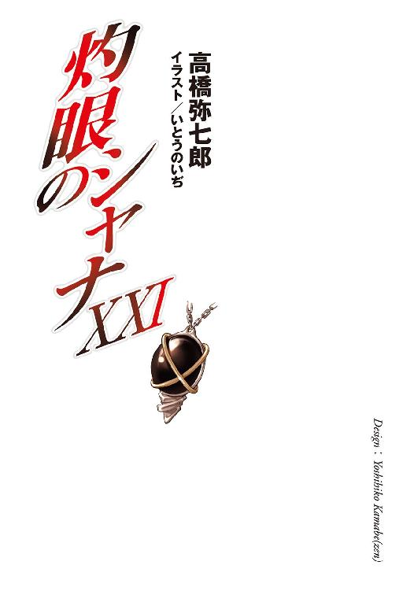
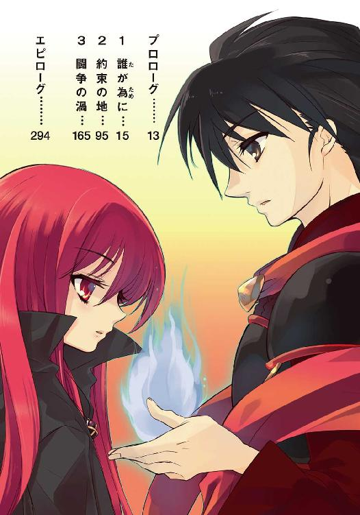
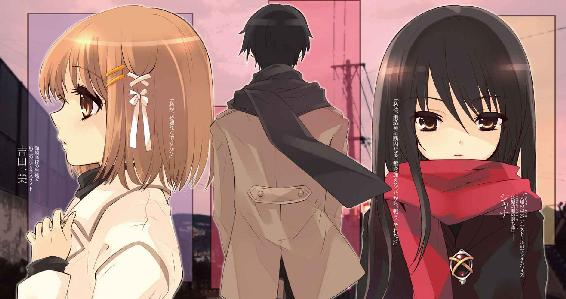
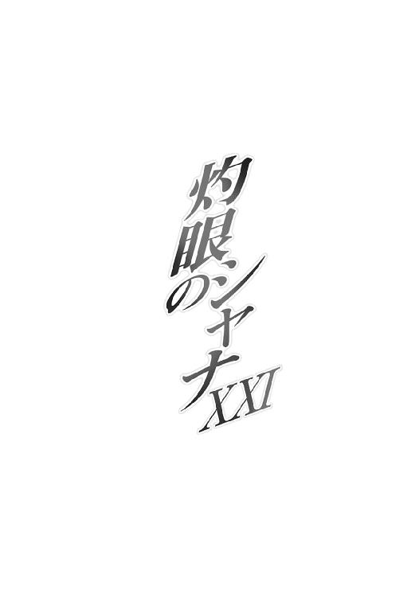
本書（電子版）に掲載されているコンテンツ（ソフトウェア／プログラム／データ／情報を含む）の著作権およびその他の権利は、すべて株式会社アスキー・メディアワークスおよび正当な権利を有する第三者に帰属しています。
法律の定めがある場合または権利者の明示的な承諾がある場合を除き、これらのコンテンツを複製・転載、改変・編集、翻案・翻訳、放送・出版、公衆送信（送信可能化を含む）・再配信、販売・頒布、貸与等に使用することはできません。
二学期終業式からの帰り道、
「あー、やっと冬休みだな。シャナちゃん、明後日のこと知ってるか？」
田中の小馬鹿にするような問いに、
「宗教主催者の生誕日を祝う『クリスマス』のことなら、中村公子に聞いた」
シャナが見返すように答えて、
「また変なこと吹き込まれたんじゃ......」
『 』は心配から思わず口にして、
「今度、この皆で集まるのは三十日ですね」
吉田さんが少し寂しげに言って、
「それだけどさ、なんでクリスマスじゃなくて晦日にパーティーなんだ？」
佐藤が妙に鋭いところを見せて、
「ク、クリスマスはそれぞれ予定とか、あるかもしれないでしょ」
緒方さんが慌てて誤魔化して、
「ふうん。なるほど、ね──っうわ!?」
池が含みのある言い方で結んだ、そのとき、
緒方さんが、ハンカチを風に攫われた。
冴え渡った青い空の中に、その白いハンカチは吸い込まれるように、飛んでいった。
強く冷たい冬の風を受け、どこまでも遠くに、軽やかに飛んでいって、なくなった。
目の前の信号は、赤だった。
だから、みんなは動かず、その飛び行く様を見送っていた。
大通りに、車は疎らだった。
シャナもみんなと同じように、ただ、それを見送っていた。
異能の力を、使うことなく。
彼女なら造作もない些事だったはずの行為を、しなかった。
彼女はそこに留まっていた......自分自身の意志で、そこに。
プロローグ
二月、日本の御崎市は、分厚く重たげな、密度を感じさせる白雲の下にある。
空港での混乱を経、ようやく辿り着いた御崎市駅のホームで坂井貫太郎が安堵した、
（コネを使った特別便で来て良かった......帰国早々、千草さんに心配かけちゃ本末転倒だ）
その日、
創造神〝祭礼の蛇〟による、全世界へと向けた 二度目の宣布が堂々、発せられていた。
（こっちに来てもらうわけにはいかない、ってのが、この仕事の一番の難点だな）
世の表に在る者には聞こえず、世の裏で人を食らう〝紅世の徒〟と、それを追う異能の討ち手フレイムヘイズだけに届く、遠く、深い、男の声は、
（まあ今回は、久しぶり、というほど間は空けていないつもりだけど）
断固とした響きながら、肝心な部分を伏せた、なんとも奇妙なものだった。少なくとも、真逆の意味で次なる情報を欲していた〝徒〟とフレイムヘイズらは、そう思った。
（いや、いかんいかん......それは単身赴任者の身勝手な言いぐさってもんだ）
曰く──「発動の地は......『日本』。楽園『無何有鏡』を求む心のまま、ただ来よ。なお、その地において人を喰らってはならぬ。均衡に対する干渉は、儀式への障りなれば」──。
（身重の千草さんを一人で家に残しているんだ、家を空けた時間の長短は関係ない）
今すぐにでも駆け付けんと身構えていた彼らに示されたのは、楽園へと至るための詳細な集合地点と時間ではなく、大まかな国名と、簡潔な禁止事項だけだったのである。
（親しかったカルメル女史やシャナちゃんも、今は街を離れてしまってるというからな）
ともあれ、この宣布を受けた直後、日本におけるフレイムヘイズ防衛拠点の中核たる外界宿東京総本部は、司令・副司令合意の元、同国構成員に施設の全面放棄と国外退去を命じた。
（今度の休暇は少し長めに取ったことだし、まずはゆっくり女房孝行するとしよう）
彼らの決断を、遠くチューリヒの外界宿指導部が糾弾する前に、現実がその妥当性を証明した。宣布に惹かれ、全世界の〝徒〟が続々と、日本への上陸を開始したのである。
（以前の轍を踏まないよう、今度こそ、ちゃんと見ていてあげなければ）
対処を決めるための猶予さえ与えられない、それは即日どころか、即時の早さだった。
もはや、戦争にもならなかった。一つの終結へと向かって、ただ事態は加速してゆく。
世の人の、表に見えない、陰裏で。
１ 誰が為に
開港したばかりという、とある日本の地方空港が、無惨な戦火に見舞われている。
やや首都圏に近い、という辛うじての取り柄があるくらいで、国際どころか国内の定期便すら片手の指に足りなかったはずの空港駐機場は、この日、開港以来最多の、大型機による臨時便を迎えるという活況を呈していた。
それらが今、全て爆発、炎上している。
駐機場の各所、航空燃料の爆圧で弾け、高熱を撒き散らして立ち上る猛火の中に、割れ朽ちた管とも、地に伏す獣骨とも見えるシルエットが、黒々と不気味に揺れていた。
その片隅、爆発で吹き飛ばされ、壁のように地面に刺さった尾翼の陰で、
「ちっ、この期に及んでサカりやがって、馬鹿が！」
落とされた機の乗客だった数十人が固まって、口々に罵声を上げている。
「最後の、着陸しかけてた便の連中は？」
「さあな。逃げ出した奴もそれなりにいたようだが、半分はあのまま死んだろうよ」
「くそっ、フレイムヘイズ......討滅の道具どもが！」
言った〝紅世の徒〟は、破片の端から辺りを注意深く見回した。
空港一帯は、巨大な陽炎のドームに包まれ、内部の地面には火線の紋様が描かれている。内部の事象を隔離・隠蔽する因果孤立空間『封絶』が、展開されているのだった。
その閉ざされた戦場には、巨大な残骸が砕けて燃え上がり、巻き込まれた人間も幾らか散らばり燻っている。吹き荒れる熱風と舞い上がる火の粉の中に、燃料と肉の焼け焦げる刺激臭が混じり合って、光景はまさに壮絶の一言に尽きた。
誰かが呟いて、
「まるで地獄だな」
「その感想は、気が早いんじゃない？ 奴ら、すぐこっちにも仕掛けてくるはずよ」
誰かが返した。
言葉を証明するかのように、遠く離れた場所にある残骸──着陸寸前に封絶を張られ、滑走路上で撃墜された──の周囲では、既に交戦が始まっている。程なく彼らの潜む、残骸を数多燃やす駐機場の方にも、本格的な攻勢をかけてくるだろう。
また、誰かが呟く。
「なんで先に降りてたこっちからやらなかったのか、おかしいと思っていたが......さては奴ら、離発着が一番集中する時間を狙って仕掛けてきたんだな？」
「なるほど、できるだけ多く獲物を下ろしてから片付けるつもりだった、と。道具どもは、その手の情報を外界宿経由でやりとりしてるからね。羨ま──」
「ッ伏せろ!!」
声を切らせるように、彼らの頭上を色とりどりの炎弾が通り過ぎていった。そのまま背後の真新しいターミナルに命中し、中で動かず静止していた人間たち諸共に吹き飛ばす。
同時に、空港の各所から、怒号が上がっていた。フレイムヘイズらの本格的な襲撃に、他の場所で伏せていた〝徒〟らが、呼吸を合わせ反撃を開始したものらしい。
新たな爆音や足音に、咆吼や切り結ぶ刃の響きが加わって、地獄は戦場に変わる。
一人が誘われるように、体の輪郭を揺らし始めた。
「今の炎弾からすると、案外実数は少ないな......人化を解いて、一気に叩き潰すか」
「ああ。だが、ちょっと追い詰められたからって、そこいらの人間を喰らうなよ。我らが創造神からの命令、俺たちが楽園に行くための担保なんだからな」
「分かってるわよ......んなことより、その楽園に行くってんで、めかし込んできたのが全部パアだわ。見てよこれ！」
言い合う間に、彼らは皆、様々な形による本性を現している。
「無粋の文句は道具共に言え......よし、行くぞ、楽園へ！」
「おう、行くぞ、楽園『無何有鏡』へ!!」
欲得を燃やし、楽園を目指し、まさに猛然と、〝徒〟らは走り出した。
アメリカはニューヨーク。
マンハッタン島と、イースト・リバーを挟んで東に位置するクイーンズ区の南岸に、広大な敷地を持つジョン・Ｆ・ケネディ国際空港はある。ニューヨークを囲む三大空港の一つにして、国際線・国内線併せて一日に軽く一千便を超える、世界有数のハブ空港である。
この大空港の一角、無数に人の行き交う荷物受取所の外で、二人の少女が残された貴重な時間を使い、立ちん坊で人を待っていた。
一人は、十代半ばと見える、ブラウンの髪を二つにまとめた西洋人の少女。氷点下も珍しくない真冬のニューヨークに相応しい、分厚いオーバーコートの襟に首を埋めている。
「へえ。シャナさん、ニューヨークは初めてだったんですか」
言って少女は、手にあるフルーツカップを隣へと差し出した。
焦っても早まったりはしない、旅客便到着までの暇潰しとして、付近の売店で買い求めた物である。底の浅いプラスチック容器に一口サイズのベリーフルーツが盛られている。
そこからラズベリーを一つ摘んだもう一人の少女は、
「うん。アメリカには何度か来たけど、『四神』のいる都市には足を向ける機会がなかった」
やや年齢の低い、年の頃十一、二歳ほどの、長い黒髪をした東洋人の少女。薄手の黒いロングコートを纏い、鮮やかな赤いマフラーを軽く首に巻いている。
その赤から零れるように首から下がった、黒い宝石に交差する金の輪を意匠したペンダントが、うむ、と低い声を漏らした。
「我らは、外界宿を極力使わぬようにしていた。ある程度、世事に慣れた後でなくば、便利使いするどころか、逆に便利使いされてしまうことになる、と判断したゆえな」
黒髪の少女は、彼の台詞が数年前にジェノヴァで出会った外界宿の主催者たる──まさに世事に慣れ切った──男の助言そのままであると気付いたが、口にはしなかった。
また答えて、
「ああそれ、大正解。最近の外界宿ってばミョーに計算高くなっちゃってさあ」
「そうそう、こっちがちょっと協力求める度に取引チラつかせて、面倒ったらないのよねー」
艶っぽく脱力した、軽くはしゃいだ、二つの声があがる。これは、ブラウンのお下げ左右に一つずつ結わえられた鏃型の髪飾りからのもの。
彼女ら、間断なく行き交う人混みの中にあっても呑まれず、確とした存在感を以て佇む二人は、人間ではない。異世界〝紅世〟より渡り来た〝紅世の王〟と契約することで異能の力を得た討滅の追っ手、フレイムヘイズだった。
黒髪の少女は『炎髪灼眼の討ち手』シャナ。ペンダント型の神器〝コキュートス〟に意志を表出させる〝天壌の劫火〟アラストールの契約者である。
「必要な情報を得るためには、一定の代償は払うべきだと思う。以前の私は......そういうものが特になかったから、寄らず頼らず済んでいただけ」
言う途中で僅か、謹直な声の調子を鈍らせたが、強引に言い切った。
そんな彼女の揺れにブラウンの髪の少女、『極光の射手』キアラ・トスカナは気付いたが、あえて追及はしない。それよりも、彼女と契約し鏃型の神器に意志を表出させる〝破暁の先駆〟ウートレンニャヤと〝夕暮の後塵〟ヴェチェールニャヤに余計な口を挟ませないよう、素早く続ける。
「でしょうね。契約して数年なら、まだ囚われるほどのしがらみもないでしょうし」
が、その先回りは、あっさりと二人に押しのけられた。
「これが百年ほどのベテランだと、色々無茶させたりさせられたり、貸し借りも複雑に入り組んじゃうものねえ」
「一度サーレが行方不明になった時なんか、もう、なんでもしますってな剣幕でフゴッ」
キアラは結局、実力行使として両のお下げの先を握りしめることで黙らせる。この百年で覚えた、最も効果的な二人への逆襲法だった。
「余計なことばっかり言うんだから」
言って、我ながら情けない、取り繕った笑顔を傍らに向けたが、向けられた側の少女はどこまでも素直に率直に、そういうものか、と頷いている。
（シャナさんって、契約して数年って言うけど、まるで数千年を経た調律師みたい）
話に聞いた、極めて特殊な生い立ちの実証とでもいうべき反応である。
中国奥地の戦場で合流して以来、キアラはこの、天罰神の契約者として名高い......正確には、あの負け戦における活躍で名を知らしめたフレイムヘイズと、近しく話す機会を持っていなかった。お互い使命を果たすための同行、強いて友達になる必要もないが、
（──「あー、今後の共闘をとりあえずの方針にしている我々としては、だな。主導者の、ある程度の人格と性向の把握は必要と考えるわけだ」──）
そんな、師匠にして恋人たる男からの勧めもあり、この地において自分に課せられた、とある重要人物らの出迎えに彼女を誘ったのだった。彼の相棒たる〝王〟の、
（──「君らは自在法の操作に疎いし、ただ待ってるのも苦痛だろうから、一緒に行っておいでよ。傍に退屈を香らす壁の花よりは、道行く人の目を楽しませる野の花が良い」──）
遠回しに雑用を押しつける風な言いぐさには大いに不満だったが、発言の前半部は全くその通りなので、提案については甘受するしかなかった。そして、
（──「分かった」──）
という一言だけで同行を承服した、自分と数歳違いとしか見えない少女、その横顔に、
（それにしても）
改めてキアラは視線を流した。
（会話が続かないなあ）
年相応の少女としての可愛らしさを表しつつも、核とする強靱な意志力の方をこそ、より宿す......フレイムヘイズの精鋭に散見されるタイプである。
ただ、その表情は、どこか堅くて重い。
（待ち合わせで時間を削られてイライラしてる、ってわけでもなさそうだし）
戦場をともに脱出して香港へと、そこから特別便を仕立てて空路、このニューヨークへと辿り着いた半日ほどの間も、少女の雰囲気はずっと同じだった。
（必要最低限な返事をして、契約した〝王〟もそれを補足するだけ、だなんて）
例え面識が浅くとも、大抵の相手ならキアラと二人の〝王〟の会話には、正負なんらかの感情的なリアクションを示すのだが、傍らに在る『炎髪灼眼の討ち手』は、その辺りが皆無である。観客の沸かないショーマンになったような気がして（望んでそうしているわけでは決してないが）、理不尽な失望まで感じてしまいそうだった。
（まさか、フレイムヘイズが人見知りってわけでもないよね）
戦場で合流した途端、初対面の彼女に指示を下した、確信と覇気に燃え上がっていた激しさは、今はなりを潜めている。衰えたのではなく秘めただけ、ということは考えるまでもなかったが、今その殻となっている全体が、どこか表情同様に堅く重く──それこそ、苛立ちの軽躁さなどとは真逆であるように──感じられるのだった。
（一体、この態度はなんなんだろう？）
二人だけの会話を機に、全くの親切心、あるいはお節介から、キアラは考え始めた。そうする必要はない、と理解していながら、まるで悩む友達を気遣うように。
これは、せっかく知り合ったフレイムヘイズの少女と、もっと親しく話したい、という素朴な欲求と、師匠が言ったとおりの、とりあえずの方針に沿って動くためにその存在の形を把握すべき、と考える生来の真面目さ、双方の理由による。
当のシャナは、自分が変わっているということに無頓着、というより無自覚なまま、必要な返答をして会話が終了した、と言わんばかりに手元、勧められて摘んだラズベリーを、しげしげと眺めている。
「......」
フレイムヘイズとしての活動を始めた最初期、見知らぬ野菜（今では勿論、それがなんであったのか理解しているが）を囓って酷い目にあって以来、加工されていない生の食べ物を買い食いすることを控えてきた、それゆえの警戒だったが、一人ではなくなった後の経験が、ほんの軽い一押しを、彼女に与えた。パクリとひと思いに食べる。
「......！」
途端、口に広がった新鮮な甘酸っぱさが、満面の笑みを弾けさせた。戦いに臨んで以降、感じることのなかった、その生物としての喜びが、堅く重い殻を破ったかのように。
「美味しい」
「よかった」
なにに対してか、キアラは心底からの安堵である声を漏らしていた。
この尻馬に乗って、ウートレンニャヤとヴェチェールニャヤが囃し立てる。
「あーらあら、ラズベリー一つで可愛らしい変身を見せてくれるものねえ」
「ホントホント、天罰神じゃなく天使の契約者の方がしっくり来そう！」
シャナは答えず、ちょっと困ったような、微か笑ったような、曖昧な表情を見せた。
と、その様を見たキアラは、
（ああ、そうか）
今までの彼女の雰囲気について、ようやくの理解を得る。
（苛立つどころじゃない......緊張、してたんだ）
あまりに落ち着き払っていたため、また貫禄と存在感による押し出しが強すぎて、一旦解きほぐされなければ、そうと認識できなかったのである。
これまでを経て、これから行うことへの、緊張を。
決して大袈裟な表現ではない、世界の命運を賭ける戦いに挑もうとしていることに緊張しない人間などいない。キアラ自身もその一角に在るが、彼女はあくまで参加する側である。
シャナは違う。
戦いを呼びかけ先頭に立つ、主導者なのだった。
今、世界各地で起こっている、まさに土壇場の大混乱で示されているように、創造神の掲げた条件に挑む行為は、決して単純な正義感や心意気による応諾を得られるものではない。むしろ、条件を支持する側からの妨害を受けるものですらあった。真意を隠して、ただ戦うことだけを標榜していればなおさらである。
（なにより、彼女にとっては敵......戦う相手が、相手だし）
思って、キアラは少女から目を転じる。
（無理もない、か......あっちの方も）
ロビー出口の端、チェックインカウンターの陰、シャトルバスの停留所に、どちらともいえない者たち、旅客を装った外界宿の構成員が複数、屯していた。ニューヨークに到着して以来、彼女ら一行につきまとっている監視である。
（交代時間は十五分くらいかな、もう違う顔ぶれになってる）
あくまで常人、フレイムヘイズ相手に隠れ果せるわけもないが、その存在自体が『外界宿の指導部が、彼女らを危険人物としてマークしている』という意思表示になっている。
（どうせバレてるんだから、もっとノンビリすればいいのに）
そう、師の教えに則り、状況を不用意に深刻なものと受け取らないよう努めているキアラと違って、使命感が強く謹直な性格の（短い同行でもそれはハッキリと伝わる）少女には、外界宿の指導部、その一部からにせよ危険視されているという事実は、さぞかし心を重くしているに違いない。
（ただでさえ、いろいろ負担があるんだし、今一緒にいる私がフォローしなくちゃ）
この点に関しては勢い込んで、キアラは強く笑い、もう一度フルーツカップを勧める。
「ブルーベリーも美味しいですよ」
「うん。これかな」
監視の存在を暗黙の了解としているシャナの方も、ようやく浮かんだ笑みを守るように尋ねていた。知識としては知っているのか、容器から正答の青い粒を拾い上げる。
ただそれだけの、しかしどこか意地ましい姿に、キアラは思わず抱きしめたいほどの愛らしさを覚えた。彼女にそうさせている戦う相手に対する怒りも、同時に。
「ええ。底の方にパイナップルもあります」
その後者の方を助長するように、空港内に昨日の宣布以降、延々流れ続けているアナウンスが、常ならば決して出ることのない、世の陰における戦いの実害を、また新たに報じた。
日本行きの航空機、全便の欠航を。
二人は、掲げられた電光掲示板に流れる、欠航と再開の未定を記した文字列を見上げ、
「世界中の地方空港襲撃も一段落した、って出がけに聞きましたけど......国内線を使うお二方の到着便に遅れが出なければいいですね」
「速いとはいえ、空路の安易な使用が危険だってことを、ようやく〝徒〟も認識したんだろうし、元々サンフランシスコは襲われてなかったから、大丈夫だと思う」
いつしか自然に、声を交わしていた。
既に見慣れた光景として無視しているが、そこここで日本人を始めとする数多くの旅客が係員に詰め寄り、説明を求めている。ニュースとして聞いても、実際にその目で空港の様子を確かめなければ納得できないほどの異常事態なのだから、これは仕方がない。
ニューヨーク発の便だけではなく、世界から日本へ向けての航空便が、全面運航停止に追い込まれている。極東の島国は今、空路を完全に封鎖されていた。
先だっての主要港湾連続テロに続く、より大きな事件が日本を襲っていた。
公式には『日本全国の空港において同時多発的に発生したテロ事件』と見なされている現状は無論、創造神〝祭礼の蛇〟の宣布によって引き起こされたものである。
が、現実のなんという複雑さか、その発生の実情は外界宿指導部の予測から外れたものとなっている。即ち、混乱を引き起こしているのはフレイムヘイズの側なのだった。
あるいは、当然の結果と言えなくもない。
ほんの半日ほど前に発せられた、宣布。
「発動の地は......『日本』。楽園『無何有鏡』を求む心のまま、ただ来よ」
大命の成就する正確な場所も時間も示されないまま、それでも〝徒〟らは、この呼びかけに応じた。自分たちのために作られる楽園で己が願望を充足させる、その燃え盛る欲望を原動力として、彼らは遮二無二、日本への上陸を始めたのである。
この第一波は、人間が全世界にネットワークを張り巡らせた交通機関、速さでは並ぶ物のない航空機を使っていた。彼らも近代以降は、このような文明の利器に頼ることへの抵抗をなくしている。どころか、日々の生活の中で大いに活用すらしている。
よって、特別のチャーター便からプライベートジェットまで、膨大な数の航空機が、その内に数十から数百もの〝徒〟を満載して日本に飛び立つこととなった。楽園創造を阻害する、と宣布で禁じられていなければ、どれだけの人間が喰われていたか、想像するだに身の毛のよだつ無茶苦茶な数が、ほとんど文字通りに押し寄せたのである。
そして、その尻尾へと食いつくように、まるで〝徒〟の博覧会の如き異常の活況を呈し始めた日本各地の空港を、単独、または少数の徒党を組んだフレイムヘイズらが襲撃していた。
この無謀極まる速攻は無論、外界宿指導部の指示によるものではない。日本における司令塔である東京総本部は、この予想された上陸には抗し切れないと判断して、大命宣布の直後、構成員らに国外退去を命じている。にもかかわらず各地の空港で交戦が開始されたのは、まさにフレイムヘイズという存在の根幹がなさしめた業、業と言えた。
彼らの、世界のバランスを守る異能の討ち手、という認識は、客観的には正しいが、主観的には誤っている。何故なら、彼ら個々人がフレイムヘイズとして契約した理由の大半は、自分や周囲の人間に危害を加えた〝紅世の徒〟への復讐だったからである。
なにより、そのために彼らは戦う。
世界のバランスが保たれるのは、あくまで結果に過ぎない。
そのような仕組みの中で生み出されてきた彼らである、創造神〝祭礼の蛇〟が唱えた、誰にとっても素晴らしい恵みをもたらすという楽園創造に、無条件の賛同など、できようはずもなかった。世界のバランスを守る異能の討ち手である前に、彼らは復讐者だったのだから。
外界宿指導部が想定したほど、また期待したほど、フレイムヘイズは一枚岩の結束で進退を決める組織人でもなければ、使命感で自身の欲求を殺すような聖者でもなかったのである。
賛同するにしても、まずは己が復讐を果たしてからの話。
それが襲撃に加わった者らの、偽らざる本音なのだった。
世界のバランスなどよりもっと重要な、仇たる〝徒〟を、この日本へと集まる流れの中で捉え得る可能性は、漫然と世界を流離うことで遭遇し得るそれより遙かに高い。しかも、新世界の創造が成されてしまえば、集った全ての〝徒〟らは彼方へと渡り行き、おそらくは二度と帰って来ない。つまり、復仇の機会を永遠に失ってしまう。
この『食い逃げ』を座して見送ることができず、無茶と知りつつも圧倒的多数との戦いに走る者が続出したのは、まったく無理からぬことなのだった。大命とやらがいつ始まるとも知れない情勢下、拙速だろうとなんだろうと、まず飛びかからずにはいられなかったのである。
一方の、今さらの攻撃を受けた〝徒〟の側は、大いに迷惑している。
元来、ごく希な例外を除いて、彼らはフレイムヘイズとの戦いに価値など認めていない。己の欲望を充足させることが目的なのだから当然だった。彼らにとって戦いとは、降りかかる火の粉を払う、というだけの行為に過ぎない。常からそうであり、この時は特に、そうだった。ゆえに彼らは、感慨を抱くでもなく、陶酔に浸るでもなく、ただ無造作に数で圧殺する方法で迷惑な攻撃に対している。
結果、両陣営とも無秩序な揉み合いが日本各地で一斉に勃発し、幾らかの被害と騒動は、封絶をはみ出して残った。テロと認識されたのは、この部分である。
外界宿は、表に出る情報を最小限に止めようと各方面への手当てを行う一方、航空機関の混乱を知って、自らの力で極東の島国を目指す〝徒〟らによる第二派、本命となるだろう大侵攻の動向を、未だ統制下にあるフレイムヘイズらに探らせている。その実行段階における具体的な行動は、指導部の大方針が未決であるため、各人の判断に委ねられた。
とにかくなにより、物事を考えるための時間がない。外界宿にとっては、自身たる組織も相対する世界も大きすぎて、咄嗟に取り得る行動はこの程度になってしまうのだった。
不幸中の幸いと言うべきか、現在のところ、復讐心に駆られ暴走する者は主流派ではない。フレイムヘイズの多くは、組織としての最大限の妥協と譲歩である、この監視命令に──先の負け戦による萎縮もあって──服している。従容と、とは決して言えなかったが。
その中で、感情的な激発をせず、懊悩で時を潰さず、黙々と戦いの準備を続けているのが、彼女ら『炎髪灼眼の討ち手』一派だった。
一派と言っても、直接連れ立っている者は、フレイムヘイズ数人と人間一人、総勢で十にも満たない小勢力である。総司令官ゾフィー・サバリッシュ承認の元、彼女らは今、なにより貴重な時間を削り、ニューヨークを訪れている。
この小勢力が挑もうとしている決戦に必要不可欠な、彼女らに協力してくれる可能性を見出した、最大の戦力たる三人のフレイムヘイズを加えるために。
一人は元から当地に在るため、既に合流済み。残る二人も、程なくこのジョン・Ｆ・ケネディ国際空港に現れる予定である。ただしいずれも、合流したとして合力が得られるかは、まだ分からない。その話し合いをするための三人......否、『三神』の集結だった。
「美味しいですね」
「うん」
シャナとキアラが交互に一つずつフルーツを摘んで、容器の中身を空にした頃、入国審査を終えた新たな旅客が、荷物を受け取るためロビーに出てきた。
キアラは壁に掛かった時計を確認し、傍らに促す。
「あれが、指定の便かな......そろそろ、来られるはずです」
「分かった」
シャナは頷くと、手を軽く振って清めの炎を薄く纏わせ、汚れを払った。
今から会う二人は、絶対的に戦力の不足している彼女らの戦いに不可欠な存在であり、また戦いそのものの意味を問うことにも繋がっている。並々ならぬ覚悟を以てぶつかり、その同道を取り付けねばならなかった。
先とは別個の緊張に、頬の線を硬くするシャナは、まさに臨戦態勢の気迫で、溢れてくる人並みを見つめた。通りかかる幾人かが、その姿を認めてぎょっとする。
キアラが、それを宥めるべきか思案する内に、
（うーん......これじゃ、初っ端から挑戦するみたいに取られかねないな......でも、あのお二人なら、どうせケンカにはならないだろうし......）
「っ？」
シャナの目が、妙な集団が審査のゲートを潜ってくるのを捉えた。
というより、集団を伴う、異常に大きな気配が近づいてくるのを、全感覚で得ていた。
集団は一見して、著名人に群がる記者、あるいは愛好家の群れと見えたが、全体の空気は、前者にしては無遠慮な熱気が足らず、後者にしても空虚な喧噪がない。
といって、グループを組んだ旅客でもなく、構成は老若男女様々、ただ誰かを囲んで、漫然と進んでくる。なにより奇妙なことに、全員が悲しげな顔で、囲んだ誰かに向かって気遣いの声を各々かけているのだった。
「さ、着きましたよ」「お姉ちゃん、大丈夫？」「道、分かりますか」「ほら、元気出して」「足、ふらついてませんか？」「休憩しなくてもいい？」「あ、私が荷物を取ってきましょう」
一人が集団から離れ、小さな革製のトランクを受取所から持ってくる。それを、中央にある一人の女性へと、恭しく、ではなく、恐懼して、でもなく、ただ優しく、手渡した。
「ありがとうございます、本当に......」
受け取った女性は、こちらの方が恭しく、また恐懼して頭を下げる。
年齢の掴めない麗容に憂いを漂わせる女性で、纏めた豊かな黒髪を一房、野暮ったく後ろに垂らしている。丈長なワンピースの上から、不思議な模様で埋め尽くされた上掛けを羽織っていた。世慣れぬ旅行者丸出しの風体が、麗容と大きな存在感に、まるで釣り合っていない。
と、その肩が縮こまり、潤んだ声が漏れる。
「道中でも、よくして頂いて......うう」
「そんな、とんでもない」「お姉ちゃん、どこか痛いの？」「ああ、どうか涙を拭いて」
周りの人々も応えて宥めに入る、という奇妙な流れを、
「まったく、キリがない。旅の道連れども、ここでお開きだ、散れ！」
対照的にカラッとした、中性的な声が断ち切った。声だけでなく、実際に掌をしっしと振って女性の周りに集まっていた人々を、まるで羽虫のように追い払う。言われて渋々、挨拶とともに散ってゆく人垣の中央、女性の傍らで、一人の少年が笑っていた。
「ははははは！ 『波濤の先に踊る女』よ。おまえと旅をすると、すぐこのザマだ。幾ら百余年ぶりとは言え、扱い切れない行列の整理も、流石に二度は多い」
二十に届かない年頃の、細く尖った体格と容貌を、近所へのお出かけのように山高帽とポンチョで装っている。深い皺から成る笑顔が影を生んで、逆に得体の知れなさを見る者に印象づけていた。カツン、と簡素な棒による左の義足で軽く地を打って、また笑う。
「ほんの半日くらい、人に構うのを止めて綺麗な人形でいることが、何故できない。ロスで合流した時点で、有象無象の群れに面した私が帰らなかったのは、まったくの奇跡だぞ」
「ごめんなさい、『死者の道を指す男』......でも、私......」
一回り下と見える相手に、まるで詰問されたように女性は涙ぐんだ。
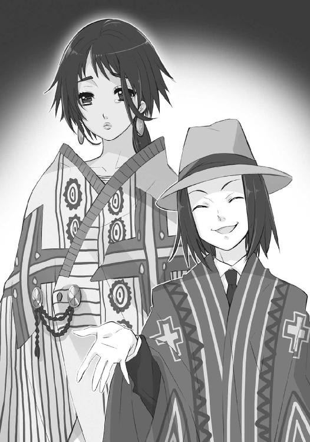
少年は言い訳には取り合わす、辺りを見回す。
「フン、こっちにも倉の端を這い回るネズミがいるな。チューリヒでふんぞり返って人間の代表者面する増上慢ども、そんなに私たちが動いたのが気に食わんか」
「そんな言い方しなくても......」
女性の声をまた無視して、少年は笑みの中に、まるで牙を剥くように白い歯を覗かせた。
「邪魔だ、追い払え」
そう、誰にか命じた瞬間、
（なっ──）
（ぅわっ!?）
シャナとキアラは、唐突に一帯で湧き上がった驚異的な密度を持つ力を、その発現のほんの端、ひび割れたダムから迸る飛沫のように感じて、全身を総毛立たせた。
同様に、得体の知れない力に当てられた空港の旅客たちが、背筋をびくんと跳ね上がらせている。また同時に、空港の各所に張り込んでいた外界宿の監視の前に、
「ぎゃあっ!?」
「ひい！」
黄金の面を付けた褐色のなにかが床から伸び上がり、抱きついていた。それらは一瞬、当人のみならず周囲までも驚愕させて、すぐ抱きついた相手に溶け込むように、消える。
「な、なんだ今の──」
「あ、足が!?」
理解が追いつかない監視たちを、さらに怪現象が襲う。
いつしか強靱な力に満ちていた彼らの下半身が、急激な方向転換に振り回される上半身を連れて、勝手に動き始めたのである。スプリンターのような猛ダッシュで、人混みも構わず突き飛ばして乱暴に、空港ターミナル最寄りの出口に向かって。
傍目にはジョークとしか見えないその排除を、心底から可笑しげに見送った少年は、
「ははははは！ さて、不躾な覗きも失せた」
目の前に歩み出ていた二人のフレイムヘイズに向き合うと、ポンチョの前を華麗に捲り上げて、マントのように背後へと羽織り直した。現れたスーツの腰に下がる尖った石のメダル、神器〝テオトル〟が、野太い怒鳴り声を張り上げる。
「息災かあ!? 翻る双面!! 閃く矢!!」
周りで驚く人々を強いて無視してキアラたちが答え、
「はい。皆さんも、お元気そうで何よりです」
「あんたたち、相変わらず時と場合お構いなしで無茶苦茶するわねえ」
「そりゃあ、久しぶりの遠出で騒ぎたくなる気持ちも分かるけどさー」
少年は牙を剥くような笑みを、もう一人へと向けた。
「こちらのお嬢さんは、初めまして、だな。私は〝憚懾の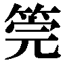〟テスカトリポカの神官『死者の道を指す男』。フレイムヘイズとしての名乗りは『群魔の召し手』サウスバレイだ」
自己紹介にシャナが答える前に、女性が泣き崩れるように歩み寄って、その手を取る。
「貴女が......貴女が〝殊寵の鼓〟と『雨と渡り行く男』に、後事を託された御子ですね？ 私は〝清漂の鈴〟チャルチウィトリクエの神官『波濤の先に踊る女』、またの名を『滄波の振り手』ウェストショアと申します」
「摂理神格にして審判断罪の化現、偉大なる〝天壌の劫火〟──お会いできて光栄です」
その腰に同じく下がる、波状輪郭をした石のメダルから、穏やかな女性の声が上がった。
アラストールが、改めて告げられた自身の責務を背負うように、重く返す。
「うむ......我らこそ、即急なる集合に感謝する。だが」
末尾に加えられた逆接の言葉を、その契約者が継いだ。
「まだ託された、とは決まっていない」
世界屈指の強大なるフレイムヘイズ二人を、覚悟に燃える眼差しで見据えて、言う。
「私は、壊す側かもしれないんだから」
昨日来、この世に起きている大混乱を、戦い以外で最も色濃く反映している場所がある。
スイスのチューリヒ、風光明媚なる湖岸の丘陵に居を構える、外界宿総本部である。
今、そこでは奇妙な形式での会合が執り行われていた。
「空港での暴挙は全て、フレイムヘイズが起こしているんだぞ、分かっているのか!?」
「世界のバランスを守る使命とやらはどこへいったのだ！ これでは戦うべきではない時を弁えているだけ〝徒〟の方がマシというものだ!!」
世界中から急遽集った百余人は、いずれも有力な外界宿主催者で、人間とフレイムヘイズの比率は大よそ半々というところ。男女とも年齢は、外見だけに限っても老若様々である。
「言っていいことと悪いことがあろう！ 弁えるというならば、そのフレイムヘイズに守られてきた世界に生きている身を弁えたらどうだ!?」
「そうよ、フレイムヘイズが何故そうしているのか、分からないわけでもないでしょう？」
論戦、というには些か感情の占める割合が多い。激高して叫ぶ者も、温厚に語る者も、互いにありったけの理性を動員して、なお声色に心の傾斜が透けている。
「守られてきたことは、恩着せがましく言われるまでもない、よく知っている！ しかし、だからといって、個人の感情をこのように微妙な情勢下でぶちまけて良い法があるか！」
「たしかに。今まで守られてきたのだから黙れ、というのは傲慢な論法と言えよう」
「その決めつけも、また傲慢だろう。このように微妙な情勢下だから、彼らがあのような行動に出ている......とは考えないのかね？」
彼らは、大机を挟んで向かい合っていない。
全員が同じ向きに、段差を付けて座っている。
この奇妙な位置取りも当然、会合が行われているのは、総本部を地下に隠した大邸宅の並びにある歌劇場なのだった。わざとらしいほどに荘厳なネオバロック様式の、そこそこ年を経た石造りの奧に、最新の工法によって改修された優雅な内装が広がっている。
「同感ですが、無謀な戦闘を仕掛けている者たちを、なんとか説得して押しとどめられませんか。このままでは、なんら戦局に寄与しない損耗が増すばかりです」
「まったく、これでは犬死にだ。年経た古強者も混ざっていながら、冷静な判断力を失っている。フレイムヘイズなら誰もが、創造神の提案を聞いていただろうに」
「親兄弟か妻子、恋人か友達、最悪その全てを喰らった仇が、手の届かない場所に逃げようとしてる横から『身勝手な感情で動くな。失った者のいない俺たちの、より安全で幸福な世界のために、おまえの数百年来の復讐を諦めろ』なんて言うのかよ、冗談じゃねえ」
「......言い方がアンフェアではありませんか？」
「できるだけ率直に、本音を言葉にしたつもりなんだがな」
その客席に、百余人が疎らに陣取って、ある者は据え付けられたマイクを通して、またある者は素の声で、切迫した事態に対する各々の所感を述べている。
「他の絶対多数に害が及んでも、自分の復讐を押し通そうっていうの？ 奴らは、震源地の日本で人間を喰うな、って厳命までしてるのに、ナンセンスだわ！」
「及んでも、押し通すよ。ナンセンスでもなんでも、僕らはそうするために人間としての未来も繋がりも捧げて、討滅の追っ手たるの存在と力を得たんだから。少なくとも、今仕掛けている連中は、そう思っているだろうね」
歌劇場の特徴である、客席と舞台の間に設けられたオーケストラ・ピットには、楽団の代わりに情報機器が据え付けられ、舞台上にある複数のスクリーンに映像を写し出している。
映像の内容は言うまでもない、刻々と変わり続ける世界情勢。
これを最前列で、場にそぐう歌劇の鑑賞でもしているかのように背筋を伸ばし、顔を隠す黒いベール越しに見上げている喪服の女性がいる。
先の戦いで西部防衛戦の司令官を務めた『昏鴉の御し手』ヒルデガルドである。
（困りましたわね......大方針が纏まらないことは覚悟していましたけれど、ここまで話が噛み合わないとは思いませんでしたわ）
（怯懦の安寧に誘惑され、震慄の狂騒に傾倒する、いずれも人たるの性──）
その左胸にある、真っ赤な宝石をあしらったブローチ型神器〝フリズスキャルヴ〟から、彼女と契約し異能の力を与える〝鬼道の魁主〟ヴォーダンが、厳かに返した。
パートナーの声なき声に含まれる諦念の響きに、ヒルダは苦笑し、
（お互い掴み合いになりかねないから、狭いテーブル越しで対面するのではなく、この席の離れる歌劇場で顔を同じ向きに揃えてみた試みも、要らぬお節介でしたね）
ヴェールも動かない、微かな溜息を吐く。
眼前の舞台上で大写しになっている映像の内に、フレイムヘイズにとっての好状況は、何一つない。ただただ、各地で暴走する討ち手らの上げる被害報告だけが増え続けている。
その中での最大の項目、世界各地の空港に対するフレイムヘイズの襲撃は、ようやくの終息に向かいつつあったが、それは〝徒〟の方が、空路の利用を避け始めたからに過ぎない。現に、〝徒〟の目的地である日本でのそれは、未だ変わらず続いている。
（そう、問題は日本......創造神は今この時にも、事を始めかねない）
ヒルダは世界地図の東端に位置し、様々な矢印が指し、また周囲に記された数値が増加し続けている島嶼国家を見つめる。
（戦うのなら、この国に戦力を投入して創造神の企図を阻む......そうでないなら、周辺諸国での被害を食い止める......どちらを選ぶにせよ、早急な手当てが求められるというのに）
指し示された〝徒〟の目的地たるこの国が、さらなる騒乱の巷となることは、既に避け得ない情勢となっている。上陸第二波の前兆として捉えるべき動きも近隣諸国で発生していた。
（彼の宣布が、末の枝まで割り裂いた──）
（それは、もはや一つの樹としては機能しない、ということですの？）
ヴォーダンの迂遠な所感を、ヒルダは否定できなかった。
この危急存亡の折に、議論を主導する、人も流れも出てこない。
誰も彼もが、決め手を持たないまま、大異変の中で右往左往している。
「まあ、待て。起こってしまった襲撃は我々の今後の作戦行動に障るものである、という点では一致を見ている。ここは我々の方の大方針を、まず定めるべきではないか？」
「その提案も既に聞き飽きたけどな。なんだい、順番から言えば、今度は融和策かな？」
「意地の悪い物言いで茶化すものではない。ただ、かの神の主張を冷静に検討してみてはどうだ、と言っているのだ」
「奴の、得意満面のプロパガンダを鵜呑みにして戦いを止めろと？」
「あれこそ甘言というものではないか。奴は確かに〝紅世〟真正の創造神。有象無象の願いを束ねて、言った通りのことは実現するかもしれん。だが、それ以外のことはどうだ？」
「それ以外？ 人を喰らわずとも済む世界が新たに作られ、我々の世界と〝紅世〟の間における壁ともなり、ほぼ全ての〝徒〟は去る......それ以外に、なにか不安要素でも？」
「ハハハ！ アンタとも在ろう者が、随分と能天気な未来像を描くもんだ。人を喰らわずに済む世界？ そいつは結構なことだが、ただそれだけのことでしかない。奴の言った通りの〝存在の力〟に満ちた世界ってのが、どれほど危険なシロモノか、少しでも想像してみたか？」
「......いや」
「使える力が無限にあるってことは、今、この世界で行われている以上の......いや、それとは比べ物にならないレベルで奴らのやりたい放題を許す、って予想はできるよな？」
「そう、なるじゃろうな。強大な者に限らず......否、卑小な者こそが、今まで抑えてきた身の丈に合わぬ欲求に駆られ、あるいは興味本位で気軽に、世界の理を乱す挙に出るじゃろう。無限に生る木の実を、一体誰が大事に扱おうか」
「でもさあ、無駄に浪費しまくっちゃったとして、その〝存在の力〟自体が無限なら、世界に与える影響も最小限で済むんじゃないの？ 人だって喰らう必要なくなるわけでしょ？」
「心の箍を外された者らが、最小限で済むほど紳士的に振る舞ってくれるか、私には甚だ疑問ですね。かの〝棺の織手〟や〝瓊樹の万葉〟、果ては〝探耽求究〟のように、世界の構造を弄りバランスを左右する暴挙に出る者が、無限の力を得てしまうんですよ？」
「ま、そういう連中は間違いなく新世界を目指すわな」
老若男女、上がる声を最前列で背中に受けるヒルダは、議論の混迷振りに頭を悩ませる。
（互いに纏まっていないと、働きかける要点を見つけることもできませんね）
先から続く主張の、あるいはこの会合そのもののややこしい点は、
創造神の企図を断固阻むべし、と主戦論を唱えるのが必ずしもフレイムヘイズではなく、
新世界誕生と〝徒〟の移住を静観すべき、と慎重論を唱えるのが同じく人間に限らない、
というところにあった。
フレイムヘイズであっても、復讐を成し遂げた後であれば、今起こっている事態を受け入れることに吝かではなくなっていたし、単に理性的な判断から（判断が妥当かどうかは、また別問題だが）不用意な戦闘を行うべきではない、と考える者もいた。
対する人間の側も掲げる姿勢は一致しておらず、フレイムヘイズでないというだけで近隣縁者を〝徒〟に食われた復讐者もいれば、長く外界宿に奉職して使命感の塊となっていた者、率直に友誼から助力を誓っている者など、様々なケースがあった。
要するに、フレイムヘイズも人間も、単純に己が存在の種類で賛成反対に色分けされておらず、個々人の事情によって千差万別の斑になっていたのである。
創造神〝祭礼の蛇〟が、わざわざ全世界に向かって情報をばら撒いたのは、同胞たる〝徒〟らに報せる、という常識的な理由からだけでなく、企図を果たすまでの僅かな時間、外界宿をこうした立ち往生に追い込むことも目的としているのだろう──恐らくは鬼謀の〝王〟による発案に違いない──と誰もが薄々察していた。
「そもそも、人を喰らう必要がないことと、人の喰らわれる心配がないことは、全くの別問題だ。奴らは必要なら、まして邪魔なら、幾らでも人を喰らい、殺すだろう」
「新世界の人たちは、必要なら殺しもするけど、そうでなくてもどうでもいい、そんな軽い存在になっちゃうわけだ。麦の穂と野の草、どっちの立場が上なのかな、ヒヒッ」
「では聞くが、未だ現実にはなっていない、先から並べたくられた単なる危惧だけで予防的に殺そうというのか？ このまま見過ごせば、奴らは勝手に出ていくというのに」
「それを見過ごせない者らがいる、と何度言えば分かる。第一、奴らが犯してきた悪行を見逃せと言うのか？ 好き放題したまま、より好き放題できる場所に移るだけなんだぞ」
「そうは言いますがね。こちらの世界の被害を、ほぼ完全になくせる......それも現実的に見て一つの利点であり成果ですよ？ 大災厄がいずれ起こるとして、それまでの時間を数百、数千年と稼げるのですし」
「問題の先延ばしに過ぎん。今まで数千年かけたが、喰らい喰らわれの関係、危うく歪む世界、なにも革新的な変化はなかったのだぞ？ 向こうでも勝手放題やっていれば、いずれは同じ結果となる。そうなれば〝紅世〟も、この世も、新世界とやらも、みな共倒れだ」
遣り取りを聞きつつ、ヒルダは愛惜の表情をベールの内にたゆたわせる。
（せめてフォン・クーベリックかピエトロ様が御存命なら、取り纏めも期待できた......それ以前に、私などがこんな所にしゃしゃり出て来ずとも済んだのですけれど）
近代以降、組織を合理的な体制に改革した外界宿が、このような『なにをもってして決定とするのか』すら分からない大混乱に陥っているのには相応の、そして深刻な理由があった。
他でもない、その組織の最高意思決定機関『ドレル・パーティ』が、主催者たる『愁夢の吹き手』ドレル・クーベリック諸共、先年俄かに起った［仮装舞踏会］との緒戦で殲滅されてしまっていたのである。その後も、人望厚い交通機関の運営者『无窮の聞き手』ピエトロ・モンテヴェルディなど、外界宿の主要な支部と運営者が次々と攻め滅ぼされている。
つまり、外界宿は動乱の最初期から頭を潰された状態にあり、以降も内部の権力抗争が勃発するなどして、時を徒に過ごすばかりとなっていたのである。
数ヶ月の後、半隠居状態からこの収拾に駆り出された『震威の結い手』ゾフィー・サバリッシュは、以上の経緯からガタガタになった組織を、『来たるべき戦いに備える』という一点に集約させることで打開した。あらゆる組織の部署に、あらゆる外界宿の支部に、あらゆる種類の構成員に、明確な目的を与えることで共同歩調を取らせたのだった。
彼女自身の卓抜した統率力もあって、この方策は図に当たり、外界宿はようやく混乱を脇に置いて一つ組織としての力を取り戻した。幕僚長にして稀有な組織操縦者である『犀渠の護り手』ザムエル・デマンティウスの加入後、その整備は格段に進み、程なく勃発した大戦には、当時の状況で望み得る、最高の態勢で当たることが叶ったのである。
しかし、その進むことで保たれていた安定は、すぐに倒壊の憂き目を見る。
組織の全力を以て編制されたフレイムヘイズ兵団の大敗、という結果によって。
仮初の原動力が失われ、苦心の成果が朽ち、さらには創造神の宣布によって、戦いどころか存在の意義すら揺らがされることとなった彼らは、僅か半日しか経っていない、という条件を措いても、もはや一つ意思の元に纏まることなど不可能、と思われるほどに割れていた。
この会合も、誰一人意見を纏めようとしない、相手に主張を認めさせようともしない、虚しい演説のすれ違いを続ける、道化芝居の様相をすら呈し始めている。
ヒルダとヴォーダンも、こんな中で流れを主導するほど無謀ではない。
（私自身は、一応敵軍を退けたとはいえ、単なる前線指揮官に過ぎませんからね）
（会議は踊らず、さりとて進まず──）
それどころか、発言する気すらなかった。
今は、ただただ、話を聞いている。
「そんな初歩的な講釈は受けるまでもない。だがな、そのいずれとやらはいつ来るんだ。今言われたように数百年、数千年も先ではないのか」
「遠い未来だから、自分が死んだ後だから知ったことじゃないと？ 別世界の話だから、向こうのことは向こうに放り投げてしまえと？ 今の自分さえ良ければいいのか？」
「そりゃ人間はすぐ死ぬからいいよな。見逃せば、自分たちの生きてる間は安全だ」
「その未来が怖いから、今、現に在る人の喰われる世界を肯定して、なにも知らない人間に黙って喰われ続けろと言うのですか？ 私は、そんな非道な世界は御免被りたいですね」
「黙って喰われるなら、なにも知らない他の世界の、赤の他人がいいというわけか」
「それを非道というなら、非道と呼ばれても構わん。儂は、そこに生きていてなんの心配もない世界を、家族や友人のために用意してやれるチャンスが来た、と思っておる」
「そうですよ、喰われた側の苦しさを知る貴方がたが、どうして喰われることに怯える側の気持ちを理解しようとしないのです？ 数十年という短い怯えは軽いと仰るのですか？」
「っ......それは......」
「あ、あの〜ですねえ、新世界でも我々や新しいフレイムヘイズが戦えば〜、この世と同じように〝徒〟の跋扈を抑えることができるのでは〜？」
「たしかに、新世界の人間も、今までと同じような過程で契約することは可能だろうが、必要性は薄いな。かの神の言った通りになるのなら、世界に〝存在の力〟が溢れている以上、人間の殻に閉じこもる必要はない。危惧を抱いた〝王〟自身で戦える」
「それなら、新世界が危険な物であるかどうか見極めてから、改めて大災厄を憂える〝王〟たちに渡ってもらえば、万事解決なのでは？ フレイムヘイズというシステムに不安を抱き躊躇していた多くの〝王〟も、自身で行けるのなら喜んで協力してくれるでしょう」
「楽園が創造されたと知った大小無数の〝徒〟も、同時に雪崩れ込むだろうが、な」
「あっ......」
「しかも、その両者は、無限の燃料を持って戦い続けるのだ。過激な世情は、過激な打開策を生む。大災厄は、下手をすると我々が想定しているより遙かに早く訪れるぞ」
「作ってから、危険と分かったので消す、というわけにはいかんのよ。一旦作られたら、そこで起きる全てに、誰もが責任を負うことになる。問題の大半も、その時点で終わりさ」
ふと、ヒルダは考える。
（こっちから新世界には、渡れるのでしょうか......その世界では、フレイムヘイズは、どうなるのでしょう？ その世界ができたら、狭間の歪みはどうなるのでしょう？）
（何れも憶測、故に惑いへと転化する──）
ヴォーダンの言うことは、いちいち尤もだった。
どの主張も、結局は憶測に基づいた悲観と楽観。
双方の振れ幅は考える当人の心根次第であり、新世界創造が現実のものとならない限り、どちらもが決定的な説得力を持ち得ない。もちろん、会合の出席者もそれは承知の上だったが、彼らの立場が、今の情勢が、議論の放棄を許さない。自身は強弁を続け、相手の強弁を受け続ける、そんな不毛極まる論戦しか、現下の条件では成立し得ないのである。
ただ、
フレイムヘイズの側は多少、実感による強弁の材料を各々有している。同席しているどの人間よりも遙かに長く近く『〝紅世の徒〟という生き物』に接している、という実感である。
楽園を与えられた〝徒〟が、そこでなにを思い、どう行動するか。
数千年もの間、世界の危機を訴えられ、それを理由に追われ、さらには両界の狭間が大嵐になるという現実の障害が起こってもなお、行動に歯止めをかけなかった彼らが、今さら殊勝に世界のバランスなどに気を払ったりするわけがない。
フレイムヘイズであるがゆえに、その確信が在った。
ヒルダも、懸念する。
（なにより〝徒〟たちは、新世界が『自分たちのために作られた楽園』だと知っている......それは、彼らの放埒に拍車を掛けはしないでしょうか？）
今までとは根本的に異なる、世界。
それは、自分たちのための、楽園。
神が与え給うた、力溢れる新天地。
（その事実は、彼らをより傲慢にしてしまうのではないでしょうか？）
新世界の誕生による、新たな観念の形成をこそ、ヒルダは懸念していた。
ヴォーダンが端的に、それを纏める。
（世界の所有者たるの、全ての行為が赦されるとの認識──）
もし、新たな観念が〝紅世〟にまで広がり、後発の〝徒〟までが容易に知り得るまでの常識となった時、新世界は一体どうなってしまうのか。
ぞくっ、とヒルダの伸ばした背筋に、不意な寒気が走った。
（これも、あくまで憶測......）
全てを曖昧にしていたその前提に、いつしか彼女は縋っていた。
「その、今さらだが......交渉などはできないのか？」
「交渉？ ［仮装舞踏会］とか!?」
「創造神と、だ。彼の神は、元人間の〝ミステス〟を代行体としていると聞く。事の経緯から見て、その〝ミステス〟は話して分からない相手では決してない、と思うのだが」
「冗談ではない！ 経緯を調べたのなら分かっているだろう、その怪物は、先の戦いで兵団主力に致命的な打撃を与えた当人なんだぞ!!」
「それは戦場でのことではないか！ それに彼は、自らの思うところを述べただけに過ぎない。彼の側からの主張としては、大よその事実に違いあるまい!?」
「む、う......！」
「それに、なにも止めろとまで言うつもりはない。ただ、創造に新たな項目を付け加えるだけだ。人間を喰らえない世界に、いや、いっそ決して歪むことのない完璧な世界を作っ──」
「残念ながら、それは無理です」
「──えっ？」
「彼の神は、あくまで我々〝徒〟の神なのですよ。先の『大縛鎖』も、今度の新世界も、実際のところ本人の意思から思いついたわけではありません。大多数の〝徒〟が抱いている願いの反映、願いの核心を集約して決まった、機能による結果に過ぎないのです」
「ということは、まさか」
「ええ。彼の神は、大多数の〝徒〟が、その完璧な世界なるものを心から望まなければ、なにもできません。目的に沿った行動であれば、それこそ〝存在の力〟の続く限り幾らでも可能ですが、都合が悪いから修正を、と融通の利くものではないのです......神たる存在の仕組みとして。もちろん、その代行体に過ぎない〝ミステス〟との折衝も、無意味です」
「そんな......」
「万能に見える創造神の、それが神としての制約なのですよ」
「ちぇっ、意表を突いた名案だと思ったのにな。やっぱ代行体っていうくらいだし、操り人形なんだな。ま、そうでなきゃ、知り合いの加わってる軍を叩き潰したりできないよね」
ヒルダは会話の流れから、気遣いの視線を傍らへと送った。
ホール最前列、真ん中の席に、四十過ぎの修道女が座っている。先の大戦で指揮を執った、また現在も、外界宿の実質的な指導者とされるゾフィー・サバリッシュである。
彼女は今、そのヴェールの額に刺繍された青い星型の神器に意思を表出する〝払の雷剣〟タケミカヅチともども、沈黙を守っている......というより、裁きを受けるつもりで、劇場内の全員が視線を向ける、最前列中央席に陣取っていた。
中国奥地における決戦で、幕僚長ザムエル・デマンティウス始め、客員『皓露の請い手』センターヒル、出陣した総兵力の八割が戦死した。創造神復活の阻止、もしくは討滅、敵策源地たる移動要塞『星黎殿』の占拠、もしくは内部に隠された機密の奪取、いずれの戦略目標も達成できなかった。言うまでもないことながら、兵団は再起不能である。
生中な表現もし難い、大敗北だった。
その総指揮を執った彼女は、戦場からの離脱を果たして即、この地に帰還している。
日本への反攻作戦を図るには、もはや権威は失墜してしまっており、周囲の協力も許可も得られないことが分かり切っていた。現実問題、今のフレイムヘイズ側にそれが叶う余力があるかどうかも疑わしい。が、それでも世界規模での統制と情報を司るのはここを措いてない。
彼女が、シャナらとの同行という無責任で安楽な道を選ばず、単騎で日本に向かうという匹夫の勇も振るわず、粛然とチューリヒに戻り、解任動議は無論、感情のはけ口としての吊るし上げも覚悟で今の席に着いているのは、己の立場でできることを改めて探すためだった。
が、しかし、会合が始まって幾らか時間が経った今もなお、そんな彼女の覚悟、あるいは熱く煮え滾っている空気とは裏腹に、会場から非難の声は一切上がらず、解任動議にも未だ触れる者がない。まるで彼女がそこにいることに気付いていないかのような態度である。
これは、他の参加者が特別慈悲深かったから......では、当然ない。戦況の詳報に目を通した全員が、あの有為転変激しい戦火の下で、誰が彼女以上に上手く立ち回れるものか、と恐れたためである。采配への異論を唱えるには、発言者にも相応の力と格が求められるのだった。
それでも、会合に踊っている感情的な声が、聞いた通りのものであれば、なんらかの糾弾を行う者も出たかもしれなかったが、やはり、同じく誰一人、そうする者はない。
なんのことはない、彼らは怒鳴り合っていても、精神の根幹では理性を失っていなかったのだった。大戦と同等以上の、どうすればよいのか分からない窮状を最終的に纏め得るのは、この肝っ玉母さんしかいない、と判断していたのである。
動乱の当初から組織の主導権を巡って争っていた者たち、大戦における尽力を功績として勢力を拡大しようとする者たち、今現在の混乱に乗じて発言力を得ようとしている者たち、それら人間・フレイムヘイズ問わないいずれもが打算の矛を置いて、ゾフィーの総司令官職留任という暗黙の合意の元、遠慮なく自分たちの本音を虚心坦懐、ぶつけ合っているのだった。
なにもかも、まずは当面の事態が終息してから考えよう。
だから、終息するまでは存分に慌てふためき話し合おう。
もっとも、互いに歩み寄らない以上、なにも決まるまい。
代わりに、己が持てる思いを全て吐き出し、ぶつけよう。
その奇妙な掣肘......情念や思想に引かれて右往左往しつつも、現実に体制を動かす一線を決して超えない『理性の奇観』に、ヒルダは心底、呆れ返っていた。
（まったく、こんな大真面目の茶番に振り回される実戦部隊は、いい迷惑......いえ、いいツラノカワ、という表現だったかしら？ やはり、ダンに代わって頂くべきでしたわ）
（論決に思いを遣らぬ百家争鳴なれば、ただ縺れ行くのみ──）
返すヴォーダンの声にも、どこか投げ遣りな成分が含まれている。
（まあ、あちらのように、全てを真に受けて悄然としてしまうよりは、私たちは不真面目な分だけ幾らか救われている、と考えるべきでしょうね）
ゾフィーを挟んで、自分と反対側を、ヒルダは軽く見やった。
その最前列端の席に、〝布置の霊泉〟グローガッハの意思を表出させる壺型の神器〝スプレット〟を抱えた『姿影の派し手』フランソワ・オーリックが、縮こまるように座っている。彼も至急戦場から戻り、ゾフィーの副官としてお供をしているのだった。
会議の前、彼から聞かされた友人たちの近況にヒルダは思いを遣り、
（今、友の愛し子はニューヨークで緊急会談中......外界宿指導部では幸い、各個に動く討ち手には不干渉の構えを取っていますし、もう一人の便宜も図ることができますわね）
また、憂える。
（だとしても、組織として纏まった戦力を正規の手段で用意して差し上げられない、というのは、それを決定できる場に居合わせている友人として不甲斐なくはありますけれど）
彼女の背後では変わらず、
「撤退中のフリーダーやオルメスは分かるけど、なんでミカロユスまで通信途絶なんだ？」
「もし新世界が完成したらさあ、私たちも残党狩りくらいしかやることなくなるの？」
「バカを言え！ 奴らの暴挙を阻むためなら、核でもなんでもぶち込んでや──」
「冷戦時代、全て徒労と結論付けたはずだが？ 北極海の二隻でまだ不足か」
不毛な論戦が、無駄に大きな火花を散らし続けていた。
数あるフレイムヘイズの中に、『大地の四神』という、強大にして特異な四人がいた。
彼らは古来より大地と、そこに暮らす人間を、悪霊たる〝紅世の徒〟の魔手から守るという使命の元、戦い続けてきた。神たる〝紅世の王〟から力を授かった神官、と自らを任じる彼らの規定では、大地とは南北アメリカ大陸を、人間とは同地の先住民たちを指す。それ以外は、彼らの概念にはないことだった。
しかし、ほんの五百年ほど昔、そこに規定外の人間たちが規定外の世界から現れ、彼らの大地を発見したと言い、勝手に名前を付け、開拓や所有という不気味な真似を始めた。
彼らは、その前例のない異常事態が発生した当初、彼らを神官として鍛え上げた先師よりの教え──「神の戦士たるは、世を乱す悪霊の退治こそが本務であり、人間の行いに関わってはならない」──に従い、変わらず悪霊を倒すことだけに専念していた。
しかしやがて、規定外の人間たちは、彼らの大地に暮らす人間、本来守るべきだった者たちを圧殺し始めた。治乱興亡は元よりこの大地にもあったが、規定外の人間たちが巻き起こした災禍は、かつてのそれらとは比べものにならない大規模、かつ容赦のないものだった。
規定外の人間たちの齎した病、戦争、略奪による席巻は、まさに根こそぎという規模で、かつてそこに在った物を轢き潰し続け、その後に規定外の人間たちの世界が建造されていった。
それでも『大地の四神』たちは、使命を外れることはなかった。
彼らの愛した大地と人間を殺してゆく者らを守る結果となっても、なお。
使命を守る志操の堅さは元より、従来から僅か交流のあった異境に在る神の戦士たちから、念入りな道理の説明と情による説得を受けていたからでもある。
超然としていなければならない。
人の行いに干渉してはならない。
神の戦士として三百年以上、懊悩の中で、彼らはこれを頑なに守り続けた。
そうする間に、本来守るべきだった物はどんどん形を変え、部分的には消滅さえした。異境の神の戦士による懸命な制止の元、不本意な隠忍自重に努めていた彼らは、餓狼の如き北部の一団が俄かに収奪の苛烈さを激しくした一九世紀後期──激発した。
たった一人の祈りを火種として。
彼ら『大地の四神』は、その時眼前で作られつつあった世界を守るために戦っていたわけでも、懊悩してたわけでも、耐忍していたわけでも、断じてなかった。
既に失われつつある、座して死を見届けつつあった世界への愛惜から、
今や生まれつつある、もはや人間には止めようのない新しい世界へと、
ゆえに、だから、全てを叩き壊すという、神の戦士にあるまじき反攻を挑んだのである。
こうして、人間社会と国家の破壊を目指して起こった戦いは、
しかし、なんの成果も得られないまま、曖昧唐突に、終わる。
異境の神の戦士たちが、彼らを制止せんと力を注いだ結果、他地域に在る悪霊たちの蠢動が激化してしまったのだった。南北アメリカ大陸という一部にかまけたツケが、これを遙かに超えた広い世界に害を与えてしまったことを、『大地の四神』は知らされた。神の戦士の在り様に背いた彼らは、その報いとして世界の摂理から背を向けられたのである。
そして彼らは、悟った。
守ってきた世界が、自分たちの愛していた形と、異なっていたことを。
世界が、自分たちの愛した大地と人間を、守ってなどくれないことを。
悟らざるを得なかった。
そんな絶望、あるいは失望に苛まれた彼らは、神の戦士としての矛を、置いた。
彼らはもう、なんのために戦い、なにをすればいのか、分からなくなっていた。
一人の調律師が、外界宿支部の世話役になってはどうか、と提案し、彼らもそれを唯々諾々と呑んだのは、自分たちが守れなかった世界と人間が、全く認め難い同じ人間に喰われてゆく様を見ることに耐えられなかった、逃避でもあった。
この、誰も批判し得ない感情からの蜂起は、人間社会に対し直接行われた前代未聞の規模を持つ災禍として、それを抑えんと戦った異境の神の戦士たちも語りたがらない『内乱』の名で、外界宿の奥深くにのみ、癒えない深い傷跡たるの記録を残している。
その彼らが今、一人の死によって誘われ、集った。
現在、ニューヨーク外界宿総本部はマンハッタン島の南端、ロウアー・マンハッタンの摩天楼群に紛れる高層ビルとして存在する。最新鋭の設備と膨大な人員を備えたこの施設は、支部以上の、地域総本部たる格を、世の陰に厳然と示しそそり立っていた。
しかし、その世話役......非常時には司令官ともなる外界宿の長は、滅多にここへは寄りつかない。東へほんの一キロほど離れた、かつてのニューヨーク支部、己の名を冠した古い一商店を、未だ本拠として住み着いているのだった。
発展に伴い様式の新旧を混在させるようになった街並みの中、寂れたＳ探偵事務所と瀟洒なビルに入るＫ法律相談所とに挟まれた、小ぶりな低層長屋の一階。数カ国語・横書き・縦並びに文字の連なる古い古い看板を掲げた、その店の名を『イーストエッジ外信』という。
店舗の半分をかつて占めていた外国新聞の販売所は、現在、輸入雑貨を幅広く扱う事務所へと様変わりしており、人間の従業員が、ごく普通に立ち働いている。今では『イーストエッジ外信』の名は、一部重度なマニアに知られるなんでも屋として通っていた。
一方、もう半分は、設立以来ほとんど模様替えされていない、旧来の外界宿としての形態を保っている。気配を遮断する宝具、ガラスの十二面体『テッセラ』が天井に薄暗く光る、古酒場と見える内装。大きな変化は、無数の地図と海図が一台の通信機器になった程度である。
そこから伸びた受話器で話す少年、当地で合流して十分と経っていない佐藤啓作が、
「はい、ええ......ちょっ、そんな、だからそういう話じゃなくて！」
とある試みのため、別行動を取っているフレイムヘイズと通話していた。
「はぁ......あっ、そうなんですか!? ありがとうございます！ それじゃ......はい」
律儀に頭を下げて受話器を置くと、店の奥のテーブルへと声をかける。
「マージョリーさん、兵団の残りはウーハンってとこに足止め食ってるそうです。チューリヒが、せっついてもまともな返事を返さないんで、どこも動けない、とかなんとか」
「あっそ。んなことだろうと思った」
奧のテーブルに着いて、その卓上で超高密度の自在式を指先で軽く、しかし真剣に弄っている『弔詞の詠み手』マージョリー・ドーが、平然と答えた。
「兵団の件は、傀輪会が戦後の主導権でも狙ってやってんでしょ。このヤバい時に、人間ってのは、全くしぶとい......チューリヒの反応も含めて、大方の流れは予想通り、ってとこかしらね......っと、サーレ、防御外甲は剥がしたから、今反応した動作部をバラしてみて」
そのテーブル上に置かれた本型の神器〝グリモア〟から、〝蹂躙の爪牙〟マルコシアスが、いかにも可笑しそうに付け加える。
「ヒヒ、大負けの直後だ、そーりゃドタバタするもんさ。オマケにユージの野郎、誰も彼も酩酊させる酒をぶち撒けていきやがったしな。たった半日じゃ、酔いも覚めねーだろよ」
「ユージ・サカイ......〝祭礼の蛇〟の代行体か。資料は読んだが、ああいう頭の巡りが凶悪なタイプは、古今の討ち手でも滅多に見ないな。特殊な成り立ちが、異常な方向に才能を開花させた、ってとこか......よし、開いた。式の組成は八十二重ほど、か？」
彼女らと同じテーブル、向かい合う形で、『鬼功の繰り手』サーレ・ハビヒツブルグが、やはり卓上の自在式を、十字操具型の神器〝レンゲ〟と〝ザイテ〟で動かしていた。
そこから〝絢の羂挂〟ギゾーが、何十度目かという驚きを口にする。
「いやはや、末端の一部品まで、信じられない精緻さだね。まるで地球大のジグソーパズルじゃないか。虎の巻がなければ、構成どころか解析だけで何十年かかっていたことか」
言葉の通り、常軌を逸した煩雑さを持つ自在式が、テーブルの上で文字列を踊らせた。
その、二人が自在師として近しく共同の作業をする様に──彼らの戦いに必要な秘密兵器を作っている、と理屈では分かっていても──穏やかならぬものを胸に覚える佐藤は、
（ええい、とにかく俺にできる任務、任務だ）
と己に言い聞かせ、先の電話で得た情報を付け加える。
「で、レベッカさんですが......『ある程度、分捕る目処は付いたから、間に合わなくてもやることはやる、そっちもせいぜい派手にぶちかましとけ』と」
「ああ、いかにも彼女らしい言いぐさですね。兵団の残兵が指示も受けられない、実質放置状態ということなら、多少は計画も実行しやすいでしょう。とはいえ......」
「ふむ、やはりゾフィー・サバリッシュの威信低下によって、チューリヒは即応能力を喪失したか。初動段階で指導部を根こそぎにされたとはいえ、なんとも脆いことよの」
自在式の組み替え作業を別のテーブルから凝視している『儀装の駆り手』カムシンと、その手に絡む飾り紐型の神器〝サービア〟から〝不抜の尖嶺〟ベヘモットが、各々表に出すものは最低限ながら、深い慨嘆を漏らした。
それに、カウンター席に座るキアラが、抗弁するように返す。
「西部戦線も、あの〝祭礼の蛇〟の宣布までは、秩序立って動いてたんですけど」
が、即座に、
「それ以後は歴戦の勇士も浮き足立っちゃったから、私たちだけで突撃したんだもんね」
「遊撃隊が敵の撤退を鈍らせる間に、防衛各軍が追撃に転じる計画もお流れになったし！」
ウートレンニャヤとヴェチェールニャヤがフォローの形でぶち壊した。
「もう！」「モガッ」「ちょっ」
怒ったキアラが、彼女らの神器をぎゅっと握って黙らせる。
店の中央、大き目のテーブルに着いた『万条の仕手』ヴィルヘルミナ・カルメルが、隣を僅か気遣いながら、深々と頭を下げた。
「私どもによる創造神復活阻止作戦の失誤が、決戦場における敗退や、現状の世界的惨事を招いたことについては、謝罪の仕様もないのであります」
下げて、しかし彼女は、無表情を決意でより固めた面を上げる。
「この上は、新たな戦いにおける成果を以て挽回させて頂く所存であります。『大地の四神』お三方には、そのための助勢を、どうぞ賜りたく......」
「懇望訴願」
その頭上にあるヘッドドレスから〝夢幻の冠帯〟ティアマトーが言葉を結んだ。
求めを受けた三人の内、カウンターの中に立つ一人が答える。
「阻止を試みたことの真の価値は、事の終わりに明かされる。歴戦の勇士ならば、安易に良否を口にすべきではないだろう、嫋やかな舞、流れる力よ」
大きくも安らかな存在感を持つその男は、ヴィルヘルミナとティアマトーを独特のあだ名で呼ぶ傍ら、キアラの前に三杯目となるオレンジジュース入りのタンブラーを置いた。
「おまえたち不屈の挑戦者が、我々の手助けを即刻にも必要としていること。外界宿の組織だった反撃が、ほぼ不可能となったこと。我々は、その二つを前提として了解できればいい」
岩になめし革を被せたような厳つい面相に、頑健そのものという中肉中背、
「たしかにニューヨーク総本部の方も、この速さこそ肝要な局面で、徒に会議だけを続けている。この私にまで出席を求めているほどだ、よほど方途に迷っているらしい」
酒場の支配人として分厚い布のエプロンを付けた、このアメリカ・インディアンこそ『大地の四神』の一人、『星河の喚び手』イーストエッジだった。
その腰のベルトから下がる、浮き彫りを施した丸い石のメダル型神器〝テオトル〟から、彼と契約し異能の力を与える〝啓導の籟〟ケツアルコアトルが、貫禄のある男の声で続ける。
「それが今や、監視を、振り向けている」
肩書きとしては、ニューヨークにおける外界宿総本部の長に当たる彼だったが、実のところ殆ど運営には関わっていない。その任を受けた経緯から『大地の四神』が積極的にフレイムヘイズらの手当てに励むはずもないと分かっていたため、常から多くの補佐役、実質は合議による代理人らが、業務における万事を処決していた。
といって、蔑ろにされていたわけでは勿論なく、先の経緯と通底する蜂起した理由から、非常な尊崇の念を以て遇されている。具体的には、運営の基本方針には必ず同意を得ること、補佐役たちでも容易に判断しかねる重要案件の裁定を求めること、そして、このフレイムヘイズ専用の酒場、および隣の商店の経営に専念することへの公認である。これは、携わる業種の違いこそあれ、おおよそ他の三人も同様だった（ちなみに、ウェストショア以外は皆、経営者としても有能との評判を取っている）。
そんな彼に、総本部が会議への直接参加を呼びかけ、また時を置かず、監視を付けるまでに至っている。事態がいかに差し迫ったものとなっているかの、これは傍証と言えた。
今日、新たに監視の目を厳しくさせてしまった責任者、ヴィルヘルミナの求めを受けた二人目は、しかし全く気にとめた様子もない。
「ははははは！」
店の中央、大き目のテーブルで書類に目を通していたサウスバレイは大笑する。
「実体のない誰ぞの敵視など、今さらどう思うでもない。慣れ親しんでさえいる！ むしろ、面白くもあり、素敵でさえある！ 自分が物事を動かしている実感、というやつだ」
読み終わった書類とともに生身と義足、両の足を、テーブル上へと乱暴に放り出した。
その仕草に揺れる石のメダルから、テスカトリポカの怒鳴り声が上がる。
「これまでの情勢については了解した!! では次に、我らの同志がなにを伝え、なにを託したか、眩き炎自身の言葉で、改めて聞かせてもらうとしよう!!」
「そう、ですね。時間もない、とのことですし......始めましょうか」
隣席で同じく、三人目として書類を置いたウェストショアが、目元を拭いながら頷いた。湖上の薄氷を歩いて確かめるように、一つ一つ慎重に、涙声を紡いでゆく。
「もう一つ......あなたの提示する次なる戦いへの作戦案が、なにを目的とするのか......座して変容を待つ以上の意義を持っているのか......それも今ここで、確かめさせて下さい」
「我々の道は、既に〝殊寵の鼓〟と『雨と渡り行く男』の裁定により、戦う、と定まっています。ですが、轡を並べ共に戦うかどうかは、その限りではありません」
テーブル上に置かれた石のメダルから、チャルチウィトリクエが神妙な声色で告げた。
イーストエッジはエプロンを外して居住まいを正し、今度は挑戦者に求める。
「この情勢下、なおも敵の中核へと戦いを挑まんとする気骨には賛嘆を禁じ得ない。だが、その進む道が我々と重なっているかどうかは、また別の話だ」
「我らも、それを、聞いた上で覚悟を、決めよう」
その腰のメダルから、ケツアルコアトルも促した。
彼ら強力なフレイムヘイズ三人による要請が醸し出す、異常に張り詰めた空気の中、
佐藤が圧迫感に息を呑み、マージョリーが横目で作業を続け、サーレが操具を片手で繰りつつ顔を振り向け、カムシンが麦わら帽子の下から凝視し、キアラがタンブラーを両の掌中で握りしめ、ヴィルヘルミナが自分を試されるように緊張する。
この煮詰まった場の注視を一身に浴びて、天罰神〝天壌の劫火〟アラストールのフレイムヘイズたる少女、『炎髪灼眼の討ち手』シャナが、立ち上がった。
シャナは、迅速な行動が望まれる状況の中、しかし焦らず慌てず、自分たちが把握している全てを説明と説得に組み替えて、語り始める。
「私たち、兵団中枢の討ち手は、最後の出撃前、客員として従軍していた〝殊寵の鼓〟トラロックと『皓露の請い手』センターヒル......『雨と渡り行く男』から、聞かされた」
彼らは、『大地の四神』の先師たるフレイムヘイズ・宙の心臓から密かに伝えられた、とある真実を語った。フレイムヘイズが戦っている理由である、いずれ大災厄を引き起こすであろう世界の歪みが発生する仕組みについての、真実である。
それは、これまでフレイムヘイズという存在──即ち〝紅世〟から渡り来た〝王〟と、契約し異能を得た人間の双方──が認識していたものとは違っていた。
（お、俺も聞いてていいんだろうか？）
店の端に立つ佐藤が向ける当惑の視線を、シャナは保証するように見つめ返し、続ける。
「つまり......〝徒〟が放埒を行うため〝存在の力〟を取り込み消費することで、この世に歪みが発生し、両界の狭間は連動して荒れ、いずれ破局が訪れる......という不可逆の流れが、従来のフレイムヘイズたちを生み出した危機感の源泉であり、認識だった」
大災厄の到来こそ無駄な杞憂と取り合わなかったものの、以上の世界の仕組みについての認識を〝徒〟はフレイムヘイズらと同じくしていた。しかし実のところ、それは表面上の現象を繋ぎ合わせただけの推測であり、さらに言えば的外れな錯覚だった。
「実際に『歪む』という形容通りの有様を、我々は感じることができましたからね」
歪みの修整を己に課してきた調律師カムシンの意見に、シャナは頷く。
「その場だけを見れば確かに歪んでいたし、歪みが両界の狭間に嵐を起こす原因になっていたことも間違いじゃない。だからこそ、誰も気付かなかった」
真の理は、その錯覚と根本から異なっていた。
歪みとは、人や物を〝存在の力〟に変換・消費したことによる『欠損』ではなかった。この世では自然的に発生し得ないエネルギー状態へと変換したことによる『不安定化』だったのである。跋扈する〝徒〟によって明確な実体を失った『世界の揺れと撓み』が、積もり積もって世界の外側にある狭間に波風を、今や大きな嵐を、巻き起こしていたのだった。
「起きてる現象の奧に、もう一つ、隠された真の理が、存在していたんですね」
自身は百年、他者はその数倍数十倍、常識としてきた理論を覆されることの薄ら寒さを、キアラは声に混ぜる。さらに短い数年の戦歴ながら、シャナも受けた衝撃の程は同じだった。
「『星河の喚び手』によると、先師・宙の心臓は三千年前の『久遠の陥穽』発動時に、この世界の仕組みを識り、秘中の秘として隠してきた」
この世を構成する〝存在の力〟は、使われて消えるものでも、外に持ち出せるものでもなかった。異世界からの来訪者である〝徒〟が『この世に存在するための根源的な力』として、不安定化したまま保持されているもの、なのだった。
そして、保持者によって物体や現象として再構成＝存在させられることで〝存在の力〟はこの世を構成するものとして還元され、この世は使われた分だけ安定化する。
「日本で言う放火と鎮火を兼ねる、か。付き合わされる住民も警官も、いい迷惑だわ」
マージョリーの呆れ顔に、シャナは同意しつつ、自分の見解も付け加える。
「鎮火するまでの過程で住民に被害は出てるし、警官がいなければ、もっと早くに狭間が大荒れになったのも間違いない。ともかく〝徒〟には絶対知られてはいけない秘密と言える」
両界の狭間に嵐を起こした原因が、この世の損耗という不可逆の『欠損』ではない、取り込んだ〝存在の力〟を再び使うことで安定化させ得る『一時的な変質』に過ぎない事実は、〝徒〟らに自己正当化の大義名分を与えてしまうことになる。
嵐が起きているのなら、より多く〝存在の力〟を使って安定化させよう。
そんな、力を収奪する過程を無視した、現象と結果しか見ていない屁理屈が生じてしまう恐れすらあった。そうでなくとも、この世に渡り来る〝徒〟の多くは、嵐が起きている現実から目を逸らして己が欲望を優先する、文字通りに傍若無人な性向の持ち主なのである。
「創造神が今度の新世界創造とともに、全ての〝徒〟を連れてゆけば、これまで集めた〝存在の力〟も、何らかの形でこの世に『還元』され、当面の安定は得られる......が」
サーレの、一見物わかりのいい言葉に秘められた意を汲んで、シャナは核心に入る。
「問題は、楽園だからこそ危険な、新世界。その誕生の過程と、誕生して後の状況は、この世も〝紅世〟も両界の狭間も合わせた、『世界』に対しての危機を生み出す」
即ち、
この『変質と還元の真理』が〝徒〟の側に発覚する、という危機を。
新世界を創造する過程で、両界の狭間への道を開くという、かつて宙の心臓が遭遇したものと同じ現象が起こることは確定している。しかもそこには今この世に在る、ほぼ全てとなるだろう膨大な数の〝徒〟が居合わせることとなり、さらには自身で体験することにもなる。
また、そこで気付かずとも、それが真理である以上、体験の意味を悟る者が、いずれ出る可能性は低くない。というより、高いと言わざるを得ない。なにせ新世界は、尽きない〝存在の力〟で満ちている。より深く事象への干渉を試みる者が現れることは、まず間違いない。
「快適な新世界の誕生を知れば、〝紅世〟に留まっていた〝徒〟らも大挙して押し寄せるでありましょう。新たな環境ゆえに、改めて研究や試行錯誤を始める者も激増するはず」
ヴィルヘルミナの外れようのない予測を、シャナはさらに進める。
「〝徒〟が真理に気付いた時、『世界』の惨禍は加速度的に増す。もう全く、なにをしてもいいという錯誤を、彼らに与えてしまうから。そして、この欲望の驀進を制止するだけの精神的な枷は、自分たちのために作られたという事実を知る新世界の中では、まず育たない」
楽園に放り込まれた生き物は、安逸無為に日々を潰したりはしない。
できる余地があるのなら、どこまでも、できる限りを目指し尽くす。
それが欲望というもの、あるいは生きているということなのだから。
「以上の、新世界で起きるだろう事象への推測と予想を根拠に、この世以外へと干渉する行為が、果たしてフレイムヘイズ本来の使命なのか、私からは言えない......でも」
シャナは瞑目した。戦場での記憶を心の底から丁寧に掘り起こすと、
「──『無垢な、新しい世界を生んでまで行おうとしている......悪霊たちの再びの、より放埓になるだろう跋扈の実現を、私たち『大地の四神』は、阻もうと思います』──」
センターヒルの言葉を一言一句、正確になぞってから、顔を上げる。
「フレイムヘイズ兵団は、この言葉への賛同と引き替えに得た、彼らの協力で、二割の命を拾った。その兵団自体は、今や瓦解同然だけど、私は、私自身が敵中枢への戦いを挑むことで、彼らとの誓約を果たそうと思う。ゾフィー・サバリッシュの許可も、既に取ってある」
前置きしつつ、『大地の四神』を順番に、
「ただ──私の立てた作戦は、先の言葉と志を違えているかもしれない。私は、明らかな私情を交えた上での最善として、収束の未来図を描き、そのために戦おうとしている」
続いて、居並ぶ新旧の知己を見回して、
「そう、これは『炎髪灼眼の討ち手』シャナが、辿り着いた結論でしかない」
最後に、己が決意を込めて、
悠二と戦う中で、遂に思い描けなかった、
いけない、という漠然とした否定以外の、
明確な、彼への対抗措置を持つ者として、
強い声で、理解を求める。
「だから、今話した、託されたものの解釈、決起と行動の立脚点、この二つを貴方たちが是としてくれた場合にのみ、作戦の詳細と目的を説明する。もし非とされたなら......私たちだけで今すぐ、ここを発つ」
対する、今や三人となった『大地の四神』は、
「お嬢さん、あんたはどうも勘違いをしているようだな」
まず、サウスバレイの意外な一言で返していた。
「？」
怪訝な顔をするシャナに、
「私たち『大地の四神』は、世間並みの、ご立派な、フレイムヘイズじゃあない。大仰に使命を説かなくとも、善悪から一歩引いて論じなくとも、いいのさ」
少年と見える神の戦士は、山高帽の下から得体の知れない笑顔を向ける。
「御憑神と『雨と渡り行く男』が、真理を知る見地から創造神の行いを阻もう......そう思ったのは、全て彼ら自身の考えであって、紋切り型の使命に根ざしたものじゃないのだからな。彼らは、相手がフレイムヘイズだから、そうじゃない自分たちへの賛同を求めたのだよ」
抽象的な説明の意味するところを計りかねるシャナに、
「私たち『大地の四神』は、こう思っているのです」
今度は視線を宙にたゆたわせるウェストショアが語り始めた。
「神として契約し、悪霊として跋扈する〝紅世の徒〟......神官や戦士として戦い、餌食として喰われる人間......これらの交錯は、太古より共に、この世や〝紅世〟や両界の狭間という『世界』を形作ってきた摂理の一部なのだ、と」
これまでの涙に濡れたものとは打って変わった、ゆったり、しっかり、奧底に大きな情動を秘めて、しかし同じく揺れる......まるで底の知れない夜の大海のような声色で。
「喰らい、喰らわれる。殺し、殺される。これら、どこでも当たり前に起こっている『世界』の在り様......創造神による行いも、そのうねりの一つに過ぎないのだ、と」
そして、いつしか腕を組んでいたイーストエッジが続く。
「だが、思ったからといって、唯々諾々と受け入れるわけでは、ない」
果ての知れない星空のような、透き通り凛と張った声が、決意を朗々、宣言していた。
「我々はかつて、我々の愛した大地を挽き潰さんとした『世界』のうねりと、戦ったのだから。今起きつつある創造神による大乱も、同じだ。真理に照らして許せない、と、ここにいる我々が思ったのなら──戦うのだ」
「!!」
敵の大きさも事の難しさも重々承知していながら、あまりにも平然と、躊躇なく言い放って動じない、そんな『四神』たちの姿に、シャナは呆気に取られる。
本来の役割からすれば、使命を根拠に掣肘するはずの〝紅世の王〟らも、
ケツアルコアトルは貫禄を持って重々しく、
「我ら全て、変わりゆくもの。この大乱においても、我らは我らの、進む道を、選ぶ」
チャルチウィトリクエは穏やかかつ神妙に、
「あの戦いで起ち上がった時、私たちは既に、神官たちと進む道を選んだのです」
テスカトリポカは耳を叩くような大音声で、
「そなたが引け目に感じているらしい、その私情こそが、まさに我らの動因よ!!」
各々、戦いへの同調を表明していた。
ようやく『大地の四神』の思考法を理解し始めたシャナは、かつてセンターヒルとトラロックの発した言葉、その真の意味を悟っていた。
（──「私たち『大地の四神』は、それでもなお、創造神〝祭礼の蛇〟と戦います」──）
（──「私たちが『世界』と呼んでいるものゆえに、譲れないのです」──）
彼らはフレイムヘイズの使命ではない、自らの規定する『大地の四神』という価値基準を以て、取るべき行動を定めるのである。偉大な存在として世に知られる討ち手の殆どを占める、またそうでなくては偉大とは呼ばれない、使命に純化したタイプと、彼らは根本から異なる存在なのだった。
と、不意にサウスバレイが、思い出したように軽く尋ねる。
「そういえば、急なことで結論の部分しか聞いていなかったが......御憑神〝殊寵の鼓〟と『雨と渡り行く男』は、実際にはどのような形で、戦う、という結論を口にしたんだ？」
「......」
シャナはセンターヒルらの言葉を他の『四神』に伝える際、心のベクトルを恣意的に参戦へと傾けるものになりかねない、と考え、あえてその詳細を略していた。が、もはや結論は出、隠す意味もなくなった。やはり一言一句、正確に、言葉をなぞる。
「......『我は、我が身を以て汝らを動かす雨の一滴と成った。そして汝ら、友よ......』──」
声が染み込むのを待つかのような、
「──『戦う、という決断は』──『そう、きっと間違っていない』──」
何者も侵し得ない、静寂があった。
同志にして友たる男の言葉を、風韻の欠片一つ逃さず耳に捉えようと目を瞑り、噛み締めようと口を引き結んでいたイーストエッジが、ゆっくり目を開き、自問の声を零す。
「戦う、という決断、か」
言い置いた彼の英姿を思って、再び涙ぐんでいたウェストショアが、
「下したのは、どなた？」
他者の決断を支持する形の、言葉の意味を問いかけた。
無言で、シャナは自分の胸に手を当て、示した。
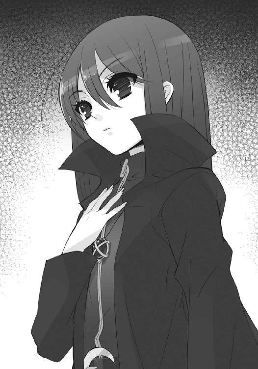
友の思いを受けたサウスバレイが、笑う。
「決まり、だな......あんたと行こう」
シャナは小さく確と頷いて、
「作戦を説明する」
次なる段階に入ろうとする、
コン、コン、
その区切りを待っていたかのように、音が鳴った。
誰も気配を察知できなかった、全くの不意打ちとしての、恐らくはノックだった。
フレイムヘイズは全員、在り得ないこの現象に、思わず立ち上がって身構え、組んでいた式を慌てて畳み、また鷹揚に音の源へと振り返った。
ノックされたのは、店の酒樽を貯蔵する地下蔵、その戸板を兼ねる、床の中央部。
この場にある中では、酒場の支配人であるイーストエッジとケツアルコアトルだけが知っていたが、地下蔵には外部と通じる通路など存在しない。つまりは、何者かがわざわざ地中を掘り抜いて侵入した、ということになる。
（どこであれ、今さら刺客を放つとは考え難いが）
思ってからイーストエッジは、
（いや、待て）
まったく今さら、気が付いた。
これだけの手練が揃っていながら、その接近を気取ることのできなかった異常事態に、思わず反射的に応戦の体勢を取ってしまったが......侵入者は、わざわざノックをしている。
そう思う間に、不可思議な侵入者からの、
「えー、ごめんください」
ノックだけではない、おずおずとした挨拶の声がかかっていた。
新たな闖入者を加えて、作戦の抜本的な練り直しを終えたフレイムヘイズらは、各々出立準備にかかった。といっても、実際に動いているのは、酒場の片付けをしているイーストエッジのみで、それも十分ほどで完了する。時間はなかったが、この作業を止める愚か者も、手伝う不心得者もいなかった。
（それが終われば、いよいよ......）
寒気に凍えそうなビルの屋上で、ヴィルヘルミナは平穏への名残を惜しむように、不夜城たる街を眺めやった。その、下町にまで余光を届かせている盛大ながら空々しい街明かりに、屋上の柵を前にした、少女の影が浮かんでいる。
（......）
長く美しい黒髪を、夜風に梳かしているとも見える、シャナだった。
ヴィルヘルミナとシャナは、出立に先立って、イーストエッジ外信の隣に聳える法律相談所ビルの屋上で、周囲一帯の警戒と逆監視に出ている。まったく遺憾なことに、これは［仮装舞踏会］始めとする〝徒〟ではなく、同輩であるはずの外界宿構成員に対してのものだった。
（......話しかけるべき、でありましょうか）
その任務は任務でこなしつつ、ヴィルヘルミナは悩む。
堂々と、まさに屹立する少女の姿に、しかしどこか愁いの色がある、と見て取ったつもりなのだが、フレイムヘイズ同士、なにかしてやるべき立場なのか、その判断が付かない。
これが単なる知り合いであれば迷いもしないが、相手は自分が完璧なるフレイムヘイズとして育て上げた少女であり、厳しく接した自分が少女にそんな態度を取ることは、少女への裏切りになるのではないか云々......要するに、少女の矜持に配慮して、勝手に身動きを封じられたように思っているのだった。実に難儀な性格である。
（せめて監視の目がなければ）
などと、責任転嫁までしてしまう。
ビルの屋上からでも、外界宿の放った監視の目が光っていることは十分に感じられた。
小さな秘密の酒場と、今は閉まった輸入雑貨店を囲んで、様々な格好の人間が辻々に多数、気配を極力殺したフレイムヘイズが遠くに若干名、というのは、かなりの規模と言える。
ニューヨーク外界宿総本部は、曰く言い難い恐怖、あるいは急転する事態への焦燥、またあるいは単なる任務への惰性から、シャナらがこの地に現れて以来、一貫してイーストエッジ外信と、そこに出入りする者への監視を続けている。集った面々に手を出すほど考えなしではないが、放置しておくほど怠慢でもない、その折衷案としての監視なのだった。
現状では特段の害もないが、出立に際して遠回しな対抗措置を取られたり、目立つ監視を連れたまま歩かされたりしては、迅速・秘密裏の遂行が前提という作戦に障る。ゆえに、出立時にはこの囲みを密かに抜ける工夫（最悪、実力行使で全て叩き伏せるつもりだった）を凝らす必要があった......のだが、先刻の闖入者の出現で、これはあっさり解決している。
（なにせ連中は、その囲みを既に破って、密かに侵入しているのでありますから）
つまり、彼女らが外に出たのは、監視は本当になにも気付いていないのか、という確認作業程度のもの......さらに言えば、出立準備ができるまでの暇潰しなのだった。
（むむ、そう、これなら）
ヴィルヘルミナは、今思ったことが会話のきっかけに使える、と思い付いた。できるだけさり気なく近づいて、できるだけ何気なく声をかける。
「ほんの先刻、この厳重な監視を潜り抜けたというのに、交代以外に一切の動きが見られないとは......連中、流石でありますな」
「うん。ヴィルヘルミナは、彼らのことを知ってたんだよね？」
シャナも、こういう話題には澱みなく返してきた。
スムーズに会話が始まったことに内心で安堵しつつ、ヴィルヘルミナは頷く。
「はい......〝天壌の劫火〟ともども、百年単位での腐れ縁と申しましょうか。先刻証明したとおりの確かな腕を持つ、その筋では有名な者たちであります」
「うむ、なんとも抜け目のない奴らでな。以前は一杯食わされ、まんまと逃げられた」
同じく機会を求めていたように、アラストールも、
「実績抜群」
さらにティアマトーも加わった。
シャナは、皆の意外な賞賛にクスリと笑ってみせる。
「あの力があれば、当初予定してた強引な作戦より、よほど上手くいくね。正直、使うことへの抵抗はあるし、真意が不明なのも不気味ではあるけど、当面は彼らを送ってくれた〝彩飄〟フィレスに感謝しないと」
「そうであります、な」
闖入者から聞かされた、驚くべきその名に、ヴィルヘルミナは視線を僅か落とす。
彼女が、味方として支援する、という単純な思惑で動くような人物でないことは、直接の面識がある者なら、すぐに分かる。彼女が、自分の恋人を取り戻すためなら手段を選ばない人物であることも、同じく。シャナ一派が今、最も欲しかった駒である、この闖入者らの派遣は、彼女の便利な爆弾である可能性も十分に考えられた。
考えられた、が、それでも利用せずにはいられない窮状に、シャナらは置かれている。
（おそらくはフィレスも、それを見越して連中を派遣したのでありま──）
と、ヴィルヘルミナは落とした視線の先で、少女が屋上の柵を握っている、その奇妙な様に目を留めた。
気付かれたと知ったシャナは、話題を逸らすように言う。
「この世って......『世界』って、色んな人の思いを絡めて、成り立ってるんだね」
太い鉄パイプの柵を、握り潰しているのではない。力任せに握りしめようとする手を、必死に押し止める、それは破裂しそうな感情を抑止する姿だった。
「私たちから見えない所で〝彩飄〟フィレスはなにか図っていて、その一端として彼らがやって来た。『大地の四神』は過去の経緯と真理に諮って、協力を決断してくれた。ニューヨーク総本部は、指導部の戸惑いを中途半端な監視として示した。チューリヒ総本部が動けないのも、フレイムヘイズが討滅に衝き動かされてるのも、皆それぞれの思いの表れ。それに──」
自制が弾けそうになって、柵が軋みの悲鳴をあげる。
次の言葉をヴィルヘルミナは分かっていながら、止めることができない。
それが、まさに少女自身の背負うものであるが故に。
やがてシャナは、柵を握る力を、声を絞り出すことに換えた。
「悠二が動いてることも、そう」
言って夜景を、なにもかもが多すぎて、逆に物事を埋没させてしまう『世界』を、ぐっと見据え、外に溢れんとする奔流のような内心を、言葉へと整理してゆく。
「やっと、分かってきた。悠二が創造神と一緒に、この世に在る〝紅世の徒〟の膨大な思いを『新世界の創造』という目標で纏めて、連れ出そうとしている......理屈じゃない、その流れのとてつもなさが、やっと分かってきた」
戦う惨苦を超え、
戦う意味を掴み、
戦う術を定めた、
その少女は、障害に脅えず、困難に怯まない。ただ、戦い挑むあまりに大きなものを前にして、肌身を締め、臓腑を刺し、骨髄に徹る......『世界』を痛感しているのだった。
「私はそこに、ただ一つの思いで立ち向かう」
その痛みを、自身の微笑で僅かなりと和らげようと試みる。
「今になって初めて、大変だ、って思っちゃった」
が、周りの方は『世界』と違って、そんないじらしい様を放っておけるほど厳しくはなかった。というより、放っておけないほど甘かった。
ティアマトーが、珍しく不満の色も露わに口火を切る。
「排除心外」
「その通りであります」
先を越されたヴィルヘルミナが、慌てて続いた。
「その一つに、同行する我々の分くらい足して頂かなくては、共に戦う甲斐もないのであります。人数分合わせれば、可能性は微少なりと倍増するもの......どうぞ、頼りに」
自分たちの助力がフレイムヘイズの共闘という範疇にあるものなのか。
今や誰もが在り様を探す混沌の坩堝へと急変した世界の中、二人で一人の『万条の仕手』には分からない。ただ、彼女らは、シャナの作戦を是と認めた以上、その成就に命を懸けよう、と改めて誓っていた。
「私どもが、お守りしましょう。貴女の思いを遂げるために」
「自若邁進」
そして、言った二人へと付け足すように、しかしどこまでも強く深く、シャナと契約し命運を共にする〝天壌の劫火〟アラストールが、告げていた。
「一人であって、一人ではない。それが、フレイムヘイズだ」
皆の言葉を心に受け止めたシャナは、くるりと体ごと向き直って、言う。
「ありがとう」
眩い夜景を背にした再びの微笑は、影の内にありながら、より眩かった。
その少女の背中を、下の道路から佐藤が見上げている。
（なに言ってんだろ、シャナちゃん......必勝とか闘志とか、そんなとこか？）
彼も、シャナらと同じく監視への警戒と逆監視に出ているのだが、フレイムヘイズどころか人間の構成員でさえそれと分からない、少年の身である。出立準備完了までの暇潰し、という度合いはより大きく、ゆえに屋上を見上げるような余裕もあった。
（しかし、坂井ほどじゃないけど）
首の負担に耐えかねて、夜の街並みへと目線を転じる。
（俺も随分、遠くまで来たもんだ）
石敷きの道に古めかしい街灯、狭い歩道に細い鉄柵のようなガードレール、垂直に壁を切り立たせ密集するビルやマンション......映画の中でしか知らなかった、ここはニューヨーク。
（なんつーか......でっけえなあ、世界は）
ビルを眺めての、感想ではない。ほんの半日前までは中国の山奥に潜んでいて、敵が即座に消えたので先遣偵察隊と共に脱出して、ヘリや飛行機を乗り継いで、ようやくニューヨークに到着したと思ったら、今からまた次の場所へと飛ぶことになっている......この、速く遠く長くの全てに付いてくる、さらには包み込んでさえいるものへの、感想だった。
（次は、どこに飛ばされるんだっけか）
もちろん、無邪気に感慨に耽っていられるほど、情勢も立場も軽くはない。彼の方も、
（あ、今度は空港に降りた時慌てないよう、ちゃんと用意してもらった携帯を──）
などと行動の手順を自然と確認するなど、未熟は未熟なりに手慣れつつあった。
そんな世界に彼を導いた足音が、背後からやってくる。
「ケーサク、もう店の片付けも終わるから、中に入んなさい」
「はい！」
しっかり返事した彼が、振り向いたついでにビルの上へと目線をやったことで、呼びかけたマージョリーも同じく見上げた。冬の夜風越しに、何事かを語り合う二人の姿が在る。
「あっちも、呼ぶべきかしら」
「なーに、俺たちが引き上げりゃ、向こうさんも気付くさ。わざわざ大声立てるのも自在法使うのもメンドーだ。秘密の会話を邪魔された、って無粋の恨みを買うのもな、ヒヒッ！」
その脇に抱えられた〝グリモア〟から上がった、マルコシアスの尤もらしい屁理屈に笑いかける中、佐藤はふと、漠然とした不安に駆られた。
「中国で大負けして、大逆転の奇襲を狙って、あの『三神』の人たちを味方に付けて、オマケにあのフィレスが手を貸してくれて......坂井の引き連れてる神様と大軍団、下手したらこの世の全ての〝徒〟と新世界を賭けて戦う。ここまでやってやってやり尽くして──」
今まで辿ったものでも、今から辿るものでもない、さらにその先を、少年は口にする。
「──それで成功したら、俺たち、どうなるんでしょうね」
数秒だけの間を置いて、
「失敗したら、って言わなかったのは褒めたげるわ」
それだけの答えが返ってきた。
「どーなるか、ってなあ、こっちが訊きてーくらいだからな。我が曖昧なる道連れ、マージョリー・ドーも、褒めるくらいしかできねーってわブッ！」
「お黙り、バカマルコ」
掌で強く〝グリモア〟を叩いて、図星を突いた相棒を黙らせると、マージョリーは改めて少年に......若いが故に危なっかしいことこの上ない恋人に、顔を寄せて睨む。
「漠然とした心構えとか説教じゃなく、貴方がやるべきことを今、ハッキリ言っとくわ」
「はい......」
緊張して声を固くする佐藤に、
「仮にそうする機会があっても、無理して戦いに同行しちゃ絶対に駄目よ。今の私は、役に立つ立たないで貴方を評価していないんだから」
努めて厳しい命令と、努めてそっけないオマケが、ぶつけられた。
その言葉の意味するところ、自分の存在意義の評価に、男としての不足と満足、両方を得た少年は、一転して大きな声で答える。
「......っはい!!」
「行くわよ！」
会話を打ち切るべく叫んだマージョリーは、既に酒場の入り口に向かって歩き出していた。
マルコシアスは可笑しげに沈黙を守り、佐藤は弾む足取りで恋人を追う。
以上の顛末を、監視用の覗き窓から見ていたキアラ、
「いいなあ。私たちも、ああいう──」
「黙ってろ」
その口が、サーレの繰り糸で無理矢理に閉じられた。
断章 団欒の光景
休日でありながら、数日来のスッキリしない曇天の下にある、日本の御崎市。
その一隅、常ならば専業主婦である千草一人きり、という坂井家は、家長・貫太郎の帰宅という慶事を機に、少年少女ら数人の来客を迎えて、俄かな賑わいを見せていた。
応接間を兼ねている居間には、不自然な光景がある。
食卓に山ほど載せられた料理──ご馳走というほどでもない、見た目より量と味が優先の簡単な料理──を囲んだ、楽しげな団欒である。少年少女らが遠慮がちに少しずつ、作った当人である貫太郎が遠慮なく飲み食いし、紅茶だけを淹れている身重の千草がそれを度々叱る、という、一見すれば全く楽しげな、しかし本質的には明らかに不自然な、光景。
「母さんが、必要なものがあったら遠慮なく頼んでくれ、と」
池速人が、なぜ千草と自分の母が親しい友人であるかを知らず、言った。
「ありがとう、池君。お母さんによろしく言っておいてね」
「お腹、まだあまり、目立ってないんですね」
緒方真竹が、自分がここにいることに抵抗を感じず、興味津々で尋ねた。
「ええ。でも、もうそろそろ、服では誤魔化せなくなるかも」
「貫太郎さんは当分、家でノンビリされるんですか？」
田中栄太が、それらの在り様から目を逸らして、貫太郎へと振り向いた。
「ああ、そのつもりだ。今後も可能な限り、ちょくちょく戻ってこようと思ってる」
「私たちにもできることがあったら、言ってください」
吉田一美が、ここから欠けたものを塞ごうとするかのように、申し出た。
「ありがとう。君たちの負担にならない程度で、頼めるかな」
皆が卓を囲んで和気藹々と語らう......しかし、不自然な光景。
千草も、貫太郎も、覚えていない。
本当はこの家に、もう一人の家族がいたことを。
池も、緒方も、気付いていない。
自分たちが、夫婦と繋がっていることの理由を。
田中と、吉田だけが、覚えている。
この絆を仲立ちしていた、とある少年のことを。
坂井家の家族構成は、未だ子供が生まれていないため、夫婦二人だけということになっている。それぞれ、近所とは言えない離れた地区に住む高校生たちが、家長が帰宅したからといって訪問するほど親しい間柄になることなど、本来ならば、在り得ないはずだった。
しかし、現に彼らは、千草のために集まっている。
夫婦と池と緒方が、いなかったことになった少年、この家にかつて暮らしていた坂井家の長男である少年との絆をなくした結果、千草と顔見知り、という部分だけが残ったのである。
欠けてしまったものを埋め合わせる理由を、それでも彼らは自然と組み上げている。いつしか戻っていた、少女の記憶によって。
「シャナちゃんとカルメルさんがいてくれたら、今度こそ同居をお願いしてみるのにね」
千草が冗談半分に言って、少し寂しげに笑った。
貫太郎も残念そうに尋ねる。
「たしか、カルメル女史の仕事の都合で、一緒に街を離れているんだったか」
唐突に記憶の中へと戻ってきたシャナの立場は、そういうことになっていた。変化した現実を飲み込むため、記憶が状況へと擦り寄るように改竄されたのである。
そして、彼ら少年少女は、千草と親しいヴィルヘルミナ・カルメルの被保護者・シャナの友達であり、ゆえに千草とも親しい、というまことに回りくどい関係になっていた。
田中はせめてと、フォローにならないフォローを試みる。
「ほら、なんせ二人ともクソ真面目ですから、仕事の期間中は電話もしませんけど」
「仕事が終われば、きっと連絡も頻繁になるはずですし、またすぐ帰ってくると思います」
吉田も、そうなって欲しい、と希望するように言った。
幸い、記憶の改竄を行った側は、それを当然と信じることができる。
緒方は、ただ友達として不満を漏らす。
「そうよね、シャナちゃんも転校したわけじゃないんだし。でも、手紙くらいは欲しいな」
「佐藤やマージョリーさんの方も......あ、お二人ともマージョリーさんとは面識ないか」
失言に、池は頭をかいて誤魔化した。
夫婦の方は気にしない。
「その皆が戻ってきたら、お食事会でも開きたいわね」
「そりゃいいな。僕がいる時に、ぜひ頼むよ」
「あら、本当にちょくちょく戻ってくるのなら、そんな念押しは要らないはずでしょ？」
明るい笑いが、リビングに湧く。
集うべき皆の中に、一人の少年を欠けさせたままで。
どこまでも和やかな......しかし、それはあくまで、不自然な光景だった。
２ 約束の地
四人の少年少女が坂井家を辞去したのは、まだ日も高い昼間だった。雲は変わらず、真っ白な分厚さを以て天を覆い、まるで真冬を、鋭い寒風ごと閉じ込める様でさえある。
その凍て付く空の下、坂井家を出てすぐに、吉田一美、田中栄太と別れ、二人にされた池速人は、主に隣の少女のため嘆く。
「まったく......吉田さんはともかく、田中まで緒方さんを送りもせず放っぽりだしてくなんて、どういうつもりなんだ」
一方の緒方真竹には、気にした風もない。
「今日は丁度、家に帰らなきゃいけない用事があったから、別にいいってば」
「浮気の心配はしなくていいの？」
池の笑えない冗談に、襟に首を埋めつつ反撃さえしてみせる。
「一美が聞いたら怒るよ。それに田中はそういうの、全然信用できるもんね」
「はいはい、ごちそうさま」
言い合いながら、二人はそのまま外れることなく、日常を歩いて行った。やがて、道を折れる際で、ついさっき吉田と田中を呼び止めた少年を、ちらりと振り返る。
と、
道に立っているだけで異常な威圧感を放つその少年が、応えて軽く、手を振った。
二人は咄嗟に、単なる反射からか、最低限の礼儀からか、生じた動揺からか......それとも、それ以外のものからか、手を振って返す。返して、道を外さず、そのまま去っていった。
手を振る背中を、すぐ傍らで見ていた田中が、辛そうに訊く。
「いいのか、坂井」
「ああ。あの二人はあれでいいんだ」
創造神〝祭礼の蛇〟の代行体・坂井悠二は、微かな笑みの気配とともに、言った。
移動要塞『星黎殿』は、既に日本に入っていた。
「ベルペオル、俺が一眠りしてる間に、盟主殿がまた独断専行されたというのは本当か？」
「ああ。日本に入ってすぐ、高速鉄道で発たれたよ。なにせ今度は、舞台が舞台だ。ご自身で下準備をされたいとさ。合流まで数時間、最後の自由時間というところだね」
「やれやれ......守る相手にこうも軽々しく出歩かれるようでは、将軍の存在も形無しだな」
「肝心要の連中の動向は、大よそ掴んでいる。特段、問題はないさね。それより、儀式の方こそ気がかりだよ。今度は二段構えとは言え、上手くタイミングを合わせられるかどうか」
「特段、問題はないだろう。あの盟主殿、存外戦機に聡いからな。儀式というなら、今度も我が儘に付き合わされるおまえの方こそ、気を付けることだ」
「ふ......まあ、ままならぬのは、いつものことさ」
未だ〝紅世の徒〟・フレイムヘイズ両陣営に隠れて、『星黎殿』は行く。
坂井家を出てすぐ、真冬の風の中、全く唐突に現れた彼に、どういうわけか吉田も田中も、まるでいつかのいつものように接することができていた。
二人が最後に見た、緋色の凱甲に漆黒の竜尾という非常の出で立ちではない、コートにマフラーという通常の格好をしていることと、なにより彼の表情が、そうさせた。
シャナを連れ去り、マージョリー・ドーを危うく再起不能にしかけ、フレイムヘイズ兵団を粉砕した敵、今や世界の在り様にまで手を出そうとしている存在に対して、田中は、先から敵意を喚起しようと試みているのだが、どうしても、上手くいかない。
「あいつらはそっちに触れさせたくない、ってことか」
問いかけにも、詰問の響きを持たせることができなかった。
悠二は、やや曖昧に答える。
「そう、かもな」
再会すればきっと、激情に駆られる、恐怖に竦む、そのどちらかになるだろう、と田中は考えていたが、実際にそうなると、頭で出した答えに感情は付いてこなかった。
吉田も同じだった。
彼女こそ平静でいられない立場のはずだったが、別れを告げられて以来初めてという、今この時に、ぶつけるべき激しい感情を、自分の中に見出せないでいる。
「坂井、君」
もはや懐かしくすらある、その名で呼びかけ、振り返る彼の表情を見てしまったら、不条理な想いや燻っていた未練、あるいはそれらの残滓──理屈で考えた、そうなっているはずだという感情──を、ぶつけることなどできなかった。
「なに？」
答えた悠二が、今さら寂しげだったり悲しげだったりすれば、反発の怒りも湧いただろう。
今まさに勝利しつつある敵の首領として傲慢に接してきたなら、恐怖に戦きもしただろう。
しかし、彼はそのいずれの態度も取らなかった。
一見して穏やかな表情の端々に、大詰めを迎えた戦いに対する張り詰めた必死さを、漂わせていた。それは、誰でも容易に感じ得る、どこまでも真剣に打ち込む者の姿だった。
だから吉田は、自分のことではなく、彼に対する言葉を掛けていた。
「お家に帰らなくて、いいんですか？ 今ならお父さんも......私たちの知り合いってことにすれば、その......覚えてなくても、顔を見せるくらいは──」
「ありがとう」
寒さの中に立つ悠二は、お礼で言葉を切らせた。
そして、柔らかに、断固とした、拒絶を返す。
「でも、入ることは、できないよ」
「──！」
帰る、と言わなかった彼の姿に、吉田は絶句した。
曲がればすぐ、という背後の角を、振り返るそぶりすら見せない。
その様子に、田中は改めて、彼がここに在る意味を感じ取った。気紛れに立ち寄ったわけでも、ましてや敵陣営を抜けてきたのでもない、坂井悠二は、御崎市に襲来したのだと。
（カルメルさんの言った通り、か）
田中と吉田は昨晩の内に、佐藤から来た緊急連絡の中で、ヴィルヘルミナから『極秘事項であります』という念押しの上で、重大な警告を受けていた。
（──「［仮装舞踏会］の最終目的地は、御崎市であります」──）
あまりに衝撃的な、その前置きとともに、二人は御崎市に残った最後の協力者として、非常時の対策と通報を行うよう、依頼されてもいた。
（やりたい、やりたくないどころじゃ、ないんだもんな）
動揺の極みにある外界宿は、今や機能不全に陥っているが、その外郭を成す人間の工作機関の方は、なにも知らず動いている。最大限に乱暴な手段として、不発弾騒ぎによる全市住人の強制避難と報道管制まで、人力のみで敢行することができた。
（指示する権限が俺にどうこう言われた時は、いつその大騒動のスイッチ入れるのか、ビクビクしてたもんだけど......幸いって言って、いいのかどうか）
この非常手段は、現在のところ、実行に移されてはいない。
創造神〝祭礼の蛇〟による『大命を遂行する地、即ち日本で、人を喰らってはならない』という奇妙な布告に、続々集結する〝紅世の徒〟が総じて従っていること。その日本で下手に目立つ真似をして、狂奔するフレイムヘイズを招き寄せるようなことになれば、かえって御崎市に取り返しの付かない乱戦を招いてしまうこと。これらが大きな理由だった。
とはいえ、組織として対策を取らないなら取らないで、そこに住んでいる田中自身は結局、逃げるなりなんなりの対策を取らざるを得ない。そうでなくとも、彼は本来『この世の本当のこと』への恐怖から関わることを断念した、他に人がいない、というだけの理由で已むを得ず協力している身なのである。しかし、
（ああもう、なんで俺は、ちくしょう、なんてこった）
そう心中で誰かを、あるいはなにかを罵り続けてなお、彼はここにいる。
いかに脅えたからといって、大多数の御崎市の住人を置いて自分だけ逃げることは、根が純朴で善良な彼にはできなかったし、そもそも自身の生命を脅かされる以上に、ここに住まう大切な人を、大切な人々を、害されることにこそ脅えていたのだから。
「じゃあ、坂井」
そんな彼は、なんとか踏みとどまるだけの勇気を振り絞りながら、口を開く。
「家に帰るためじゃないんなら、なにしに来たんだ？」
「......」
少しだけ、どういう理由からか間を置いた悠二は、
「......佐藤あたりから、聞いてないか？ 〝徒〟の楽園を作るってこと」
「ええと、たしか『無何有鏡』って、奴か」
なんとか答えた田中に、気軽に頷いて見せた。そして、
「そうそう。それを、この御崎市でやろうと思ってね」
「っ！」
声を失った吉田の方に、かつての言葉を投げかける。
「前に言ったよね、吉田さん。今はまだ、なにも変えられていないけど......って。あれから色んなことを、本当に色んなことをやって、ようやくここまで準備が整った」
そうして、手を差し出した。
「だから、最後に必要な、君の力を借りに来たんだ」
「!?」
意味が分からず、手を取るどころか失神しそうにふらつく吉田を、田中が咄嗟に庇う。
「シャナちゃんだけじゃなく、吉田さんまで連れてこうってのかよっ!!」
彼我の力も思わず、ただ愚直に守ろうとするその姿に、元友人ゆえの近さ、あるいは善性の発露を見出して、悠二は張り詰めた表情を微か、嬉しさで崩した。
「坂井悠二の計画には、絶対に吉田さんの協力が必要なんだ。でも......そうだな、たしかに唐突すぎたかもしれない」
言って、差し出していた手を、下ろす。
下ろして、しかし断じて行うことを前提に、言う。
「力任せに攫っていく、っていうのは嫌だし、なにより悪趣味だ。この寒い中でなんだけど、吉田さんが落ち着いて、申し出を受け入れてくれるまで、少し歩かないか？」
立ち尽くす吉田に代わる田中の、
「連れて行かない、ってのは、なしなのか」
彼にできる最大級の抗弁も、
「うん」
その一言で退け、悠二は先に歩き出した。
「なにか訊きたいことがあるなら、答えるよ。まだ昼過ぎだし、時間はある。できれば──」
肩越しに、まるで請うように、声を零す。
「──話を、してほしいな」
「......」
その凝縮された感情の密度を、ほとんど肌に感じた田中は、後に続いていた。
（どこまでお人好しなんだよ、俺は）
そう自分を罵っても、先の言葉に感じたものを、彼は無視することができなかった。
（今、坂井の奴）
言葉になっていないものを、友達として察してしまっていた。
（──最後に──って言わなかったか）
決して悲しそうにも寂しそうにもしていない坂井悠二の、だからこその真摯な、声にすらできない求めに、自分は応えてやるべきなのではないか。他のものを措いて、なによりも友達として、そう察してしまっていた。
ただ、それとは別の、同じく友達としての、大きな気がかりがある。
（吉田さんの方は、どうすれば）
まともに抵抗することは、人間には無理と決まり切っていた。が、それでも、彼女が計画の中でなんらかの重要な意味を持つのなら、彼女自身の身の安全のためにも、敵の企図を妨害する意味でも、なんとかして逃がすべきだろう。
（せめて......そうだな、話している間に、その機会を窺おう）
まるで悠二と話すことへの言い訳のように、田中は強く念じていた。
当の吉田はどう思っているのか、ただ一緒に付いてくる。
移動要塞『星黎殿』は、着々と約束の地へと近づく。
「マモン様、外部からの定時報告をお届けに上がりました」
「おや、ストラス殿自らのお運びとは恐縮です。散らかっていて申し訳ありませんが、その大卓の上に置いて下さい。緊急の案件は......ないようですね」
「は。道具どもは変わらず個々に荒れ狂うばかり、組織だった行動は見られません......」
「なにか？」
「いえ、このような時に、戦の準備以外を任されたこと、心中お察しします」
「いやいや、牙を研ぐだけが、戦の準備ではありませんよ。先の戦いで、本営の幕僚団が殲滅された以上、情報の精査という重要な任務を、誰かが代わってやらねばなりません。私のことなどより......〝嵐蹄〟様とデカラビア殿を失ったことが......なんとしても、痛い」
「は......」
悲しみを内に隠して、『星黎殿』は近づく。
吉田一美は、寒風に口を凍らされたかのように、声を詰まらせている。
拒まれ、別れて、また必要だから迎えに来た、という身勝手さへの不満からではない。そこまで自分本位に考えるには、彼の立場も言葉も、そこに隠された気持ちも、重すぎた。
それに、田中栄太のように緊張と警戒を保ちながらでも語り合い、
「訊きたいことがあるなら、って、なんだか上から目線だな」
「ここしばらくのことで、変な慣れができてたのかな。気に障ったのなら謝るよ」
「いや、まあ......話してれば、すぐ戻るだろ」
また友達として気遣うには、二人の関係は、簡単なものではなかった。あるいは簡単なものになっていたのかも知れないが、そうであればなおさら、会話をして分かり合い、互いの関係を整理してしまうことが、怖かった。
（こうなっているんだから、なんの望みもない、と分かっているのに）
そう、遠くはクリスマスの夜、知らされぬままに。
近くは一月の別れで、言葉として。
既に決まっていた。
（この辛さと苦しさに、なにかを見出そう、と思っていたはずなのに）
しかし、見出そう、という決心が幾ら固くとも、
辛さと苦しさが変わるわけでもなく、
心と体は締め付けられる。
（私は、まだ想っている）
彼女は、悠二に選ばれなかった。
だから、その先に行かねばならない、と思った。
（でも、やっぱり、私はまだ、想っているんだ）
今という時、終えていない心の整理を、現実が強制すべくやってきたのだとしたら。
彼の行いに伴われる、という形は、これ以上ないほどに酷なものであり、また......。
（私は──）
密かな、そしてささやかな、彼女を今の彼女にした強さが、再会によって動き出す。
己を核に、なにをすべきか、なにができるか、なにをしたいかが、静かに巡り出す。
それを知らず、
どちらにともなく、
悠二は語りかけている。
「変わりは、なかったかい？」
「あるよ、あるに来まってんだろ。佐藤とマージョリーさんとシャナちゃんとカルメルさんが揃っていなくなったんだからな。残された方は皆、寂しがってるよ」
明らかな当てこすりとして言う田中は、三人で歩く真中を占めていた。連れ去られようとしている者を、連れ去ろうとする者から守る、壁として。
遠慮ない口撃も、悠二は嬉しそうに受ける。
「そりゃ、そうか」
「おまえの方は、どうなんだ」
田中は逆に問いかけた。
言われて、本気で悠二は首を傾げる。
「どう、って？」
「変わりはない、って言うか......あん時の敵の親玉は、どうなったんだ」
「いるよ、ここに」
友達の形をしたなにかが、平然と自分の胸を親指で突いた。
その突いた場所から、波紋の如く大きな力が揺れる様に、染み入る脅威を感じつつも、田中は従来の口調で通す。自分ではどうしようもない相手への、せめての抵抗として。
「どっからが坂井で、どっからがそいつなんだ？」
「創造神とか〝祭礼の蛇〟って呼んでほしいなあ。これでも、すごい奴なんだからさ」
苦笑して、悠二はもう一度胸に、掌を静かに当てた。
「どっから、って感じじゃなくて」
考えを纏めつつ、自分の家から通い慣れた道を自然と辿る足を一人、可笑しく思う。
「融け合ってる、って感覚が近いかな。元々〝祭礼の蛇〟は、自分の存在意義以外には無頓着で、他人の思惑や行動を拘束するのは好きじゃないんだ。代行体の身が、こうして他人事みたいに話せるのが良い証拠だろ？」
「分かるような、分からんような。俺が実際に目で見たのは、偉そうにしてたおまえだし」
歯に衣着せない田中の物言いに、再び苦笑が湧いた。
「とにかく、いつも誰かの望みを叶えたくてウズウズしてて......そうだな、そういう話をする時には、お喋りになる傾向はあるかも。同じ神様でも、アラストールとは随分違うな」
大通りに出、歩道を西へ向かっていた足が、
「アラストールさん......シャナちゃんと、やっぱ戦うのか？」
この質問で不意に、止まる。
真っ昼間の大通りで、仲良く連れ立っている風な三人が、ほんの一瞬だけ。
努力して、悠二はもう一度、踏み出した。半歩先を行く背中越しに答える。
「うん。そうなった」
なおもその背中へと、友達だからこそ厳しく、田中は問いかけ、
「それでも、やるのか？」
「うん。それでも、やる」
追いかける一歩毎、
「それは、シャナちゃんのためか？」
「シャナと、皆のためだと思ってる」
友達が振り返ることを、
「それは、本当におまえの考えなのか？」
「少なくとも自分では、そう思ってるよ」
振り返って変心することを、
「シャナちゃんを、あんな目に遭わせてんのにか？」
「いきなり全て、理解して貰えるとは思ってないさ」
望み、願って、声を上げ続けた。
「そのために......今度は吉田さんまで、使おうってのか？」
「......」
しかし、答えを返せなくなった問答の最後まで、悠二は決して振り返らなかった。
絶望的な壁の存在を痛感した田中も、遂に言うべき言葉を失う。
誰ともなく、また三人の、足が止まっていた。
そこに、新たな一歩を踏んで、
「私が、必要なんですか？」
吉田が、小さく、声をかける。
横に並んだ少女に、悠二は目を向けた。
シャナのため、とさんざん言っておいて、彼女への同行を求めることの酷さは、十分承知していた。彼女が『皆』の中に含まれていることも、この際は言い訳にならない。
それでも、彼女が自分の計画にとって不可欠の要素であることは事実だった。これを果たすためにも、自分は断固たる戦いを続けてきたのである。この期に及んで、情に流されることなど、まして撤回することなど、あり得なかった。
「うん」
分かってくれ、と説得する資格が自分にないと、悠二は理解している。だから、説得するのではなく、連れ去りに来た、という事実の確認だけを行う。
「君が、必要なんだ」
「──」
吉田の方は、無理をしている、と一目で分かる笑顔で返した。
「──分かりました、行きます」
「吉田さん!?」
「いいんです、田中君」
思わず叫んだ田中に、吉田は首を振ってみせ、
「拒めないのは、もう分かっていることですし......それに」
自分が理解している限りの少年について必死に考え、か細い声で尋ねる。
「私が行くのは、坂井君の計画のため、なんですよね？」
先の、唐突な再会と別れでも、彼はあくまで、彼女の知る坂井悠二だった。
答えずに立ち去ればよかったあの日も、彼は誠実に、想いを拒む答えをくれた。
以前から、あの別れでも、そして、もしかすると今でも、彼は同じなのではないか。
吉田一美は、これまで自分が積み重ねてきた日々の中から、その結論を拾い上げていた。
そして、やはり悠二は、虚偽や糊塗を感じさせない明確さで答える。
「うん。今、具体的にどうするかは言えないけど......確かに、坂井悠二の計画だ」
「シャナちゃんと......皆のため、なんですよね？」
どんな辛い答えであっても、誠実に。
「うん。シャナと、皆のためだ」
「......」
様々な想いが胸の中に溢れ返って、吉田は言葉を継げなくなる。堪らず、少年から顔を逸らした──と、その先に、一つの物を見出す。彼の足が、自然と向かっていた場所を。
「......っ」
溢れた想いの中から、喜びだけを無理矢理に引き出して、彼女は笑いかける。
察した悠二は、敵わない、という風に微か笑い返して、同じ方を見やった。
意味の分からない田中は、二人が揃えた視線を追って、ようやく気付く。
三人の視線の先に佇んでいるのは、大通りに面した塀の内に在る建物。
皆が、皆との日々を過ごした──市立御崎高校だった。
移動要塞『星黎殿』は、進路の微調整に入った。
「やれやれ、ようやく到着か。随分と遠回りをしたもんだな」
「僕らは特に、ね。リベザルが早々に、混乱に乗じた突破を命じてくれて良かったよ。もしあそこで躊躇していたら、万全の迎撃態勢を取る敵部隊を前に行方を眩ませる、って無理難題に取り組まなきゃならなかったところだ」
「ヤバい野郎が陣取ってたからな。こっちが消耗する前に片付けちまおう、って拙速覚悟で突っ込んだわけだが......まあ、怪我の功名ってとこか」
「おかげで首尾良く、『星黎殿』とも合流できたし、お祭りには間に合ったね」
「後は、攻め込んでくるだろう連中を薙ぎ倒すだけだ。抜かるなよ、ピルソイン」
「そのことだけど......マモン様に聞いたとこじゃ、あの化け物たちが来る公算大だってさ」
「はっ、それこそ望むところよ!!」
喜びを内に秘め、『星黎殿』は、徐々に速度を落としてゆく。
御崎高校は、休日ということから、校舎に生徒の姿は見えない。
部活動も、曇天下に寒風吹き荒ぶ狭いグラウンドでは行われておらず、体育館の中からボールの跳ねる音と不分明な掛け声が遠く響いてくる程度だった。
「緒方さんは今日、バレー部休みだったのかな？」
悠二の疑問に、無力感から仏頂面になった田中が、面白くなさげに答える。
「家の用事があるから休んだんだとさ。だからさっき、皆で一緒に行けたんだよ」
「そうか」
悠二は困った様子で頭を掻いた。
私服の三人は、自在法を使うまでもなく、校内に入っている。
賑やかな商店街と隣接している立地から、御崎高校は元来、人の出入りにルーズなのである。休日だと裏門は開放されていて、部活の途中でちょっとした買い物や昼夕の食事に出たり、逆に学校に用事があって入っていく御崎高生も多かった。
それを当然、知っている三人は、だから特段のスリルを味わうでもない。ここで過ごした者として、いつものように、と一々感じることすらなく、狭い裏庭の端を歩いている。
行く手、裏門から渡り廊下越しに、狭いグラウンドが見えた。
悠二はそこで遊んだこと、授業を受けたこと、学園祭でのパレードなどを幻視する。
「なぜか、前に来た時は入ろうとさえ思わなかったんだけど......二人と一緒だからかな」
田中の方は、今置かれた立場から、気楽に同調できない。
「ここを、戦場にするのか？ あの時みたいに」
「あのとき......清秋祭、か」
自分が先から、知らず傲慢な暢気さに浸っていたことを、悠二は恥じた。
昨年秋、御崎高校の学園祭である清秋祭に、一人の〝紅世の王〟が襲来するという事件が起きた。田中はそこで──修復の可能な封絶の中とはいえ──好意を抱く緒方の砕け散る様を目の当たりにしてしまったがために〝紅世〟との関わりから身を引くことを決意したのである。今、彼がこうしているのは、全く他に仕様がないからでしかない。
悠二は現状が、そんな友人への甘えの元で許してもらっているものと自覚して、それに痛みさえ伴う忸怩たる思いを抱いて、なお残酷な謝罪をする。
「ごめん。ここだけに限らなくなる」
「っ!! っ──」
今度こそ湧いた心底からの怒りを、田中はなんとか押し殺して、口を噤んだ。
あえて見ぬ振りをする悠二は、グラウンドの端を離れ、校舎中央から中へと踏み入った。
常の通学であれば、並ぶ靴箱から上靴を出して履き替えるところだったが、彼の靴は、既にここにない。周りに誰もいないのをいいことに、土足のまま廊下に上がる。
田中と吉田も、彼の前で、まだここに在る自分の上履きを取り出すことを避け、やはり土足で続いた。
その気遣いをどう思ったのか、悠二は振り向かず先を行く。
窓から差す陽光も曇天に薄く、寒さを和らげる人気もない校舎内は、どこまでも寂しい。非常用シャッター以外にドアがないため、誰に断りを入れなくとも出入りは自由にできたが、個々の教室には当然、鍵が掛かっている。
三人、共に過ごした場所を、同じように廊下から辿る。傍ら、強い風にガタガタ鳴る窓枠の音だけが、沈黙を埋めていた。人を追い立てるチャイムも、耳を突く雑多な話し声も、連れ立って駆け抜ける足音も、今日は聞こえない。
やがて悠二は、田中の怒りが収まるまで待っていたかのように、
「御崎市全体を、戦場にする。それも今度は、自ら招く形で」
改めて、あっさりと、恐ろしい答えを背後に落とした。
「坂井、おまえ──」
今にも駆け寄りそうな剣幕になった田中の機先を制して、吉田が尋ねる。
「どうして、そんなことを？」
フレイムヘイズ『炎髪灼眼の討ち手』と出会ってから、自身が人間・坂井悠二の残り滓でしかないトーチと知らされてから、彼が今まで、どれだけこの故郷を守るべく死力を尽くしてきたか、吉田も田中も、よく知っている。二人には彼の言葉が、その歩みと完全に矛盾しているとしか思えなかった。
しかし、悠二にとっては、そうではない。
歩きながら、廊下の窓越しに外を眺め渡す。見慣れた囲いの中の風景──彼ら少年少女にとっては十分、大きく深く長い世界──に抱いていた、窮屈な喜びを、凝縮された倦怠を、もう一度感じて、囲いの外、より大きな場所を口にする。
「戦いから守るための備えは、可能な限り取ったつもりだ。なにより、被害の出るような戦いをするなら、父さん母さんをそのままにしておいたり、池や緒方さんを帰したりしないよ。君らに会ったその時に、全市民に避難指示を出すようお願いしているさ」
「!?」
田中は、自分たちが外界宿から与えられた権限を、敵対者の首領が熟知していることに衝撃を受けた。自分たちはどこまで追い詰められているのか、という動揺が湧き上がってくる。
当の悠二は、なにを気にした様子もない。自分の話を続ける。
「封絶よりさらに確実な、御崎市全体を保護する算段は付いているし、既に下した『日本では人間を喰らうな』って布告も、確認した限りでは守られている......でも」
その声色と雰囲気に、とある感情の端が過ぎった。
同時に、一つ扉の前で、足が止まる。
頭上の表札に掲げられた文字は、［一年二組］。
そこは、彼がかつて過ごした、喜怒哀楽の天地。
いつの間にか遠くなってしまった、過去の宝箱。
静まり返る無人の教室を覗いて、まるで自分、自分の友達、自分の大切な少女、誰も彼もなにもかもの痕跡を見出そうとするかのように、目を細める。
「今後も完全に大丈夫なまま、という保証はできない。その布告を出した創造神〝祭礼の蛇〟という存在は、なにより欲望の肯定者だからだ」
（？）
心を揺らしに揺らしていた田中は、言葉の内容ではなく、教室を見つめている悠二のどこかに、怒りや驚きを覚ますものを、見た気がした。
「悪い言い方をすると、創造神は〝徒〟に甘く見られている。欲望を肯定するのだから、放埒を制するわけがない、無邪気で楽観的な神様だから、きっと許してくれる......これが〝徒〟の一般的な、創造神に対する印象なんだ」
過ぎったなにかは、変わらず悠二の声の中にたゆたう。
「だから、人を喰らうなって布告も、最初は上手くいくか不安だった。これが直属組織の［仮装舞踏会］なら背かれる心配もないけど、今まで神に一切関心を持たなかった〝徒〟に、果たしてどこまで強制力があるのか......実際にやってみなければ分からなかった」
そのたゆたうものが、聞く側の中にも、積もってゆく。
語る悠二は、開けようと思えば造作なく開けられるはずの扉に、手を掛けようとしない。ただ棒立ちになって、触れてはならない水槽の中を覗くように、見つめ続ける。
「いざという時は［仮装舞踏会］に取り締まりまでさせてやる、と思いつめたりもしたけど、結局それも杞憂に終わった。あらゆる〝徒〟の目に、楽園は魅力的なものと映ったらしい。その報酬、あるいは餌のおかげで、彼らは大人しくなった」
積もったものは、理解に至るまでの嵩を、心中で上げてゆく。
不意に悠二は、強く目を瞑った。くるりと回って、田中と吉田の傍らを過ぎ、元来た廊下を引き返してゆく。重くはなく、軽くもない、機械のような足取りで。
「でも、楽園創造の成った後は、どうなるか分からない。だから今はとにかく、創造神の威令に全ての〝徒〟が従ったことを、共通認識として持たせることに努めている。違令者が無いか監視させて、いれば殺す、そういう作業だ。幸い、まだ報告はないけどね」
田中は、傍らを通り過ぎた彼の表情と、未だ零す言葉から、
「坂井悠二は、願いを叶えつつも厳しくなければならない......今在るものと、これから先のためにも。坂井悠二の計画は、楽園創造という巨大な歯車仕掛けの隙間で、ほんの僅かに生じた余禄と、危なっかしい綱渡り......代行体に通せる程度の、我が儘に過ぎないんだから」
全く唐突に、悠二の声にたゆたうものの正体を悟っていた。
（──あ）
他でもない、それは自分も今抱いている、無力感なのだと。
（なんて、こった）
そう悟ってしまったことに後悔すら感じつつ、確信もする。
（坂井も、戦ってるのか）
彼の目的は創造神のそれと、完全に一致していないのである。その張り詰めた必死さは、敵の中核において、創造神ではなく坂井悠二として孤軍奮闘している表れだったのである。引き返してゆく背中に満ちた力は、饒舌な説明以上に、その意図を語っていた。
（坂井は、なにかをやろうとしている）
気付いたところでなにもしてやれない、しかも揺らぐことのない確信に、
（今からぶつかる敵、どころじゃない、親玉なのに）
悠二の後に続く田中は、先とは似て非なる、友達であるが故の無力感に苛まれる。
（坂井は坂井の目的に向かって、シャナちゃんもシャナちゃんの目的に進んで、やっぱり二人は、ぶつかるしかないのか──）
と、また一つ、確信が連鎖反応を起こすように繋がる。
（──そうか、坂井やシャナちゃんのように）
ようやく分かって、彼は隣を歩く、か弱い少女を見た。
（吉田さんも、戦うつもりなんだ）
その視線で察した吉田は、頑張って強く、笑いかける。
移動要塞『星黎殿』は、とうとう停泊準備に入った。
「へえ......ここがミサキ市？ 日本の街って、どこも似たような景色で詰まらないのよね」
「レライエ、なにを遊んでいる。主だった将帥には、既に集合の命令が出ているんだぞ」
「遊んでるって、随分と失礼な言い草ね。要塞内に出した伝令が全員帰ってくるのを確認するまで、待機してたんじゃないの」
「オロバス、レライエ、おまえたちで最後か？」
「はっ！ 伝令は全員帰っております！」
「なっ、人の報告を横取りするなんて、信じられない！ ──ハボリム様、集合は、展開の準備ですの？ 事前演習だと街中ではなく、遮蔽物のない開けた場所だったはずですけれど」
「いや、その前に為すべき任務......儀式とも呼べぬ、出迎えのようなものではあるが、ともあれ参謀閣下の御下命だ。早急に城門内郭、馬溜りに向かうぞ」
音もなく、とある空域に『星黎殿』は停止した。
「異世界、といっても簡単に想像はできないかな？」
校舎中央の階段を、ゆっくりと上りながら、悠二は言った。
「創造神〝祭礼の蛇〟は、この世と〝紅世〟の狭間、両界の間となる概念部に丸ごと一つ、この世と同じ世界を作ろうとしている。同時に二つ、行き来できる範囲に存在するから厳密には違うんだろうけど、パラレルワールドに似た感じだね」
御崎高校の教室は、一階が一年生、二階が二年生、三階が三年生、と分かりやすい振り分けになっている。一年生だった悠二たちにとって、ゆえに上層階は未踏の領域で、校舎内外が様変わりする学園祭以外で足を踏み入れることはなかった。
その例外が、中央の階段から繋がる屋上である。
「基本的な構造も違うから、作った時点で枝分かれして、以後は全く違う道を進むはずだ」
踏みしめるように、悠二もそこを目指し、階段を上っている。
「かつて創造神は、叶えようとした願いを危険視されて、フレイムヘイズたちの手で両界の狭間に追放された。ただ彷徨うしかなかった当初は、本当に暇潰しとして、その叶えられなかった願いである『大縛鎖』の設計図を弄ってるだけだった」
本来は閉め切られて立ち入り禁止だったそこは、シャナがとある理由で入り口を蹴破って以来、半ば黙認の形で生徒たちに開放されていた。悠二たちにとっては、弁当を広げたり遊んだりと、思い出も多い憩いの場である。
「『大縛鎖』は、当時の〝徒〟たちの望みの結晶、快適な箱庭だった。まだ人間が碌な文明も文化も持たず、玩具や食料程度に思われてた頃だから、中で幾ら〝存在の力〟を弄っても総量を同じくしたまま循環させる『この世に在る閉じた世界』を、彼らは望んだんだ」
田中と吉田も、上から降ってくるような声を聞きながら、同じくゆっくりと登る。
「まあ、結局実現は阻止されたわけだけど......とにかく創造神の方は、しばらく後の、巫女との交信成功を機に、ただ漂うのを止めて、帰るための道『詣道』を作り始めたんだ」
人っ子一人いない校舎の、三階から先に、薄暗い階段が延びている。
通い慣れたはずのそこは、先に立つ悠二が放つ威圧感の影響か、今の田中と吉田には、どこか異様な、語られる通りの、異なる場所へと続く通路のように見えていた。
「それから長い長い間、創造神は巫女をこの世に置いた受信機として〝徒〟たちの願いを再び束ね、その変化に合わせて『大命詩篇』を編んでいった。そうして先日、遂にこの世への帰還を果たし、新たな楽園『無何有鏡』の創造に取りかかってる、ってわけだ」
悠二の脳裏には、数千年と数日の過去が、同居する記憶として混じり合っている。
「大雑把には、こんなとこかな」
「最初の『大縛鎖』と、今度の『無何有鏡』は、仕組みが違ってるのか？」
話が一段落したらしい結びに応じて、田中が質問した。
うん、と悠二は背中越しに頷いて、答える。
「全く違うよ。まず『大縛鎖』は、この世に作ろうとしたもので、乱暴な表現をすれば『中でなにをやってもいい、永続的な封絶』だ。一方の『無何有鏡』は、両界の狭間に作り出されようとしている『この世と同じ世界』ってことになる。規模が比べ物にならないよ」
「そんな大きな物を作ったことで、狭間って場所は溢れたり荒れたり、しないんですか？」
今度は吉田が尋ねる。
悠二はもう一度頷く。
「それは大丈夫。伊達に三千年、『詣道』を作ってたわけじゃない。そこに物が生み出されることで狭間がどんな影響を受けるかは、下調べが済んでる。あそこは体積や距離なんかの概念とは無縁な場所で、宇宙だろうがなんだろうが、現れたところでビクともしないよ」
言って、踊り場で立ち止まった。
「今、そこが荒れてるのは、この世で〝徒〟が山ほど人を喰らってるからだ」
二人と一緒に、そこに立って、屋上への入り口である鉄扉を見上げる。
曇天下の淡い陽光が、網入りガラスから彼らに降り注いでいた。
悠二は突然、傍らに向かって、訴えかけるように告げる。
「もう一息なんだ」
今までの冷静さの仮面が破れて、炎のような熱っぽさが漏れ出ていた。
「この、楽園『無何有鏡』という形に願いが集約された、って事実が、それを示している。三千年の時を経て、彼らは世界をそのままの形で欲するようになった。自分たちの他になにもない、空虚な遊び場じゃなく、共に暮らし物事を形作っていく、人間のいる世界を」
二人に向けられる目が、情熱と野心で熱く燃えている。
恐らくは......否、間違いなく、坂井悠二のものとして。
「この世を知り、人間と在った〝徒〟が、より望ましい世界を願った結果、この世を模した世界が創造される。そこで彼らに、先の長いだろう......でも、確かな一歩を、歩ませる」
言葉は抽象的だったが、どこまでも激しく、また切々としていた。
田中は、彼の望みの輪郭を見た気がした。
吉田も、彼の核心に触れたように思った。
悠二は、しかし勢いを戦いに伝播させる。
「それを阻止するために、もうすぐシャナたちが来る」
目線が二人から、屋上に続く鉄扉へと、鋭く巡らされる。
「絶対に、させない。彼女を止めて、成し遂げ、始めてみせる」
「坂井、今言ったことをシャナちゃんにも詳しく話せばどうなんだ!? もしかしたら──」
友達が結局は友達のままだったと知った田中は、泣きそうな思いで今さらの説得を試みた。
が、悠二はにべもなく拒む。
「いや、無理だ」
「どうして!?」
「シャナは、希望的観測に基づく不確実な試みを、決して是としないからだ。坂井悠二の計画で得られるものを、坂井悠二が楽園でやろうとしていることを、みんな知ったとしても......彼女は決して流されたりはしない」
これこそ確信、という言葉だった。
「だから、勝負して勝った方が我を通す。それしか、お互いに道はない」
「おまえら、って、本当に......」
自分が感嘆したのか呆れ返ったのか、もう田中には分からない。
悠二は目線を動かさず、稚気を混ぜた意地の悪い笑みを浮かべた。
「彼女らは、もうアメリカから姿を消している。今夜と言わず、あと数時間でここに急襲をかけてくる......そうだろ？ うちの連中も儀式発動に備えて、もうそこに来ているし──」
屋上の鉄扉から、目線を動かさずに、言う。
「──流石に今度ばかりは、早く逃げた方がいい」
「坂井、やっぱり、分かってたんだな」
外界宿の情報が、もしかしたら、ほんの少し前にシャナと連絡を取り合ったことまで、全て筒抜けになっている......その事実に田中は脅威を感じつつも、どういうわけか悲しいほどに笑いたくなっていた。怒りはもう感じない。ただ、無力が辛い。
悠二は感情の方には言及せず、ただ指摘に返す。
「うちの参謀は優秀だからね」
無論、情報の提供者──明確な内通者がいたわけではなく、長い年月と膨大な接触の末、今回の件で初めて天秤が密かな漏洩に傾いただけ──についても、詳しくは言わない。
ふん、と田中は仕返しのように鼻で笑う。
「俺は、逃げないぞ」
「えっ？」
ようやく悠二が目を向けた、その様を小さな戦果と受け取りつつ、田中は自分をこちら側に立たせる道具を手に、強い調子で一気にまくし立てる。
「俺は今から家に帰って、ここであったことを洗い浚い佐藤に伝えて、後はこの栞を手放して飯食って寝てやる。おまえも言うほどの覚悟があるんなら、俺や皆を守って見せろ」
「......」
悠二は揺れを抑えるため、一瞬、声を詰まらせた。
「......分かった」
場を誤魔化すように田中はもう一人の、自分なりの戦いを始めると決めた友達に尋ねる。
「吉田さん、本当に行くのか？」
先ほどまでの暗さはない、しかし真剣な問いに、吉田も頷いて返した。
「はい、行きます」
お互い、それ以上のことが言えない。
ただ、それで十分なようにも思えた。
「分かった、じゃあ」
「はい」
簡潔に言い合うと、田中はもう一度、友達を正面から見据えて、訊く。
「なあ、坂井」
「ん？」
「皆との──たった一年弱だったけど、楽しかったか？ 俺は、すごく楽しかったぜ」
大真面目な友達に、悠二は躊躇なく、頷いた。
「ああ」
言葉の不自由さを思い知りながら、精一杯の表現で返す。
「ああ、本当に、なにもかも夢のように楽しかった」
「本当は、会ったらぶん殴ろう、って思ってたはずなんだけどな」
差し出されたのは、握り拳ではなく、握り合うための掌。
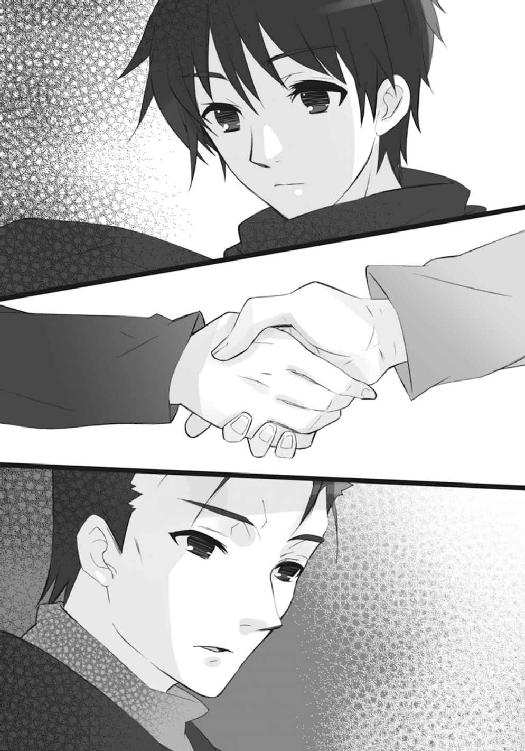
悠二は、これを握った。握って、心からの礼を、言った。
「ありがとう」
「じゃあな」
一言を置いて、田中栄太は階段を一人、降りていく。
そうして、振り返らずに、去った。
移動要塞『星黎殿』が、入り口たる宮橋を下ろしていく。
「んぬえぁああぁぁあああ──っぜ、本来の最終停泊地ぃー点を目前に、こぉーんなところで停まったりすぅぅーっるんですかぁ、ドォーミノォー!?」
「盟主様の御命令でございますです。それより、我々も早く所定の位置に付かないと」
「ん盟主だぁーろうと代行体だぁーろうと！ 私の実験の集ぅーっ大っ成!! の邪ぁー魔はさせてなぁーるかならずかならぬかなるか！」
「決行の時間までは、まだ半日ある。それに『天梯』敷設機関の展開も、仮想演習では十分を切っていたはず。なにも今から焦ることはあるまい」
「そうそう、〝屍拾い〟様の言うとほひははは!?」
「おぉーまえは一体！ どぉーっちの助ぉー手なんですか、ドォーミノォー!?」
「これで、最後のゲストが揃うことになるか。さて、どう出るか......」
重い駆動音が途切れ、宮橋が所定の地点に下ろされた。
友達の気配が完全に消えるまで、惜しむように待っていた悠二は、
「行きましょう、坂井君」
彼が行く気になるまで待っていた吉田に、逆に促された。その、一生懸命に気を張る少女の姿に、言わでもの問いを口にしてしまう。
「いいのかい？」
少し、力を溜めてから、吉田は微笑む。
「はい。正直、最初は無理もしてました。でも、坂井君が、坂井君のままだったことが分かったから、少しだけ安心できました」
「それは、買いかぶりかも知れないけど......嘘も吐かないつもりだよ」
悠二は言葉を選んで返し、階段を上り始めた。
「じゃあ」
「はい」
答えた吉田も、その背中を追う。
屋上の鉄扉から差す光には眩しさが足りず、淡い灰色で塗り潰されたように薄暗かった。
そこに一歩ごと、黒い影のように上り行く悠二の歩みが、ずしりと重さを増してゆく。
後に続く吉田は、ふと、さっきまで鳴っていた風の音が止んでいることに気付いた。
どこか、光景への予感があった。
やがて、屋上の踊り場まで上がった悠二は、屋上の鉄扉に手を掛ける。拉げた扉丸ごとの修理費用節約のためか、ドアノブと傍らの手摺が、鎖でグルグル巻きにされていた。
悠二はそれを引き千切る。というより、鎖の拘束など意に介さず、鉄扉を開ける。
軋んで弾けた鎖、開け放たれた鉄扉の向こう、白い上にも白い光景が広がっていた。
（あっ......）
吉田は思わず、息を呑んでいた。
雪が──
遠くを霞ませるほどに、しんしんと降っていた。
まるで、いつかの別れを、やり直すかのように。
そして、鎖を引き千切り鉄扉を開けた屋上には、二人の〝王〟が並んで待っていた。
「お迎えに参上いたしました、我らが盟主」
右に、鎖を巻いた三眼の美女、三柱臣の参謀〝逆理の裁者〟ベルペオル、
「今や大命の最終段階は準備万端。どうぞ、お進みあれ」
左に、長い槍を肩に担いだ偉丈夫、三柱臣の将軍〝千変〟シュドナイが。
二人の間には、細い漆黒の絨毯が敷かれて、雪の中に瞭然と一本、道を延ばしている。
さらに二人の後ろ、同じくこれを挟んで、多数の〝徒〟──吉田には分かるはずもなかったが、［仮装舞踏会］の誇る、名のある将帥や部隊長ら──が、創造神および最後の客を出迎えんと、二列に居並んでいた。静かに、だが迫る大命成就と激しい戦いに沸き立つ熱気を、内に隠し切れていない。誰も彼も、各々の形や挙措で胸破るほどの興奮を表していた。
彼らの間を一直線に導かれた漆黒の道の先には、雪舞う空から忽然と降ろされているように見える、長大な宮橋が在る。その上には、砕けた球形の天頂部らしき輪郭の内に、塔の先端が覗いていた。吉田も、話としては聞いた覚えのある［仮装舞踏会］本拠地たる移動要塞『星黎殿』が、今......彼女の街の、彼女の学校の、この頭の上に、やってきたのだった。
これら驚異の光景と、強圧の熱気と、恐怖の事実に圧倒され、
「──」
魂を消し飛ばされそうになる少女の前で、最後の縁たる少年が、言う。
「行こう。大丈夫、なにもさせない」
声は同じでも、そこには少し、異なる彼が混ざっていた。
雪の粒が微か幽かに隠す一歩ごと、形も変わって行く。マフラーは後頭から伸びる漆黒の竜尾に、纏うコートは緋色の衣と凱甲に。道を空けるように向き合うベルペオルとシュドナイの間を通り抜けた時には、既に彼は盟主〝祭礼の蛇〟の代行体となっていた。
吉田は、激しい動悸と眩暈の中、竦んで縺れる足をなんとか引きずって、変わった少年の後を必死に追いかける。盟主の招いた少女を、同じく間に通したベルペオルとシュドナイは、とりあえずは、なにも言わない。五つの目で、興深げに眺めるだけである。
（この子を使って、ねえ......まあ、できる省力化はしておくに如くはない）
（明らかに戦場に伴うべきではない類の人間だが、これも盟主殿の容赦のなさ、か）
それら視線の交差を抜け、
「──」
ようやく、か細い息を吐いた吉田に、
「──っふ、ぅ......」
「吉田さんには、一つの作業を手伝ってもらう」
無人の黒い道を進む悠二が、平然と言った。両脇に立つ将帥らに隠す素振りもない。もはや彼は［仮装舞踏会］の盟主として振る舞っているのだった。
痛いほどの動悸を掌で押さえて、吉田はおずおずと尋ねる。
「私に、できることなんですか？」
「できることなのか、というより、君にしか、できないことなんだ。でなければ、こんなところに君のような人を呼んだりできない」
悠二は笑いを欠片も交えず、大真面目に答えた。
降りかかる雪に目を細める吉田は、背後の二人が、道を閉ざすように自分たちに向き直った気配を感じて、心持ち、震える足を速める。少年との繋がりで身を保つように、声を吐く。
「でも、私はただの人間です」
「ただの人間だから、だよ」
悠二は断言して、宮橋の端に足を乗せ、登り始めた。
「正確には、調律師の修復に協力して、この街の歪みを修復した人間だから、かな」
「!!」
言われて初めて、吉田は思い出す。
自分がかつて、この散々〝徒〟に食い荒らされた故郷の歪みを修正するため、調律師たるフレイムヘイズ『儀装の駆り手』カムシンの作業に協力したことを。この世から欠落した人々が心ならず──あるいは未練の爪痕として──堆積させていた『そうだったろうか』という違和感を、この街で育った自分のイメージに沿って矯正したことを。
驚き戸惑う中、一つの感情が湧いたことに彼女は気付いた。が、今は傾斜の緩い宮橋を、少年の後を追って上りながら、当面の疑問をぶつける。
「それが、今度の創造と、関係が？」
「詳しい説明は省くけど、君という生きた記録を使って、調律と逆のことを一時的に行う」
「それは──」
「大丈夫、住んでる人たちに害はないし、全てが終わった後で、ちゃんと元通りになるよ」
危機感と抗議の声を、悠二は安全の保障で封じた。
「なにせ、今度の創造は世界丸ごと一つ......今まで〝祭礼の蛇〟でも経験したことのない、大規模なものになる。それを行うための、両界の狭間へと開ける力の出口は、数日前に中国奥地で作った『神門』のレベルでは、到底受け止め切れない」
分からない言葉を混ぜたか、と少し反省して、言いなおす。
「要するに、楽園『無何有鏡』を創造するには、この世の側に大きな穴を開けて、力を両界の狭間へと通す必要があるんだ。その分には当然、規模相応の手間と力がかかる」
「大きな、穴......？」
感覚として飲み込めていないらしい吉田に説明すべく、竜尾と衣を翻して振り返り、宮橋からの眺めを一望した。風と雪が、その髪を攫う。
「うん。この数百年で、御崎市ほど酷く荒らされ、大きく歪んだ土地はないらしい。あの〝狩人〟フリアグネの一党が『都喰らい』のため行った大量捕食が原因なんだって」
「......」
人間・坂井悠二が、その犠牲者だったことを知る吉田は、彼を見ていられなくなり、俄かな雪に煙る故郷を、共に初めての高さから見渡した。
嬉しさと切なさを合わせたような安らぎが、雪の中を朧に漂う、彼女たちの街。
と、風景の中、多くの人が唖然と見上げていることに......そして今さら、この移動要塞が封絶を張らないまま堂々と滞空していることに、吉田は気が付いた。慌てて振り返る。
「坂井君!?」
「殻を壊されて、隠蔽の力が弱まってるからね。そうでなくても、他にも大きな隠さなきゃいけない物を連れてるし......まあ、下の方は放っておこう。どうせすぐに移動して封絶を張るから。この雪も相当激しいし、碌に見えはしないよ。それより」
先の話題を忘れたかのように、悠二は明るく笑った。
「格好付けて別れたばかりの田中も、どこかで驚いて見上げてるんだろうな。報告ついでに実況するかどうか、迷ってるかも」
「そういえば......」
言われて、馬鹿正直に田中の姿を探す少女を、悠二は可愛らしく思った。思って、それには触れず、宮橋の下で彼の入城を待つ三柱臣の二人や将帥らを見下ろしつつ、話を戻す。
「ええと、どこまで話したかな。そう、街の歪みが大きい、か」
彼だった少年を喰らった一党については、飛ばした。
「御崎市は、膨大な欠落によって生じた隙間だらけで、非常に不安定になっていた。これを、吉田さんという、ここで生まれ育った人間のイメージに沿って整合・収縮させたのが、いわゆる調律だ。我々はそこに、逆転印章からなる同種の自在法を上掛けして、隙間を再度、一時的に肥大化させるつもりだ。そうすると、どうなるか......分かるかい？」
吉田は、戦きに声を硬くする。
「不安定だった場所が、裂ける？」
「だいたい、当たり。隙間が広がりすぎると、この世の存在は互いの結びつきを見失って、ないも同然の状態になるんだ。編目も見えなかった一枚の絹が、目の粗い網になる、って言えば分かりやすいかな？」
「そこに、さっき言っていた大きな力を通すんですね」
正答に、悠二は頷いて見せ、
「うん。前準備としてこの作業を終えていれば、創造は二段階から一段階に減って、楽園『無何有鏡』だけに専念できる、というわけ。そうでなくても、今度の儀式はタイミングが厳しいからね。負担を軽減するための提案は、簡単に受け入れてもらえたよ」
再び踵を返して、宮橋が宙で途切れる先へと、入っていった。
吉田も取り残される心細さから後を追いかけ、彼女には見えない、要塞を覆う隠蔽の殻『秘匿の聖室』の中へと踏み入る。特に感触らしいものもなく通り抜けた先、
「それじゃ、［仮装舞踏会］を御崎市に呼び寄せたのは......」
言う途中で、声を失った。
眼前に突如として現れたのは、永遠の星空を映す殻に包まれた、聳え立つ偉構。
宮橋を呑み込んでゆく双塔の城門を中心に、上半分を複雑に入り組んだ城壁と尖塔で、下半分を堅固な掩体道を張り巡らせた岩塊で、それぞれ形作る［仮装舞踏会］の本拠地。
巨大壮麗な移動要塞『星黎殿』の全容だった。
悠二はこの、異界の情景に向かって歩を進めながら、平淡に言う。
「うん。言っただろう、これは坂井悠二の計画だ、って」
「......」
自分を使う計画を立てた少年に、しかし吉田はついて行った。自分の知っている彼なら、そんな酷いことはしない......という駄々も誤解も、湧かなかったからである。それどころか、そんな行動を取るしかない、という奇妙な納得が、自然と胸にあった。
近づいた双塔城門を軽く見上げ、悠二は続ける。
「こっちに来てからの短い間も、別にふんぞり返って神棚に座ってたわけじゃないよ。組織の運営と大命の進行は今まで通り参謀に任せて、代わりに不眠不休で動けるこの体を生かして、自在法や戦闘実技を学んで、山ほどある蔵書に目を通して、行き交う書類の内容について講義を受けて......計画は、その苦心の成果ってところ。そうそう、成果と言えば『達意の言』を覚えられたのは、大きな成果だったな」
冗談めかした苦労譚が語られる間に、二人は、宮橋から城門の内郭へと入っていた。
そこは外見同様、石組みによる質実堅固な造りで、飾り気というものが一切ない。出撃する部隊を待機させておく部位なのだから、当然の仕様ではあるのだが、それでも吉田には、恐ろしい〝徒〟の住み処、という印象を具現化させた場所と見えた。
と、その中央、
「お帰りなさいませ、我らが盟主。そして、ようこそお越し下さいました、お客人」
松明を手にした一人の男が、色気に粘る声で出迎えた。
古写真から抜け出た紳士、という表現がピッタリ来る、暗灰色のテールコートで装った、老若判別の付かない白皙の美男子......〝冀求の金掌〟マモンである。松明を掲げるのと反対側の手に、トップハットを隠すように持つ挙措も、芝居のように洗練されていた。
もちろん、これが普通の人間であるわけがない──偉い〝徒〟なんだろう、と雰囲気から見当も付く──と分かっている吉田は数秒、応対に惑い、結局ぺこりと一礼する。
「こ、こんにちは」
「はい、こんにちは」
その初々しい様に、穏やかかつ胡散臭い笑みで返す〝紅世の王〟へと、
「道を、通してくれ。準備はできているな？」
やりとり自体にばつの悪さを感じた悠二は、早々に命を下した。
同じ笑みに、ややの神妙さを加えて答えつつ、手にした松明で宙にクルリと輪を描く。
「は、それは無論」
描かれた輪の中央から銀色の煙、あるいは滴が、粒となって零れた。粒は次々零れて流れを作り、流れは速くなって渦を巻く。渦は数秒で縦に薄い渦となり、またすぐ中空を広げて、人を通す入り口の枠となった。その中には、渦の背後にないはずの通路が延びている。要塞内の空間を組み替え、望む場所へと通路を繋ぐ装置、『銀沙回廊』だった。
悠二は振り向き、改めて誘う。
「さあ、行こう」
吉田は回廊の奥行きに、僅か不安の色を過ぎらせて、しかし頷いた。
「はい」
深々と一礼するマモンをその場に残し、二人は目的の場所へと進む。
移動要塞『星黎殿』が、短い滞空を経て、再び動き出す。
「数千年に、今暫しの時を、お加え下さい」
他の尖塔を抜いて聳える、要塞内で最も高い碑。
その天突く穂先からやや下がって三方に突き出した、優美な踏み台の上に、舞い込む雪に溶け込むような、大きな帽子とマントが見える。手にある三角の頭と遊環を備えた錫杖も、砕けた殻から先を望む視線も、微動だにさせない、その少女。
三柱臣の巫女〝頂の座〟ヘカテーが、唇から微かに、言葉を零す。
「そう、半日にも満たない──今夜、零時を」
雪降る天に在る、今は見えない物が、重く鈍く、震えた。
短い廊下を越えて、悠二と吉田が出た先は、不可思議な空間だった。
頭上に果てしなく広がる星空、立つ者を正反対に映す漆黒の床、大きな円形に立てられた柱列、そして、暗夜の海に浮かぶ氷海のように競り上がる、純白の石からなる祭壇。
静謐で清浄な、神秘の空気に満ちた、そこは『星黎殿』の中枢たる一郭だった。
なにも知らない吉田でも、
「神殿......？」
一目でそう、悟っていた。
悠二は頷き、臆せず進む。
「そのとおり、名前は『星辰楼』──まあ、どうでもいことかな」
祭壇の正面、簡素な様式の階段前に、柱に囲われた、やや広い空間がある。
この中心に悠二は立ち、おずおずと吉田が追いついてくると、
「起動せよ」
一言、足下に力を注ぎ込んだ。
「あっ!?」
驚く吉田の足下で、黒い床面が唐突に平面を崩し、激しく波打ち始める。波は程なく形を崩し、不規則に個々の高さを変えて、また唐突に静まった。
後に残されたものは、祭壇の前を占める、黒々と輝く複雑な凹凸。
どういうわけか、吉田は、
「......」
それらに既視感を覚え、自分たちを囲むものの全景を、グルリと見回した。
そして、気付く。
「......御崎市！」
細かな凹凸は、彼女もよく知る、地形の起伏や建造物。
ミニチュアの御崎市が、そこに形成されていたのである。
「坂井君、これって、まさか」
既視感を覚えることができたのは、街並みを熟知しての実感からではない。ほぼ同じ物、御崎市のミニチュアを何度なく見て、その中に立ち入り、また利用もしてきたためだった。
悠二は、吉田の問いかけを首肯する。
「うん、この床の下には、『玻璃壇』が在る」
御崎市を襲った〝狩人〟フリアグネによってシャナらの許に齎された銅鏡『玻璃壇』は、その後何度となく、襲い来る〝徒〟と対する彼女らにとっての、自在法を監視する装置、あるいは単純にモニターする地図として、重要な役割を負ってきた宝具だった。
悠二は、代行体としてシャナを迎えに（実質は捕らえに）戻ってきた際にこれを、まさに使用していた田中や吉田の眼前で取り上げている。彼の言うには、『玻璃壇』は元々創造神〝祭礼の蛇〟の持ち物で、ゆえに返してもらっただけであるらしいが......。
いずれにせよ、宝具は本来の持ち主の許で、その機能を十全に発揮しているらしい。
縮尺に寸分の狂いもなく、御崎市の光景を再現している黒い起伏は、吉田にはまるで、闇の中で街が凍り付いているようにも見えた。そうして彼女は、
「!!」
とある異物が、平然とそこに混じっていると気付いて、ぎょっとなる。
今立っている、ミニチュアにおける河川敷の位置からほど近く。
見紛うはずのない街の象徴、市の中央を流れる大河・真南川に架かる御崎大橋の傍らに、在り得ない異物として、巨大な球体が浮かんでいた。どこまでも精巧なそれは、割れ砕けた天頂部から内部に覗く尖塔群までを、忠実に再現している。
「これが......『星黎殿』？」
「その通り。本来なら映らないはずなんだけど、殻が壊されてるからね。隠蔽の力も、とある物に大半使ってるし、まあ仕様がないよ」
悠二は困った風に肩を竦めて見せた。
敵大組織の本拠地が街のど真ん中に居座っていることを、吉田は地図上に表された視覚から理解して、密かに怖気を走らせる。
「この『玻璃壇』を使って、調律の逆を？」
「うん。君が施した修復の形を捉えることになっている」
何気なく、という形で隠すこともない、当然のこととして、悠二は吉田から離れた。
「そこが、君を連れてきたかった場所。そして──」
反射的に後を追おうとした彼女に、拒絶の掌を軽く、できるだけショックを受けないような形で向けて、一人、競り上がる純白の祭壇の方へと向かい、深く遠い、男の声で言う。
「こっちが余の、在るべき場所だ」
石段を上がり、祭壇の中央に立ち、頭上の星天へと吸い込まれるように、舞い上がる。
分かっていた立場、役割、場所、それらを納得していてなお、吉田は張り裂けるような別離の痛みを、この僅かな距離の中で感じる。感じて、黒い御崎市の中で、彼を見上げる。
と、その見上げる星天が、悠二の頭上で割れた。
砕けるのではなく、プラネタリウムの天井が開くように、複雑ながら規則的に分割されてゆく。広いドーム状だったらしい、星空も消えて床同様の黒一色となった壁の外は、意外なことに機械の塊。噴き出す蒸気と駆動音が、神秘の空間を一気に現実へと引き戻す。
いつしか悠二は、その中空に浮かんだ石造りの玉座に着いている。
まさに、彼自身が言う通りの、在るべき場所に在る者の姿として。
そこに突然、
《っこぉ──ちら中央制御室!!》
「ひゃあっ!?」
吉田を思わず飛び上がらせる、機械の奏でる騒音に負けない......というより、その分だけボリュームを上げた素っ頓狂な声が、一帯に響き渡った。
《展開予備起動中の『星辰楼』、音声は通じていぃーますかぁー!?》
悠二は包み隠さない苦笑いとともに、盟主の声で答える。
「通じている。もう少し、音は小さくとも良いぞ」
《ほーら、やっぱり。だから音量が大きすぎるって言ったのひひはははは》
妙な声が割って入ってから、
《そぉーんなどぉーっでも！ いいことより！ 早速今すぐ速攻で!! 『星黎殿』の全んー機構を『真宰社』形態に切ぃーり替えますが、よぉーっろしいでぇーすねぇー!?》
ややボリュームの下がった声が続けた。
俄かに騒がしくなった神殿の宙で、悠二は大きくない、しかしよく通る声で、許可を出す。
「拒むわけがあるまい......存分に、やれ」
《了ぅ──っ解!! ぃいーっきますよぉー!? 私の作り上ぁーげた！ 究極完全変形超合金ＤェーッＸ!! 『我学の結晶エェ──ックセレント─２５２５７０ 宰祝の社壇』っ展開ぃーっ開始!! ポチッとな！》
絶叫に小声を付け足す珍妙な叫びの最後に、スイッチらしき音が重なった。
と同時に、遠く深くで鳴動が始まり、やがてその音は駆動の震えと共に二人の周囲へと伝わってくる。ズズズ、とも、ゴゴゴ、とも聞こえる巨大な溜めを数秒置いて──いきなり、
「!?」
吉田が堪らず身を竦めるほどの、エレベーター上昇に数倍する体感が、足下から全身に伝わってきた。咄嗟に見上げた、機械で埋め尽くされた天井が八方、花のように開いて、彼女らのいる『星辰楼』が区画ごと、平らな丸盆のような形で、中空へと伸び上がる。
外に飛び出たことで見やれば、要塞上部の光景も、劇的に変わっていた。
周囲に聳えている尖塔が、次々と揺れ動き、折れ曲がって、大きさ相応の緩やかな動きを以て四散崩壊してゆく。単なる崩壊ではない。崩れた中から金属製の巨大なアームが何十と飛び出しては伸張し、崩れた後には金属の壁や床が張り出しては接合し、蒸気の噴射と火花の飛散を伴う、誕生の金切り声を喚き立てていた。
濛々たる粉塵が降りしきる雪に交じり、
殷々たる轟音が吹き荒れる寒風を貫き、
いつ果てるともない混沌を一帯に振り撒いてゆく。
「────ッ!!」
その、まさに中心部に在った吉田は、高きから全ての変貌を体感した。
彼女からさらに高く、祭壇上に浮かぶ玉座に在った悠二も、変貌した要塞、彼らが目指し、今完成した野望の牙城に向けて、高揚感で張り裂けんばかりに、声を震わす。
「く、くくく......はははははははははは!!」
彼らの下には、かつて『星黎殿』を形作っていた瓦礫が河川敷を埋め尽くすほどに積み上がり、卵の殻を脱ぎ捨てた雛が、早くも翼を広げるように、己が真新しい威容を誇っていた。
「こうでなくてはならぬ!!」
現れたのは、
鈍色と銀色を織り交ぜ、天に向かって捻り上がる鋭角と見える、金属の巨塔。
秘められた神殿だった『星辰楼』は、今や高きに掲げられる舞台、あるいは捧げられる器として頂に配されていた。その縁を、尖塔に混じり立っていた碑が、生垣のように曲がりくねって取り囲み、三方から内向きに突き出した踏み台の上に、三柱臣が端然と佇立している。
重厚さを光沢と宿す壁を下って、
真南川へと沈み込んだ基部から、太くも高く聳え立つ巨大感、
金城鉄壁の例えそのままという、堅牢さを見せる建築様式、
複雑に絡み合い、全体を支え合う、機械としての完成度、
造作の規模、与える威圧感、技術の水準、全てが三千年前とは格段に違う、それは現代に蘇った創造神の祭祀場だった。古画に描かれた混乱の塔、あるいは神話に伝えられる宇宙樹とも見えたが、それらには決して付随しないとある物が、この塔には在る。
真南川周辺は無論、
「な、なんだあれは!?」「うわっ!?」「きゃああああーっ!!」
近隣の橋上や道路、
「さっきの騒音、一体なんだったんだ」「お、おい、見ろ!!」「へ、──っ？」
市街の方々からも、
「ちょっ、冗談でしょ？」「雪の中に、なにか......浮いて、る？」
それは──見えた。
雪の舞い降る空に、黒く、どこまでも黒く、のたうち遊弋する──蛇。
あまりな巨大さが現実感を喪失させ、畏怖と崇敬を湧かしめる──神。
創造神〝祭礼の蛇〟の、蛇身だった。
全体を覆っていた隠蔽の力が、その根源たる要塞の崩壊によって消え去り、彼は別れを告げる人の世に、姿を現していた。そうして、新たに向かう始点から、雪の舞いに波打つ航跡を残すほど絶大な、歓喜と昂揚からなる咆哮を発する。
「──オオオオオオオオオオオオオオオオオオオオオオオオオオオオオオオオオ──ッ!!」
見た者も、見ぬ者も、全てを捕らえて叩く音の津波を追って、地面を一つの、金色の火線からなる紋様が、波紋のように追っていった。それは、音の威力が雪の中に掻き消える頃合、御崎市の全域へと広がってから、一挙に炎となって吹き上がる。
後に残されたものは、地面に残り、奇怪な紋様を描く金色の火線と、御崎市全域を覆い尽くすほど広大な、炎を時折過ぎらせる陽炎のドーム。
出現した黒い蛇を中心に、なにもかもが静止している。内部を世界の流れと断絶させ、外部から隔離・隠蔽する因果孤立空間──自在法『封絶』発動の光景だった。
その使用者たるベルペオルが、踏み台の上から我が儘放題な盟主へと言上する。
「我ら、これより大命最終段階の備えを始めたく」
「うむ」
巨大な蛇身の下方、宙にある玉座から、その代行体が答えた。蛇身同様、歓喜と昂揚に打ち震えながら、そこに在るもう一つの意思が、それ以外の感情と、声で、付け加える。
「だが、その前に」
「は。ではまず、そちらから」
恭しく一礼したベルペオルは、巨大な封絶を張る以上に大きな力を、身中に練る。
玉座から悠二が、同心円上に対する踏み台からヘカテーとシュドナイが、そして黒く御崎市を形作る『玻璃壇』の中から吉田が、それそれ見つめる先で、目を一旦閉じた彼女は、ゆっくりと右目から、開ける。
「──『タルタロス』──」
声に応じて、その身を飾っていた鎖が、ゆるりと宙を漂い始めた。神の眷属たる彼女が持つ特別な宝具、鉤鎖『タルタロス』である。僅かな静寂の内に、いつしか彼女を中心とした大きな輪を作っていたそれは、内から圧力を受けているかのように張り詰める。
「──封絶に同調せよ──」
声と共に左目が開くや、鎖の輪は、環の一片となって弾け、全方位へと、金色の光を引く流星のように飛び去った。それが、封絶の効果範囲外周へと達した瞬間、彼女は最後の一眼、額の目を強く見開き、命じる。
「──内なるを捕らえ──」
封絶外周に浮かんだ数百という鎖の環が突然、外周の円に沿って、一方向への疾走を始めた。その後には、まるで残像のように鎖の環が生み出されてゆき、長い長い鎖が全方向で形成されてゆく。ほんの数十秒で、それらは外周をなぞる一つの輪を形成し、一気に連結した。
「──干渉を遮断せよ──」
最後の命令を受け、鎖は内に囲んだ御崎市に在る全てを防護する力となる。そうして数秒、御崎市を囲む輪となった鎖は、掻き消すように消えた。
深い吐息一つ、ベルペオルは報告する。
「終わりました、我らが盟主」
「よし」
彼女本来の盟主が命じたものではない、その遂行を報告する声に、悠二は皮肉の響きが混じっているように感じたが、もちろん表には出さない。代わりに、驚き戸惑う吉田を安心させるため、玉座から説明を、坂井悠二の声で落とす。
「吉田さん。これで、封絶の中にいる全ての人は、どんな戦いに巻き込まれても、喰われることはなくなった。これから無数の〝徒〟が押し寄せるけど、皆、誰も、大丈夫だ」
「そう、ですか......良かった」
吉田は安堵のあまり、脱力が微笑に変わるのを感じていた。
「皆、鉄みたいに固くなったんですか？」
「いや、少し違うな」
馬鹿正直に答えるべきか、少しだけ迷って、やはり隠さずに伝える。
「いかに我が参諜でも、全ての物を完全に防御するのは流石に無理だ。壊される時は、壊される。ただ、喰われるのを防ぐ......つまり〝存在の力〟への変換を妨げるんだよ」
「......それは、後で？」
「うん、修復ができる」
今度は良かったとは返せない吉田に、せめてもの保証をした。そうして、さらなる命令を、全く簡単に、付け加える。
「ベルペオル、彼女にも」
「は」
先より遥かに小さな力を集中させたベルペオルは、鎖の環を一つ、飛ばした。
それは驚く間もない吉田の胸に当たって弾け、
「あっ!?」
首に掛かる、細い鎖のネックレスになる。
それを、悠二は軽く、指で差した。同じく保証と、新たな確認をする。
「一応、より厳重に守るためのものだよ。ただ、そこに隠してる物の、封絶内で動ける以外の機能は封じさせてもらう。呼べるんだろう、彼女を？」
「!!」
反射的に、吉田は服の内に隠していた物を上から押さえていた。指摘されて初めて気付かされたが、こうして封絶内で動けているのだから、これを持っていることは──まったく間の抜けた話だったが──傍目には明々白々だったのである。ただ、
「この状況で〝紅世の王〟一人を呼んでどうなるとも思えないけど、念のために、ね。今さら中枢部で引っ掻き回されるのも面倒だし......できれば、大人しくしててほしい」
気遣う形で行動を封じようとしている悠二が、彼女の姿の内に想像していた『図星を突かれた焦り』と、実際に彼女の内心を満たしていたものは、実は全く違っていた。
（私は......）
彼女は逆に、こう、思っていた。
（私は今、ホッとしたんだろうか）
押さえた胸に、密かにかかっている物は、縦横の長さが同じ、ギリシャ十字の形をしたペンダント。一人の〝紅世の王〟から託された、その宝具の名を『ヒラルダ』という。
後ろめたい戸惑いの中、思いは巡る。
（坂井君のやり方を見届けて、私がどう使われるかを見極めて、もし受け入れられなければ、これを使うつもりで来て......そのはずが、こうして封じられてしまったことに）
冷静に自身の行動を考え直してみれば、迂闊すぎる結果と言うしかない。先から自惚れていたように、彼を理解しているというのなら、なおさら救い難い、作為の失敗とすら言えた。
（そう、相手は坂井君なのに）
坂井悠二が、彼女の持つ唯一つの抵抗手段（と思える物）を見落とすわけがない。分かっていて見逃すなど論外だったし、なにより先の封絶云々の言葉から察するに、余計な真似をさせないよう無警戒な振りでここまで誘い、最後の最後で発動を封じた可能性も高かった。
代行体たる少年は、吉田一美を利用するとなった以上は、真剣に、本気で、接している。
対する自分の不甲斐なさ、覚悟の温さに、吉田は身も縮こまる思いだった。
（私は、止めてもらえる可能性に目を瞑って、坂井君にもう一度会えた想いの高まりに身を任せた、だけだった......私は結局、まだ想っている自分にさえ、甘えてたんだ）
彼女は、自分がそうして過誤や失敗を一歩一歩、積み重ねて前に進んでゆくことが、自分の強さの本質であることを、まだ理解していない。
（ちゃんと、考えなきゃいけない......ここまで、来たんだもの）
理解せぬままに、また一歩。
（考えよう、私が、ここにいることの意味──ううん、価値を）
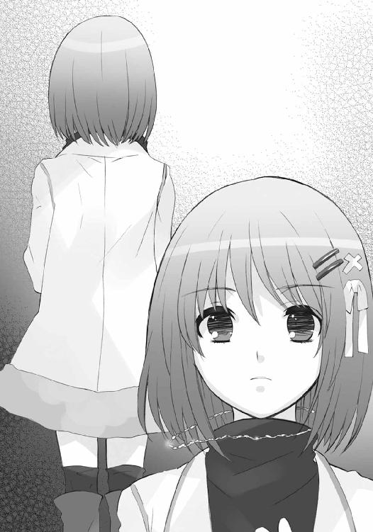
押さえていただけの『ヒラルダ』を、服の上から強く握り締める。
数ヶ月前、御崎市へと襲来した〝彩飄〟フィレスが、悠二の宿す永久機関『零時迷子』に囚われている（と吉田は思っている）『永遠の恋人』ヨーハンを救うための力......と称し、託した宝具。その機能は、強大な〝紅世の王〟たるフィレスを召還することである。
ただし、その代償は、とてつもなく大きなものだった。
即ち、宝具を使用する者の〝存在の力〟。
使えば、存在の痕跡や他者の記憶、人として在った証の全てを失い、この世から消える。
そして、この代償と結果は、吉田が使う場合は、より酷な形となる。
彼女が己を捨ててまで使う場合、それは悠二の関係する危機であろう。そうして救われた彼は、彼女の消えた世界で、シャナと共にこの世に在り続ける。まだ想っているとは言え、彼は既にシャナを選んでいるのである。そうさせるには、あまりに条件が厳しすぎた。
（そういえば、シャナちゃんも鎖で力を封じられてた、って言ってたっけ）
我ながら滑稽な対抗意識が、湧いてくる。
それが弾みとなって、もう一つ、考えることを増やす。
（シャナちゃんたちは、もうカムシンさんやベヘモットさんから聞いてるのかな？ お二人は必要なら話すんだろうな......でも、田中君から捕まったことも聞いただろうし、どっちみち戦力外だと思われてるかもしれない）
この発動条件を知っているのが、吉田とフィレスという当事者二人、それに吉田が相談した調律師たるフレイムヘイズだけ、ということを。知らなければ『ヒラルダ』は先の悠二のように、強大な〝紅世の王〟を召還する便利な宝具としか見えない。
（どのみち、封じられてはしまったんだけど）
やっぱり、その場の感情に任せず、もっと慎重に動くべきだったのだろうか、と僅か後悔しつつも、なお彼女は考え続ける。
（そう、ここは、そのための全てが揃った場所なのかもしれない）
フィレスがどういうつもりで、この使い難い宝具を、自分の最愛の人を救うための切り札として託したのか、吉田は今こそが、逃げずに見据える時だと感じていた。
そうする間にも、状況は彼女を置いて、先に進んでゆく。
ベルペオルと同じく、神殿を囲む踏み台の上から、
「盟主殿、『真宰社』の設営も完了した様子。早々に、封絶内への哨戒網整備と河川敷への防衛線敷設を行いたいと存じますが」
シュドナイが軍団の指揮官として、次なる許可を求めていた。
玉座にある悠二は、盟主の声で明確に指示する。
「よし、配置は事前演習通りだ。最悪、既に市内へと潜伏している可能性も考慮に入れて、先発隊を出せ。おっつけ、無関係のフレイムヘイズや同胞も、ここに気付くだろう......戦のみならぬ混乱を覚悟せよ、と諸将にも念を押しておけ」
「は」
言うや、シュドナイは銀色の粒に巻かれて消えた。
巨塔『真宰社』中腹の城塞部が、慌ただしい喧噪に満ち始める。
程なく軍団が押し出してゆくだろう、それら熱気を下方に望んで、
「では......今度こそ、本当に始めよう」
自身も歓喜に打ち震える悠二は、再び玉座から宙へと舞い上がった。
呼応して、上空至近を遊弋していた漆黒の蛇身が、鎌首をもたげる。
「......っ!!」
息を呑む吉田を背に、一切の気を払わず、悠二はその額へと立った。野心に黒く燃え滾る瞳を神殿の一角、踏み台に目を閉じて佇むヘカテーへと差し向ける。
「我が巫女よ、最後の宣布だ」
「はい」
命を受けた創造神の巫女は目を開き、手にある錫杖『トライゴン』の石突きで一撃、踏み台を打った。三角形の錫杖頭に嵌った、同じく三角形の遊環が、シャーン、と透き通った音を一帯に響き渡らせる。その中に混じって、
「──〝頂の座〟ヘカテーの、いと近きに在る御身より──」
音吐朗々の声が、
「──此方が大杖『トライゴン』なる、彼方への他心通あれ──」
続いて、明るすぎる水色の三角形が無数、零れ落ちていた。
大小無数の三角形は、舞ってはぶつかり、ぶつかっては砕けて、三角形の数をどこまでも増やしてゆく。声の余韻が消える頃には、目に眩い水色の三角形は、新たな吹雪として神殿どころか巨塔全体、漆黒の蛇身までをも覆い尽くしていた。
これを操っていたヘカテーは、忘我の表情を覚まして、準備の完了を告げる。
「お声を」
創造神〝祭礼の蛇〟の代行体たる坂井悠二は、ゆるりと頷いて、創造神としての声で、三角形の吹雪の中に、それを介して全世界津々浦々へと、語りかけていった。
「──仰ぎ、見よ」
声は三角形に反射して、封絶による断絶をも抜けて、渡ってゆく。
「余こそ神さぶ、奇しき業なり」
御崎市へと全てを引き寄せる、まさしき力たる、神の声を。
断章 生き様の姿
エンジンの轟音に震える小窓から下方一面、海が夕暮れ後の薄闇に侵されつつある。
既に日本近海と分かっていても、ヴィルヘルミナ・カルメルは落ち着けなかった。
（使命のために戦うのがフレイムヘイズ）
彼女らは当然、時間的な余裕を計算した上で移動しているが、世界を変えてしまう事変が今以て進行中という状況である。無意味と分かっても焦燥を感じずにはいられない。
（そう彼女に教え、諭してきた）
ここに至るまでの数時間・空港付近でもない空域で、彼女らの乗機が数回もの異常接近を起こしているとなれば、なおさら。こちらが気配と姿を消しているにしても多すぎた。
（そんな私が今、彼女個人のために戦おうとしている）
幸いパイロットの腕は確かで、急場で調達した小型旅客機を巧みに操り、数度の危機を回避している。焦燥が、辛うじて危機感へと変じずに済んでいるのは、彼の功績と言えた。
（彼女と再会した時に、もう私の役割は終わっていた、と知ったはずだった）
異常接近の頻発という事実は、空路で日本に向かう〝紅世の徒〟の激増を示している。空港にフレイムヘイズが待ち構えていると知った上でなお、彼らをそうさせる理由は一つ。
（なのに、私は勝手に肩肘を張って、今まで自分が進んできた道に固執していた）
三度目の、そしておそらくは最後となるだろう、創造神〝祭礼の蛇〟による大命宣布。
遂に、楽園『無何有鏡』を創造する、時刻と場所の詳細が、明かされたのだった。
（それは使命感ではなく、使命に殉じた友への誠という、私自身の思い......私情だった）
時刻は、日本時間で午前零時。
場所は、同じく日本の御崎市。
（私は、それを大切にしたい一心で、彼女自身の意思を、在り様を、侮辱していた）
これを聞いた〝徒〟の、おそらくほぼ全てが、日本へと向かうはずである。彼女らは、その中心部へと殴り込みをかけている。にもかかわらず、恐怖ではなく、ただ焦燥があった。
（でも、それも、もう──）
焦燥を紛らせるための、しかし真剣な再確認を終え、ヴィルヘルミナは決然と前を向く。
バスほどの広さしかない客室内に在るのは、ともに殴り込みをかける面々の、後ろ姿。
（なにより、使命の方が、この新たな局面の中で揺らいでしまっている）
誰一人として口を開かず、静かに到着と開戦の時を待っている。その、各々のやりかたで時を潰している様を、一番後ろの席から眺めることができた。
（それでも、彼らはそれぞれの戦う理由から）
一番前の席にあるのは『大地の三神』たち。
彼らは一旦決断を下してからは、余計なことは何も言わない。イーストエッジは岩のようにどっしりと座り、その隣でウェストショアがうつらうつらしている。通路を挟んだ反対側の席を占めて寝転ぶサウスバレイは、通路に足と義足の端を投げ出していた。
（今......ここに在って、ここで生きている）
そこから数列開けた席に、
（──「生み出された側としちゃ、今以上に酷くなる親父殿の狼藉を止めなきゃな」──）
気負うでもなく言ったサーレ・ハビヒツブルグが、帽子を目深に被って椅子にかけ、
（──「私たちは、シャナさんの提案が皆のためになる、と判断しました」──）
逆に、大いに気負って言ったキアラ・トスカナは、その肩にもたれかかってている。
（それまでの自分を堅持しようとする者も）
さらに後ろ、席に立てかけた布巻きの鉄棒しか見えないが、傍らには、
（──「ああ、最良解へのアプローチがあるというのなら、試みるべきでしょう」──）
一言で協力を約したカムシンが、常の如く端然と座っているのだろう。
（そうでない者も、命を賭けて進んでいる）
すぐ前の席で、
（──「ここまで関わってんのに、今さら戦わないなんて言えないわよ」──）
いつもの調子で同行を決めたマージョリー・ドーが、ぼんやりと窓の外を眺め、
（──「シャナちゃんがやれるって踏んだんなら、やれるでしょう......たぶん」──）
彼女に続いた佐藤啓作は、その隣席で背筋を伸ばし、しかし落ち着きなく座っている。
（今......ここになく、既に去った者たちも）
ヴィルヘルミナの胸の内に、戦いの中で果てた顔が、次々と過ぎっていった。
たった数日の内というものから、数年、数百年も昔というものまで、次々と。
（使命、それ自体のため、それ以外のため......誰もが、ただ生き様を示し、駆け抜けただけ）
瞬間、面影が一つ、
（──「とっくに、私は、全力で生きてる」──）
新たに、過ぎった。
（そう、でありますな......マティルダ・サントメール）
全く自然な微笑みが、その顔に浮かぶ。
隣、彼女と手を繋ぎ、無防備に体を預け眠っている少女を、見た。
（私は、私たちの育てたこの子が、自分で定めた道を進む、そのためにこそ、戦おう）
誓いは、心だけに響く。
３ 闘争の渦
「行こう」
世界中から一点を目指して、
「ミサキ市へ」
無数の〝紅世の徒〟が集まってくる。
「日本」「そうだ、そこに行けば」
人間と〝徒〟、両種族の歴史においても、
「零時に」「俺たちのための」「楽園が!!」
全く前例のない規模で。
「速く、速く！」「楽園だ！」「あははは!!」「遅れるな！」
空を飛び、海を渡り、自ら走って、
「行こう!!」「ああ、楽園へ!!」「楽園『無何有鏡』へ!!」「走れ!!」
彼らは一路、日本の御崎市へと、集まってくる。
そして、
「逃がすな」
もう一方に在る者、
「奴らを逃がすな」「人喰いどもめ」
フレイムヘイズが、〝徒〟を追う。
「許さない、絶対に」「仇だ」「殺してやる」
底抜けに明るい〝徒〟らとは反対に、
「このまま楽園に!?」「させるか」「殺してやる！」
フレイムヘイズらの声は、憎悪に満ちている。
「行かせない」「次の餌場を作るだと」「殺してやる!!」
ただ殺すため、使命と諮ることもなく、
「なにが楽園だ」「行くぞ！」「ああ、日本へ！」「ミサキ市へ!!」
彼らも一路、日本の御崎市へと、集まってくる。
決戦が、始まろうとしていた。
世界を、一点へと巻き込む動きがある。
フレイムヘイズと〝紅世の徒〟を巻き込んで、騒動を引き寄せ、波乱の因果を招き、激突へと収束させる、それ。片側が意図的に狙いでもしない限り、遭遇の頻度も少ないはずの両者が、ごく短期間で断続的に衝突した末に、それは現れるという。
世の人の称して──『闘争の渦』。
今、誰からもそれだと見なされている場所、封絶の内に静止する日本の御崎市には、誰の目にもそうだと示そうとするかのような、者と物が在る。
創造神〝祭礼の蛇〟の黒い蛇身と、その額で瞑目して立つ代行体・坂井悠二、そして隷下にある大組織［仮装舞踏会］の組み上げた巨塔『真宰社』である。
黒い蛇身も代行体も、宣布を終えて以降、巨塔の上空で身じろぎ一つせず固まっている。まるで双方、動くべき時のため、力を微塵も浪費すまいと努めているかのように見えた。
そんな彼らの下、威容を聳えさせる『真宰社』の頂で、人間・吉田一美は、感じる。
（なにもしていなくても、分かる）
頭上の二人も、それ以外も、焼け付くような意欲を纏っていることを。そう感じ得るだけの平静さが、彼女にはあった。それ以外の方に目を落として、また感じる。
（なんて賑やかで、忙しそうで......楽しげなんだろう）
これは無論、彼女が剛胆さを身に付けたからでも、諦めの境地に至ったからでもない。そこに立たされて数時間を経てなお、未だ疲労も空腹も感じておらず、またその間になすべきことが、ただ見ることしかなかったため、という単なる慣れの結果だった。ちなみに、空腹と疲労を感じないのは、首に掛けられた宝具『タルタロス』の欠片たる鎖の効果である。
（ずっと待ってて、今こそと頑張って）
見慣れた街の見慣れた場所に、人喰いの異界人である〝徒〟らが異形を繰り出し、数百・千と陣取っていく。目印なのかそういう決まりなのか（事実としては後者である）、彼らが各々頭上、武器の先端、掲げた手の上に点す色とりどりの炎は、まるで松明の群れのよう。
街の中心たる御崎大橋、堤防、河川敷に、
低い家屋やマンションの多い、西側の住宅地、
自分や池の家がある、市西側の住宅地に、
さっきまで自分もいた、市立御崎高校に、
貫太郎や千草がいるはずの坂井家の方に、
高いビル群や繁華街からなる、東側の市街地、
田中や緒方、佐藤家のある、旧住宅地に、
真新しい御崎市駅、バスのロータリーに、
歩行者天国にもなった、中央の大通りに、
さらには近くの公園、遠くの御崎神社、旧依田デパート近辺から、御崎アトリウム・アーチのある駅の反対側のオフィス街まで、どんどんと〝徒〟による炎が広がっていく。
日常が丸ごと浸食される、光景だった。
（みんな、すぐそこに来ているものへの喜びに弾んでる）
吉田は、住民に一定の安全を保障されたためか、場に満ちる無邪気な熱気に当てられたためか、恐怖を確かに覚えつつも、その反対側に同等の大きさの、感嘆をも抱かされていた。
「まるで、お祭り......」
知らず、零れていた呟きに、答えが。
《まさに、そういうことだ》
「!?」
驚いた吉田は、思わず辺りを見回したが、神殿を囲む踏み台の上には、三度目の宣布を終えて彫像のように動かなくなったヘカテーがあるのみ。頭上の悠二にも蛇身にも、特段の動きは見られない。先の『真宰社』への変形を知らせてきた素っ頓狂な声とは、明らかに違う。
（声......そうだ）
聞く者に、歳月の積み重ねによる安心を齎す、渋く嗄れた声だった。
記憶の中、吉田はとある人物に思い当たる。
（もしかして）
一年近く前、まだ〝紅世〟についてなにも知らなかった頃──思っただけで気が遠くなるような、それは遠い過去だった──に出会った、老人の姿をした〝徒〟に。ずっと後になってから聞かされたその名を、おずおずと口にする。
「ラミーさん、ですか？」
《名を聞かされていたか。その通りだ》
少しだけ意外そうな声が返ってきた。
思えば一度だけ、美術館を巡りお茶を飲んだだけの間柄だったが、それでも吉田には懐かしく親しみ深かった。ふと、その思いが、老人本人に対するものというより、無知に支えられた無邪気な日々への愛惜であることに気付き、消え入らんばかりに身を縮める。ようやく紡ぎ出せた言葉は、自分でも嫌になるほど、平凡だった。
「ご無沙汰、してます」
《こちらこそ。お互い、元気かどうかを尋ね合う、時と場合でないのは残念だが》
ラミーの方はそれに気付いたのかどうか、軽い冗談を交えて再会を喜ぶ。
《ともあれ、久しぶりに君と話す機会ではあったから、作業の一つを買って出たのだ。君も、先の〝探耽求究〟とやりとりするのは疲れるだろう？》
「は、はい」
タンタンなんとかとは、恐らく『真宰社』を作る直前に響き渡った素っ頓狂な声の〝徒〟のことだろう、と吉田は当たりを付けた。今さらながら、その名に聞き覚えがあることも思い出す。一連の［仮装舞踏会］が巡らせている企てにおいて、主に技術的な面で深く関わっているとの説明を、シャナやヴィルヘルミナから受けていた。同時に、
（たしか、駅が壊れた時の──）
自分がそうして、すぐ〝徒〟についての情報を思い出せるほど深く関わっていること、自らも遭遇した機会を持っていることに、先の愛惜と裏返しの苦痛を覚える。その苦痛を覚えた、という事実に対して新たな自省をする中で、やっと気付く。
「──あの、買って出たって、なにをですか？」
《逆転印章の起動だよ》
挨拶と全く同じ口ぶりで、ラミーは遠くから『玻璃壇』に新たな映像を投影した。
それは、吉田も見慣れた自在式の表示だったが、
「！」
今という時、初めてという悪夢の様相を、露わにする。
即ち、〝徒〟であることを示す灯火が無数、御崎市中へと散ってゆく、たった今、自分の目で見ていた光景の完全な俯瞰図なのだった。彼らが手に手に炎を点しているため、全軍の配置が一目瞭然となっている。よく知る道に、家並みに、店に、ビルに、灯火が取り付き、陣地としてゆく。数を集中させた場所から少数が散って、中には封絶から出る者もあった。
（止めて）
と言って相手が止めてくれたら、どれほど世界は簡単だろう。
為す術のない自分の無力さを改めて痛感した彼女は、
（あっ）
とある輝きに目を留める。
御崎市の各所に光っている、明らかに〝徒〟たちのそれとは違う自在法の、輝き。
表示されたものの意味を、吉田は把握していた。
（カムシンさんが街に刻んだ、マーキングだ）
いつかの実感を、調律の協力者として、確かに。
と、不意に輝きが溢れて、黒い起伏からなる御崎市を埋めてゆく。
「！」
吉田はそれが自分の視覚ではない、別の感覚による錯語だと理解した。気付けば、繭とも思える深緑色の光に包まれ、自身の意識が水槽の魚のように漂っている。
（そうか、これは『カデシュの心室』を再現したものなんだ）
フレイムヘイズ『儀装の駆り手』カムシンの使っていた、歪んだ世界を調律する司令塔となる自在法。再びその調和した光景、自分の故郷の形の中に漂いつつ、
《では、起動する》
（起動......逆転、印章──？）
不吉な予感が、心を過ぎる。
そして、過ぎった予感、そのままに、
故郷の形が、揺らぎ、崩れ、解けた。
家族が友達が部屋が家が道が学校が教室が街が公園が橋が河川敷が駅が──御崎市が、
調和と真逆の混沌へと、変じてゆく。
繋がらず、縒り合わさらず、離れる。
予感の実現に、心が絶叫する。
（あ、ああっ──!!）
《落ち着きなさい》
咄嗟にラミーが声をかけてくれなければ、
《現実には、なにも壊れてなどいない。感覚に引きずり込まれるな》
心の絶叫は体へと達していたかもしれなかった。
「......あ、あ」
ほとんど嗚咽のような吐息を漏らして初めて、吉田は自分の体がまだ絶叫していなかったことを認識した。覚めれば、なにも変わっていない『玻璃壇』の表示が足下にある。
《まさか、あれほど急激に作用するとは思わなくてね......済まないことをした》
詫びるラミーに、吉田は弱く首を振って見せた。
「いえ......逆向きになった力が強かったのは、私の思いが強かったから、ですし」
せめての自負を零す口元に、搾り出した力による無理矢理な笑みが浮かぶ。その失せない内にと、感覚を意識的に遮断して肉眼で、塔の頂から御崎市を遠く大きく、眺め遣った。
「......」
一目では、なんの変わりもないように見える。
しかし、注視する内に、違和感が湧いてくる。
調律で霧散したはずの、そうだったろうかという違和感が。
嬉しさと切なさを合わせたような安らぎも、掻き消えていた。
たった今まで故郷であったものの変質が、まずは感覚から得られ、
「......あっ？」
次に、現実の光景として、目に入ってきた。
中空をたゆたう虚無とも暗がりとも付かない陽炎の波、という形で。
また、それは偶然、目に入ったのでもない。
どこを追えば、その波が渡っているかを、察することができている。
彼女の眺望は、今や一変してしまっていた。
街全体に無数の皹が走り、大きな隙間を開いた、不安定なものへと。
これぞまさに、悠二の言った、目の粗い網。
（私が街全体を感じられるのは、編目を開いた当人だから？ 一時的なもので、儀式が終われば元に戻る、って坂井君は言ってたから......逆転印章で無理矢理開いただけなのかな）
《体に異常はないかね》
ラミーに言われて、吉田はようやく浸っていた思索から目を覚ました。異常、というわけではないだろう感覚のことは言わず、尋ね返す。
「は、はい。これで私の役割は、終わりでしょうか」
《儀式の下準備は、完了だろうな。私も君も、後できることは、待つ、それだけだ》
「そう、ですか」
待つ、と改めて言われて、吉田は零時までの、なにもできないだろう数時間を思った。せめて会話を続けようと、ラミーに、先から気になっていたことを質問する。
「あの、ラミーさん」
《なにかな、お嬢さん》
向こうも同様の気持ちからか、ともにお茶を飲んだ時のように気安く応じた。
その気安さに乗じてよいレベルの質問か、少しだけ躊躇してから、吉田は口を開く。
「ラミーさんは、どうして、その......［仮装舞踏会］に協力を？ やっぱり、楽園に行きたいから、ですか？」
《ふむ》
問われたラミーは一旦、言葉を切って、答えてよいレベルの質問かを心中で吟味した。とりあえずの探りを入れようと、尋ね返す。
《私のことは、どの程度聞いたのかな？》
「お名前の他は......すごい自在師さんで、大切な望みを果たすためにトーチから少しずつ〝存在の力〟を集めている、くらいしか」
《なるほど。しかし、それだけ情報が揃っていれば、もう答えは半分、出ているも同然ではないかな？》
「えっ？」
唐突な課題を示され、吉田は未だ混乱収まらない頭を必死で巡らせ始めた。
その様に、どうやってか見ているらしいラミーが苦笑して、話を進める。
《楽園創造が成れば、恐らくほぼ全ての〝徒〟は、この世から出て行ってしまうだろう？ これまででさえ、探すのにそれなりの苦労を要した、摘んでも誰の害にもならない弱ったトーチは、さらに激減することになる》
「あっ」
《本来なら、あと数百年、千年かけて集めようとも思っていたが、加速した現実がそれを許さなくなってしまったのだよ》
「でも、それじゃ、今まで集めたものは」
軽率な弱気には、しかし、断固たる否定の声が飛んだ。
《無駄にはしない。今までそうしてきた労苦も、私の望みの一部なのだから》
「はい......」
己の不用意さを反省する少女に、ラミーは言い聞かせるでもなく、淡々と声を届ける。
《だから、楽園に走り安易な実現をするのではなく、［仮装舞踏会］に協力するという労苦を以て、果たすのだよ。既に聞いているだろうが、全ての〝紅世の徒〟は、この世から出て行くに際し〝存在の力〟を置き捨ててゆく。私の受け取る報酬は、その莫大な力の一部だ》
聞き終えた、と確かめる間を置いた吉田は、
「......じゃあ、これから」
慎重に言葉を選んで、恐れていることを、問いかけた。
「シャナちゃんたちが来たら、ラミーさんは？」
《私は......》
今度は向こうが間を置いて、
《......ここで自分に課された任務を果たすのでせいぜいだ。少々自在法を使えるといっても、元来が小さな〝徒〟に過ぎないから、戦いには向いていないのだよ。誰であれ、脅されれば従うしかない。ここにいることも、ここにいながら虎の巻を渡したことも、そうだ》
「？」
言葉に混じった不分明な部分を尋ねようとした吉田は、
「──ッ!?」
御崎市全域に広がっていた、感覚の側の目を見張った。
事態には、退屈させる余地など一切なかった。
これから、次々と矢継ぎ早に、急転し続けてゆく。
今、彼女に衝撃を与えたのは、その最初の一つ。
軍勢ではない、多数の〝徒〟の来着だった。
機上、シャナ一派は最後の作戦会議を終えつつあった。
彼女らが囲んで立つ机状の平面モニターには、チューリヒから送られてくる最新の情報が更新され続けている。そこに表示される矢印も数値も項目も、明らかに大きな二つの流れを示していた。
一つは言うまでもなく、創造神の宣布に導かれた〝紅世の徒〟による日本列島大侵攻の様であり、もう一つも、言うまでもない。
「これで、最後ですね。フランソワさんの追伸は──『宜しく頼みます』──です」
もうすぐ別行動を取る予定の佐藤が、手元の携帯メールから協力者の言葉を伝えた。
キアラは、齎された情報から、計画のタイムスケジュールを素早く計算する。
「でも、もうウーハンの方には、間に合いませんね」
「ま、別に一緒でなきゃいけないわけでもなし、好きにやればいいんじゃないの？」
「あははっ！ せっかく息を潜めることでできた小康状態も台無しってわけね」
暢気に騒ぐウートレンニャヤとヴェチェールニャヤに、サーレは呆れ顔を作った。
「笑ってる場合か。多少は楽になるだろうが、こっちのタイミングに上手く合うかどうか」
「僕らは援護される側、今以上を望むのは贅沢ってものさ。せいぜい最善を尽くそう」
ギゾーの飄々とした言葉を、カムシンとベヘモットが受ける。
「ああ、その通り。この情勢下、仕掛けるという時点で十分に無謀なのですから」
「ふむ、当面の手当ては儂らじゃが、切札は間違いなくお主らじゃ、頼むぞ」
マージョリーが、言われて仕様がなく、を装って笑い、
「はーいはいはい。何度念を押したら気が済むのよ。私って、そんなに信用ないわけ？」
「そーりゃ普段が普段だからな。たまにゃ悪評を払拭するために頑張んのも悪かねブッ！」
マルコシアスを叩いて黙らせた。
このいつものやりとりと大きな音で僅か、場に静寂が訪れる。
機体の震えと鈍いエンジン音、機械の作動音に、また新たな声を加えたのは、
「主導者の一人として、我より最後に、言っておきたいことがある」
意外にも、アラストール。
「皆も知っての通り、我は天罰神......世の理を守る存在という、自負を持っている」
全員が、シャナの胸に下がるペンダント〝コキュートス〟を注視した。
「だが、此度の大乱の中、この世におけるそれは、『変容の可能性』なる未曾有の大波に晒されたことで、悪計を阻まば片付く、単純なものではなくなった。然して、この天罰神は一体、なにを以て、なにを為すべきか──我は自らに問い、そして、答えを得た」
腕組みをするイーストエッジを中心に、隠れるようにおどおどするウェストショア、興味深げに笑って見返すサウスバレイら『大地の三神』への誓いとしても、彼は断言する。
「我は、我が身の真像と、契約者の志慮の元──自らの見と識に拠りて審め判じた世の理を以て、彼奴らの黒業を罰し罪根を断ずる。即ち、本作戦をこそ、我は最善と信ずる」
神という高きに在る者として保証するのではなく、一個の戦士として信ずる、という自身の立場を表明することで、彼はこの戦いの意義を一同に再確認させたのだった。そうして、決して大きくも強くもない、重く低い響きを持った遠雷のような声で、締めの言葉を結ぶ。
「この同行と共闘に、心より感謝する」
「他人行儀」
「いかにも。何百年、一緒にやってきたと思っているのでありますか。それに、この場に在る一同にとっても、礼など今さらのこと。既に、誰の心も決まっているのであります」
ティアマトーとヴィルヘルミナが、その真意を汲みつつも、殊更に軽く返した。
シャナは逆に、生真面目な彼に、生真面目に言う。
「そう。心に決まっている。誰もやらないのだから、私たちがやるだけ、と」
似たもの親子の強気発言に、マージョリーは思わず吹き出した。佐藤も困った風に笑い、カムシンは麦わら帽子を伏せて表情を隠す。サーレとキアラも可笑しそうに互いを見交わし、『大地の三神』らも愉快げな視線を送った。
どこまでも生真面目に、あくまでも強気に、シャナは宣言する。
「ここまで来たら、もう遅れてきた誰にも、文句は言わせない。先に辿り着く私たちが、私たちのやりたいように、やる。意思を持って、力を尽くして、策を巡らせ、結果を掴む」
誰一人として、言葉による返事をしなかった。
誰の心も、そう、決まり切っていたのだから。
軍勢が展開して最初に、封絶の外へと出て行った［仮装舞踏会］の兵卒らは、襲撃者への警戒だけを目的としていたのではない。同等、あるいはそれ以上の比率で、最後の宣布に惹かれ集ってくるだろう同胞の整理と誘導を行うことが、彼らの任務なのだった。
そんな彼らの導いた第一陣が、封絶に包まれた御崎市に足を踏み入れている。
すぐにでも楽園に旅立とうと構えていた者は、その階すらないことに露骨な落胆を見せ、
好奇心旺盛な者は、これからどのような儀式を経るのか、誘導する兵卒にしつこく尋ね、
状況それ自体に舞い上がっている者は、誘導も無視して好き放題に街の各所を駆け回り、
臆病な者は、少しでも誘導から外れれば楽園から排除される、という思い込みで緊張し、
闘争心に溢れた者は、中途自分で集めたフレイムヘイズらの動きを兵卒に詳しく説明し、
計算高い者は、今からでも組織の構成員になれるのか、上級幹部に確認するよう要請し、
信心深い者は、市の中天に遊弋する黒い蛇身を見た途端、滂沱の涙を滝と流して平伏し、
封絶の外から飛来した慌て者は、創造神に近付こうとしたところを護衛に押し止められ、
陽気な者は、歌か叫びかも分からない大声を張り上げて、自らの喜びを封絶内に響かせ、
さらにさらに、続々の表現どおりに、切れ目ない列を成していた。
誘導に従う者も従わない者も、道に溢れて建物の上に登り、地に溢れて宙に飛ぶ。それら集った〝紅世の徒〟は、創造神を広大無辺の輪として緩やかに包み込まんとしていた。
この光景に息を呑んだのは、唯一の人間・吉田一美だけではない。巨塔『真宰社』を中心に、各所で防御陣地を構えていた［仮装舞踏会］の将帥らも同様だった。
塔の外、
西部住宅地の主要陣地となった御崎高校、その屋上に在る〝煬煽〟ハボリムが、双頭のガスマスクを、それぞれ感嘆と苦慮の動作として小さく振る。
「想定通りとはいえ、実見すると空恐ろしくすらある......陣を呑まれぬよう注意せねば」
一方、東部市街地の主要陣地となった御崎市駅舎の屋上では、〝驀地 〟リベザルと〝蠱溺の杯〟ピルソインが、あくまで前線指揮官として、呆れ顔になっていた。
〟リベザルと〝蠱溺の杯〟ピルソインが、あくまで前線指揮官として、呆れ顔になっていた。
「やれやれ、なんて人雪崩だ。こりゃ、敵襲を受けたらパニックを引き起こしかねんぞ」
「まさか僕らの方が数の暴力に晒されるなんてね。これでも姫様は......来るんだろうなあ」
さらに真名川の北、井之上原田鉄橋に陣取っている〝獰暴の鞍〟オロバスと〝朧光の衣〟レライエが、山を越え川を走り押し寄せる同胞らを対照的な表情で見つめる。
「ははっ！ 大命へと全てが集い来る、これほど素晴らしい光景があるか、レライエ!?」
「まだ外では散発的な襲撃が続いてる、か......この期に及んで、道具どももしつこいこと」
これらに真南川の南、鉄道橋に在る〝翻移の面紗〟オセと〝化転の藩障〟バルマの陣地を加えて、［仮装舞踏会］全軍は『真宰社』を四方から守る態勢を取っていた。
塔の内、
中央制御室では、監視設備に映し出された、大組織たる彼らを以てしても捌き切れるかどうか、という同胞の濁流を、〝逆理の裁者〟ベルペオルが三眼を細め見上げている。
「嬉しい悲鳴、というやつを上げたくなる、まったく豪勢な眺めじゃあないか......三千年、待ったよ、この日を......さあ、上に『そろそろ始める頃合い』との報を入れておくれな」
「は、直ちに。生者にとっても死者にとっても、佳き日となるでしょう」
彼女の傍らで映像を見上げていた〝冀求の金掌〟マモンが、長い犬歯を覗かせつつも穏やかに微笑み、恭しく答える。
その背後、同じ物を見ていながら、指先だけを別の生き物のように激しく動かして機材のキーを叩く〝探耽求究〟ダンタリオン教授が、歓喜を体で表すべく背筋を海老反らせた。
「なぁーんというェエーキサイティングなシィーッチュエイション!! こぉーれで後は『真宰社』の防衛機構を思─っう存っ分っ！ 使うことがでぇーっきれば、こぉーの世界での活動もグゥーランドフィッナ──レ!! を迎えることがでぇーっきるというものです!!」
「これは......できることなら使わない方がいいと思うんでございますけほひはひひはひ！」
その隣で計器類の調整を行っている、助手の〝燐子〟『我学の結晶エクセレント28−カンターテ・ドミノ』が、例によって頬をマジックハンド化した教授の手で抓られる。
塔の頂、
唯一の例外として、微動だにしない〝頂の座〟ヘカテーと向き合う神殿の踏み台に、銀色の粒を撒いて〝千変〟シュドナイが現れた。彼はサングラスを上げ、まさに圧巻という眼下を一望し、自身にとっての感服の表現として、大いに笑う。
「三千年前とは比べものにならんな。我々が持っているものも、渡り来た同胞らの数も......これら全ては、時に実った果実というわけだ」
常からの癖、相手にされない呟きを、同じ場に在って聞いていた吉田が、
（わ、私に言ったのかな......なにか、答えた方がいいのかな......？）
と戸惑う様を、可笑しくも済まなく思った彼は、しかし苦笑しただけで無視した。
そこに、中央制御室のマモンから声がかかる。
《大御巫。時、至りましてございます。どうぞ、御座にお進みを》
同じく聞いたシュドナイが、
「......」
サングラスを戻す表情の内に、明らかに喜びではない異物を過ぎらせたのを、吉田は見た気がした。ハッキリと確認する前に彼は、サングラスとともに平静の面を被っている。
代わりに素直な喜びを面に表し答えたのは、
「分かりました」
今までピクリとも動かなかったヘカテーである。
言う間に、踏み台から白いマントをはためかせて、浮かび上がる。
行く先は神殿の中空、今は蛇身とともに在る代行体が空けた、石造りの玉座。
そこに座らず前に立った彼女は、小さな、しかし神殿に響く声を放り落とす。
「──これより大命第三段階、楽園『無何有鏡』創造のため『大命詩篇』の全面稼働、および儀式の祈りを始めます。同時に、バックアップ機能を『吟詠炉』に移行──」
声は巨塔の奧深く、『星黎殿』から移設された機関大底部へと届いていた。
そこに設置された、全『大命詩篇』を滾らせる坩堝『吟詠炉』の前、式の監視役として配されたラミーが返信を送ってくる。
《バックアップ機能、移行を確認した》
ヘカテーは頷き、手にある大杖『トライゴン』で玉座を、軽く叩いた。
途端、玉座は浮力を失って落下する。
「！」
吉田は思わず身構えたが、玉座は落着の瞬間、まるで羽毛のように留まると、波紋も見せず音も立てず、床面へと沈んでいった。そして、沈む最後の一点から、黒が広がる。黒い水晶として、反転させた姿を映していた神殿の床を、何物をも塗り潰す黒が浸食してゆく。
「あっ!?」
その床面を起伏させた箱庭の中に在った吉田は、逃げる間もなくこの浸食を受けた。
ガッ、
と周囲の空気が軋みの音を立て、物質なのかどうかすら疑いたくなるほどの、全くの黒一色の中に、彼女は立たされる。身動きをしようとして、
（なに──こ、れ──？）
叫ぼうとしても唇が、身を竦ませようとしても肩が、しゃがもうとしても膝が、重くて動かないことに気付いた。深い水底で溺れているような恐怖が湧いてくる。
気配から察してか、
「おまえに害はない。すぐ選別される」
シュドナイが声をかけてきた。同じ状況下に置かれているはずの彼は、その挙措に一切の影響を感じさせない。ただ、上空にある少女の姿をした〝王〟を見上げている。
やがて、というほども経たない数秒後、神殿に在る三人の足下、床面に黒を破るような銀の輝きが浮かび上がった。色こそ違えど、それは影。黒い世界に浮かび上がった、影だった。
と、唐突に空間の重さが消えて、吉田は思わず荒い息を吐く。
揺れる視界に、彼女と同じ銀の影が二つ、輝いて見えた。踏み台に立つシュドナイのものと、上空に浮かぶヘカテーのものである。この内、ヘカテーの影は、まるで床の上に立っているようにクッキリと大きく映る、不自然な様態をなしていた。
それを見るでもなく見ていた吉田は、さらなる不自然に気付く。
「？」
ヘカテーの影の輪郭だけが、密度の違う液体の境界のように黒と銀、双方が澱み混ざり合っている。なにかの拍子で黒に呑まれて消え果ててしまいそうな、頼りない影だった。
同じものを見たシュドナイは、あくまで軽く、言葉を放り投げる。
「じゃあ、な。俺の可愛い〝頂の座〟ヘカテー」
「はい。また、会いましょう、〝千変〟シュドナイ」
笑いの一欠片もなくヘカテーは答えて、さらなる空へ舞い上がる。
シャーン、という透き通った錫杖の音色を、後に残して。
舞い上がる内に、一転、面に喜びが満ち溢れる。
創造神の巫女たるの、大いなる喜びが。
応えて、塔の上空に遊弋していた創造神〝祭礼の蛇〟が動き出す。
歓声を上げる無数の同胞たちを、下方全域の光景として。
黒く巨大な蛇身が、封絶の空で大きな輪を描く。
尾の先の寸前まで頭を近づける、輪を。
莫大な質量感を伴う創造神の挙動は、全ての視線を釘付けにする。
緩やかな満潮を迎えるように、誰の中にも、予感が湧く。
まさに今、楽園の創造が始まる、という予感が。
巫女ヘカテーが、輪の中心へと、入る。
瞬間、銀光が爆ぜた。
黒い蛇身の中心で、彼女は銀色の自在式に包まれていた。
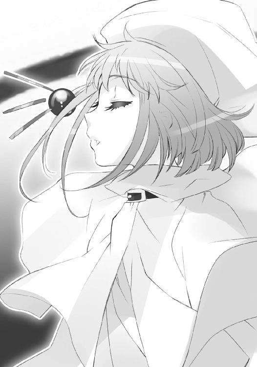
他に類を見ない、紋様の判別に目を凝らさねばならないほど緻密な式は、まず蛇身と平行した輪として彼女の周りに浮かび、すぐ上下に積み重なって、小さな球体を構築する。
完成と見るや、その上に薄く一重、新たな自在式の輪が現れ、またこれが積み重なって球体を構築した。終わるともう一重、続いてその上にもう一重、さらにその上にもう一重......自在式の展開する毎に、球体は大きくなって行く。
それはまるで、すくすくと育ってゆく、世界の卵。
見上げる〝徒〟らは、誰から説明されるでもなく、感じ取る。
あの小さな世界の卵が、巨大な親蛇として抱く創造神〝祭礼の蛇〟の輪に触れるほど大きく育った時、彼らの楽園『無何有鏡』が孵るのだ、と。
圧倒される頭上の光景に同じ感想を抱かされ、言い知れない焦りを抱いた吉田は、思わず目を逸らした。と、そこにまだ残っているものを見つける。
「影、が......？」
もう一度、上を見る。
頭上で膨らみ、また自ら輝く自在式の中に隠されて、ヘカテーの姿は一切見えない。それでもなお彼女の、頼りない輪郭を黒と澱み混ぜる銀の影が、同じ場所に残っていた。
「不思議か？」
「えっ」
踏み台の上に在るシュドナイが、意外な声を放る。
「この真っ黒な領域は、黒き御簾といってな。創造神の神威召還における最後の手順だ。そこに在る銀色のものは影ではなく、領域内に在る者の存在の投射、揺らいでいるのは──」
見上げる表情は、彫りの陰影とサングラスの内に隠れて見えない。
「召還に必要な、生贄として選ばれたからだ」
「生、贄？」
普通に生きていれば決して聞くことはないだろう、古めかしくも恐ろしい語感に、吉田は当惑の声を零した。三柱臣が［仮装舞踏会］の最高幹部であることくらいは、彼女も最低限の知識として聞かされている。いかに楽園創造のためとはいえ、そんな人物（？）を盟主の生贄として捧げるというのは、彼女の理解の範疇を超えていた。
同じ三柱臣であるシュドナイは、少なくとも表面上は平静に続ける。
「それが、創造神〝祭礼の蛇〟の巫女としての役割だからな。もっとも、ここで生贄として消滅しても、彼女はいずれ生まれ変わる」
まるで離れた隙間を、残された者同士の会話で埋めるように、彼は饒舌だった。
「神威召還された創造神は、叶えて後、願いの大きさ相応の長い眠りにつく。そして、召還の度に生贄として捧げられ消滅する彼女は、神の眠る間に、同胞の新たな願いを構成要素として生まれ出で、神の次なる目覚めを待つ。そういうシステムなんだよ」
「......」
吉田は、まさか「そうですか」と言うわけにも行かず、ただ聞いている。
「つまり彼女は同胞らにとって、自分たちの願いと祈りが、神を呼ぶほどに成熟した時に降臨する、新たな実現の先触れ......ゆえに絶大な敬意を払われる神使というわけだ」
大仰に、しかしどこか空々しく褒めそやしたシュドナイは、手遊びに胸ポケットから煙草の箱を取り出しかけて──結局、止めた。溜息を隠した深い慨嘆が、漏れる。
「今度は、なにせ世界一つだ。または、いつになるか......」
彼ら三柱臣の複雑な事情心情に、図らずも触れることになった吉田は、その中から自分に関係のある事柄を拾い出していた。
（創造が終わって、神様が眠りについたら......坂井君は一体、どうなるんだろう？）
抜け目のない坂井悠二が、この手の穴を見逃すはずもない。
（こういうことも考えた上で、坂井君は今後の計画を立ててるに違いないんだ......私って、なんて間が抜けてるんだろう......坂井君が楽園創造の後、どうするのか、どうなるのか、なに一つ聞いてなかったなんて）
諸々、答えを聞かされたことで、新たに湧いた深刻な疑問に、吉田は頭を悩ませる。
と、そんな頭の、
（あれ？）
思考とは別の場所にある感覚の部分が、異変を捉えた。
（なにか、違う人が、来た）
まず、そう感じて、次に思考が、消去法で回答を示す。
（そうだ、フレイムヘイズ）
回答の意味を状況に照らし合わせるまで、さらに数秒。
（フレイムヘイズが、来た）
そうして結論が、歓喜と共に溢れ出た。
（シャナちゃんたち、だ!!）
その男は、あまりに平然と、封絶の東側から中へと入ってきた。
岩になめし革を被せたような厳つい面相に、頑健そのものという中肉中背のアメリカ・インディアン。肩からかけた毛織りのマントには、星を象った留め具が鈍く光っていた。
彼に気付いた〝徒〟らは、狐に摘まれたような気分だった。
ようやく勘所を掴んだ誘導の兵卒らが、大きな道沿いに続々、封絶へと入れていた人波が唐突に途切れて、数分も経ったかどうかという時間を空けて、その男が現れたのである。
封絶の外壁である、様々な色の炎過ぎる陽炎──発動はベルペオルが行ったが、維持は他複数の構成員に任せている──を背に、ゆっくり歩を進めてくる姿には、尋常ならざる存在感が漲っている。一目でフレイムヘイズと分かる、戦いの場に慣れた勇者の風格があった。
「あ、あれはまさか──!?」
この危険人物の出現を［仮装舞踏会］は当然予測し、人相風体を構成員に布達している。第一発見者となった兵卒は急ぎ遠話の自在法で、この方面の守備隊長へと報告を飛ばした。
理解する時間だけを置いて、返答が御崎市駅舎屋上から、直接の大音声で響き渡る。
《散開しろッ!! 然る後、全力で頭上を防御だあ!!》
構成員らは尻に火が付いたような勢いで指示に従ったが、集まってきた他の〝徒〟らには意味が分からない。そうでなくとも相手は一人、こちらは無数なのである。自分たちの晴れの門出に追いすがってきた哀れな討滅の道具を一息に始末せんと、数人どころか数十人が、勢い込んで大通りの真ん中を歩いてくる男に飛びかかる。
「今さらなんの用だ!?」「くたばれ邪魔者が!!」「お呼びじゃねえんだよ!!」
対する男は、それら見慣れた光景に表情も心も動かさず、ただ上を見やった。巨大な封絶に包まれた、陽炎によるドームを。最低限、唇を震わすように呟く。
「つまらん空だ」
刹那、東部上空の光景が一変し、満天の星が現れた。
封絶が破れたと錯覚させるこれは、実際には一定の空間内に存在する光を凝縮させたものである。凝縮された光は中心で眩い星の如き光点となる。それら生まれ出た星空が、
「流れ給え」
再びの呟きで、一斉に流れる。
飛びかかった者らは元より、遠巻きに見ていた者、異変に気付かなかった者、全てに向かって平等に、星が流れ落ちた。命中と同時に凝縮された光を開放する、爆砕の力として。
一撃、
流星群の落下した全ての領域で光が瞬き、建造物の上部が吹き飛んだ。
御崎市駅から東側のオフィス街は、このたった一撃で上部を半壊させている。
無論、そこかしこに満ち満ちていた〝徒〟たちも同様である。歓声は今や阿鼻叫喚へと変わり、敵の姿を探す者、身も世もなく逃げ出す者、早とちりして同胞に打ちかかる者、果ては他に踏み潰される者まで、様々な形での恐慌が発生していた。必死に事態の収拾を図ろうとする［仮装舞踏会］の兵卒らも、人数が多すぎて、とても手が回らない。
今や、恐れ惑う誰もが理解していた。
唐突に人波が途切れたのは、この封絶の外で、男が力を振るったからだと。
それらに一切の気を払うことなく、やはり平然と、男は歩いて行く。寸前まで何者かがいたはずの、砕けた路面と燃え盛る残り火を平然と踏んで。
「我ら星なり、歌う星なり」
いつしか呟きは、小さな歌になっていた。
腰に下げられた石のメダルが、答えて朗々と歌う。
「輝く光で、歌う、星なり」
「我ら鳥なり、火を放つ鳥なり」
男も答えて歌い、残り火を踏み越える。
メダルもまた答えて、残り火に石たる自身を焼く。
「天の世界を、縦横に飛び渡り」
彼らの周りで燃える火は全て、各々〝徒〟の宿していたはずの色合いではなく、青磁一色となっていた。彼の星に討たれた者は皆、強制的に燃やされる。ただ火の粉と散り果てることを許されず、火へと変換され、尽きるまで燃やされ、この世へと還元されてゆく。
「斯くして我ら、星と鳥は」
「輝き燃える、銀河となる」
その恐るべき一人の歩み、彼らに向かって歩いてくる歩みを、やはり半壊し、所々崩落さえした御崎市駅の屋上から〝驀地〟リベザルと〝蠱溺の杯〟ピルソインが眺めている。
「くそっ！ 『炎髪灼眼』の野ろ......いや、姫様は」
とわざわざ言い直してから、リベザルは毒づいた。
「やはり最初に『四神』の化け物どもをぶつけて来やがったか。空に張った警戒網も、あれじゃズタズタだ。よりにもよって三人の内のアレが俺たちの前に来るとはな」
彼の下に潜り込んで難を逃れていたピルソインは、身を這い出させつつ、襲撃者にではなく周囲一帯の惨状に、フードの下で冷や汗をかく。
「再会を喜べる相手じゃないね。にしても、同胞の混乱に守備隊を巻き込む作戦か。この数が集まってて、さらに増えるんだ、分かってて防げないのは指揮側としちゃたまんないね」
全く同感ながら、それを認めるわけにも行かないリベザルは、防御態勢にあった配下の守備隊に手を振って、出撃を指示した。
「だからって止めるわけにもいかんだろ、行くぞ！」
「はいはい、ちゃんと守ってよ。僕はああいう一撃必殺のタイプに弱いんだからさ」
彼ら東部の守備隊は、周囲の混沌をかき分けて、道を歩いてくる男、『大地の四神』の一人たる『星河の喚び手』イーストエッジとの交戦に入る。
北方、井之上原田鉄橋で、河面すら道にしてやって来る同胞らの整理に大わらわとなっていた〝獰暴の鞍〟オロバスと〝朧光の衣〟レライエは、封絶の外で起きた襲撃を事前に、身も蓋もない形で知ることができた。
即ち、封絶の壁を抜けて続々と押し寄せる、ではない、雪崩を打って逃げてくる同胞らに、出くわしたのである。ただでさえ扱いかねる大人数に混乱まで加えられては、指揮統率に定評のある新鋭二人といえども手に余った。
それでもオロバスは敵襲らしい、というだけで心を燃やす。
「来たな！ 天路少艾に強者を乗っけての速攻か!?」
「それなら『真宰社』でマモン様がなんとかされるわ。私たちの担当は、それ以外よ」
いつものこととレライエは窘めつつ、追い散らされてくる同胞らの彼方を見やった。
（封絶の周りにあった索敵網も全滅したのかしら？ まあ、相手には『四神』の残りも加わったって言うし、不思議じゃな──）
その見つめる先、封絶の壁を潜って、一人の女性がおっかなびっくり入ってくる。
「──なっ!?」
「あれは！」
レライエもオロバスも、ギョッとなった。構成員に布達されていた風体人相に、完全に合致する、超の付く危険人物の、実に冴えない登場だった。
どこか野暮ったい雰囲気とチグハグな、愁いを漂わせる麗容。纏めた豊かな黒髪を一房、後ろに垂らし、不思議な模様で埋め尽くされた上掛けを羽織っていた。
女性は流れの止まった河面に波紋を残して、少し楽しげにはしゃぎながら、しかし厳然と南に......つまり巨塔『真宰社』の方に向かってくる。その出現に逃げ惑う、周りの情景と合わせて、なんとも不気味な眺めだった。
あどけなく遊ぶ女性の姿に秘められた大きさを感じたオロバスは、徐に傍らに立てかけていた長柄の斧を取り上げると、自分にも言い聞かせるように、隣へと呟く。
「......油断するな」
「するわけないでしょう。それより周りの連中が──っ!?」
レライエが言い切る前に、左右の土手の陰まで逃れた〝徒〟らが、逆襲の炎弾を次々と撃ち放っていた。並の数ではない。まるで車軸に向かう輻のような集中放火が、女性を襲う。
と、
女性が水面でクルリと踊った。
その回転に誘われて、河面から彼女を守る竜巻のように、なにかが舞い上がった。
水で形作られたそれは、数十ものアザラシ。
群れは全ての炎弾を、爆発させず水の体にめり込ませると、それらを腹中に抱いたまま竜巻の頂点で八方に弾け、曲芸のように鮮やかに、再び水面へと飛び込んだ。
炎弾を放った者らが唖然となり、レライエが密かに見惚れたほどの妙技の中心で、しかし女性自身は、ホロホロと泣いている。
「う、うう......こ、怖かった......いきなり、撃ってくるなんて......」
どうも、高尚な悲哀や慨嘆ではなく、単純に怖かったためらしい。
思わず脱力しかけたレライエは、しかし次の瞬間、驚愕に凍り付く。
女性の足下、無数の炎弾を呑み込んだまま遊泳していたアザラシたちが、
「皆さん、どうして私の言うことを......」
炎弾を構成していた〝存在の力〟を変換・還元した水として体積を一挙に増し、獣の形を弾けさせて混ざり、見る間に一つの、河面から高く盛り上がる水の山となった。
圧倒的な、膨張した水の頂で、
「聞いては、くださらないんですか......」
女性が泣きながら踊っている。
その腕の振りが、東の堤防側を指した。
と見るや、水の山は白波を立てる大津波となって、降りかかる。
驚愕絶叫逃走抵抗、全てを、呑み込んで叩き潰して引きずり倒して押し流す。
まさしく怒濤の威力で旧住宅地の西側ごと〝徒〟を粉微塵に砕いた......わけではない。
呆然となったオロバスとレライエが、気付く。
一旦の広がりから、また山として盛り上がった水中、先の炎弾のように、生き残った〝徒〟らが閉じ込められていた。誰もが藻掻き暴れているが、水は掻いても掻いても上にも下にも体を進ませず、炎弾や自在法を発動させようとしても、全てが水に変換される。
全くの、虜になっていた。
そんな彼らの上から、女性が泣き声をホロホロと零す。
「もう、戦いは止めて......〝紅世〟に帰って下さい......お願いですから......」
なにもできない状況へと追い込まれた彼らは、歯噛みの末に一つ、また一つ、やがては連鎖して次々と、消えていった。楽園を目前にして、嵐の境界を渡り、また〝紅世〟へと。
ようやくの喜びに、今度は嬉し涙を流す女性、
「よかった──」
「──ッグアアオアオオオオオオ!!」
その背後から、人化の自在法を解き巨大化することで水を脱した蜥蜴が、襲いかかる。
鋭い牙が迫るのを、またクルリと踊ることで振り向いた女性は、そのまま一回転した。
回転に連れ、今度は波の頂から、水で形作られた鮭が無数、砲弾の雨として放たれる。
大蜥蜴は、残った体積の方が、空いた穴のそれより少ないほどにぶち貫かれ、消えた。
周囲から見上げる者を遍く恐怖させる女性は、息も乱さず、ただ涙を流す。
「だから......どうして......」
これらを遠くと言うには近くに見るオロバスとレライエは、覚悟を決めた。
「やるぞ、レライエ」
「そうするしか、ないものね」
彼ら北部の守備隊は、怒濤を崩し去って、再び河面を歩いてくる女性、『大地の四神』の一人たる『滄波の振り手』ウェストショアとの交戦に入る。
封絶の西側は、軍勢による侵攻に晒されていた。
シャナ一派による強引な突撃があったわけではない。
フレイムヘイズらが残兵を揃えて襲来したわけでもない。
一人の少年が、恐怖に崩れ立つ〝徒〟らを追って、入ってきたのである。
少年自身は歩いていない。黄金の輿に据えられた椅子で、足を組んで座っている。
軍勢を成して〝徒〟を追っているのも、少年を乗せた輿を担いでいるのも、彼の力の現れたる黄金の仮面を被った土人形だった。人型だけではなく、ジャガーやリャマなども交える混沌としたそれらは、整然たる隊伍を組んで精緻な集団行動を取っているわけではない。
逃げる〝徒〟らに地獄の亡者のように追いすがっては、
「うぎゃあああ！」「くっ、くるな、くるなあ!!」「ひいいい!? や、やめ──」
叫ぶ彼らに、大作りな土の体で掴み掛かり、黄金の仮面の口を開いて、ガブリ、と食らい付く。ただそれだけの、ひたすらに捕食するモノどもの群れなのだった。
これらが喰らった箇所は、まるで〝徒〟の方こそが土でできた人形のように、歯形を残して凹む。土人形は喰らった分だけ肥え太り、一定の太さを超えると、仮面から体から真っ二つに裂け、増えた。喰らって得た〝存在の力〟を、土と黄金に変換・還元しているのである。
一旦捕まれば、群がり立って食い散らかされ、その中から新たな亡者が生まれ、また追ってくる......追われる〝徒〟のほぼ全てが立ち向かう意思を持てず、ただ逃げ惑っているのは、初めて感じさせられる『喰われる』という、生き物としての根源的な恐怖がゆえだった。
そのこけつまろびつの様を、少年が輿の上で、皺を深め牙を晒して大笑いしている。
「ははははは！ いいぞ、もっと喰らえ、喰らって増えろ、私の可愛い亡者ども!!」
「如何にも如何にも！ 今宵はまさしく宴の日、喰らい放題の火と血なる宴の日!!」
腰のメダルともども叫んで、住宅地の中心を貫く大通りを、手にした黄金の杖で指した。
その先に繋がるのは、言うまでもなく御崎大橋、すぐ横に立つ巨塔『真宰社』である。
混沌たる亡者の群れが命に従い、蠢き奔る方角を微妙に変え、道に沿って進み始める。あらゆる場所に満ちる〝紅世の徒〟を喰らって、膨らみながら──と、
「ん？」
まさにその進む方向から、違う膨らみが伸びてくる。
地面に広がる、楝色の影として。
遠く御崎高校の屋上に立つ、この方面の守備隊長による自在法『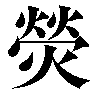燎原』だった。
これに触れた〝徒〟らは唐突に錯乱から覚まされ、体に力が満ちていく快感に一瞬、浸る。現実の脅威を背にしているため、逃げることは止められなかったが、精神に僅か、視野狭窄から抜け出たことによる余裕ができていた。
まさにそこへと、
《逃れよ、我が兵の示す退路へ。ただ走れ、目に見えた通りに》
救いの手のような言葉が齎された。
気付けば、大通りの脇道へと逸れる各所に［仮装舞踏会］の兵卒らが立って、大きな身振りで行く先を教えてくれている。自分で考えることもできず、反射的行動として逃げるしかなかった〝徒〟らは各々、縋るようにこれへと従った。
見る間に少年の前方、大通りの見通しが開けてゆく。
その開いて現れた前方を塞ぐ形で、道路沿いのビルを引き倒した陣地が構築されていた。立て籠もっているのは、言うまでもなく［仮装舞踏会］の西部守備隊である。
逃げ散る〝徒〟には構わず亡者の群れを進めていた少年は、杖を振り上げた。
「止まれ、者ども。ようやく、私は戸口に立ったらしいな」
どすん、と空気と地面を震わせて、土の足が一斉に止まる。
「やあやあ！ 我ら、創造神への強訴を試みる者！ 道をば開けてもらおうか!!」
メダルが叫んだ正面、やや遠く、楝色に燃える地面から、案山子にも似た双頭のシルエットが幽霊のように出現した。炎に襤褸のマントを緩く揺らす〝煬煽〟ハボリムである。
少年は凶悪な笑みの中で牙を剥き、問いかける。
「眩い炎から聞いたぞ、悪霊の将よ。私たちと違って、戦が好きでも得意でもない『雨と渡り行く男』を、思う様いたぶり、挙げ句に殺してくれたそうだな？」
「私自身は、あの戦場で痛い目を見ている。勝利は、盟主と将軍よりの賜物だ」
ハボリムは特段の感情を込めるでもなく返した。
少年の笑いは、皺の影とともに深くなる。
「まあ、それならそれでいい。悪霊どもを殺して殺して殺して殺し尽くせば、いずれ仇にも巡り会う。復仇のために来たのではないが、それくらいの楽しみが戦にもなくてはな」
言いつつ、少年の感覚は陣地の陰でうごめく軍勢の規模を計っていた。
どうも、先に逃がした〝徒〟らを退避のための誘導から一転、陣地の背後へと集結させているらしい。恐怖の対象から引き離した疾走の間に、地面を燃やす自在法で士気を回復させ、なし崩しに予備兵力として利用するつもりなのは明らかだった。
少年は、山高帽を放り捨て、長い髪を払う。
「面白い......戦を知っている奴がいるじゃないか？」
加えて、メダルが改めての挨拶として、怒号を放る。
「それでは！ お互い存念を力に変えて、ぶつけ合うとしよう!!」
「お相手しよう、我が兵らと、全力で」
受けて、ハボリムは『燎原』へと沈んでゆく。
彼ら西部の守備隊は、亡者の群れを前進させる少年、『大地の四神』の一人たる『群魔の召し手』サウスバレイとの交戦に入る。
そして、南方。
守備隊を率い、鉄道橋に設けた主要陣地で警戒に当たっていた〝翻移の面紗〟オセと〝化転の藩障〟バルマは、他三方からの敵襲の報を受け、改めて部下に命じる。
「空中の警戒を密にしろ！ 本命はこちらを通ってくる可能性が高いぞ！」
「誘導の人員は、一旦同胞らに足を止めさせるのだ！ 伝令も今すぐ外に出せ！」
言いつつ、しかし彼らは腑に落ちないものを感じていた。
人型の仮面を付けた巨大な豹と見えるオセが、それを声に変える。
「バルマ殿は、どう思われる」
「どう、とは？」
様々な配色の糸で織り成された象たるバルマも、自身の疑問と照合すべく、尋ね返した。
オセは表情のない顔から、考え考え声を放る。
「我らの守る南方へと本当に攻め寄せて来るかどうかはともかく......『大地の四神』らの襲撃がほぼ同時だったというのに、なぜ本命であるはずの姫様の方が、このように間を置いているのか、ということだ。天路少艾による速攻を加えるとしても、他の方面で戦端が開かれ、完全な警戒が『真宰社』で敷かれてしまえば、奇襲の意味などなくなるではないか」
「まさか我々が、他の三方に守備兵力を割く愚を犯すと期待しているわけでも、あるまいな」
バルマは答えて、同輩にやっていた目線を自分たちの守る方角、南へと向けた。
「時間差が攻め手の不手際でないとすれば、この混乱を利用するのが狙いだろう。進撃路が空中ばかりとは思っていては、足下をすくわれるかも知れんぞ」
「たしかに──」
頷いたオセは目線を同じくして、お手上げ、という言葉こそ相応しい光景を見やる。
彼らの正面には、他の方面以上に......否、他の方面とは比べものにならない数の〝徒〟らが押し寄せ詰めかけていた。理由は無論、恐ろしい敵が現れたことが封絶の外で広まり、その方角を避けようという動きが出始めたためである。まさに立錐の余地もない、という密度で彼らは押し寄せているが、現在のところ［仮装舞踏会］の側に取り得る抜本的な対策はない。
なにせ、彼らが赴くべき楽園は、まだ作られていないのだから。
巨塔『真宰社』の上で、創造神に抱かれた世界の卵たる『大命詩篇』は着々と膨らみ続けているが、今すぐ完成、という段階で流石になかった。当面はこの状況に耐えるしかない。
「──まず受け止めるのが作戦とはいえ、実行はなかなかに難しい」
溜息混じりの呟きの中で、彼は全く不意に、紅蓮を見ていた。
誰よりも眩く激しい、紅蓮を。
封絶を成す外壁の一点に、
赫然と点った、それは、
瞬時に、奔流となる。
（まさか）
真正面、だった。
（本当に）
オセとバルマが思う、
その間に頭上を抜けて、
炎の刃が一閃、空を貫く。
誰よりも速い、極光を連れて。
紅蓮の炎が巨塔『真宰社』の外壁に命中せんとした──瞬間、周囲の河床に散らばり沈んでいた『星黎殿』の残骸が水煙を上げて浮き上がり、使い捨ての防盾として粉砕された。
手抜かりをフォローされたことを恥じつつも歓声を上げるオセに、
「おおっ!?」
「来るぞ！」
バルマが活を入れる。
前方から突っ込んでくるのは、予想通りすぎる敵の一団。
鏃型の神器を駆り、極光を引いて高速で飛来する『極光の射手』キアラ・トスカナ、
それに掴まり、十字操具型神器を構える『鬼功の繰り手』サーレ・ハビヒツブルグ、
同じく仮面を被りリボンの鬣を靡かせる『万条の仕手』ヴィルヘルミナ・カルメル、
そして、紅蓮の炎髪と灼眼を煌めかせる魔神の契約者『炎髪灼眼の討ち手』シャナ、
四名からなる、創造神への反抗を企てるフレイムヘイズ。
迎撃のため市の南部各所に伏せられていた、飛行を得意とする〝徒〟や捕獲の自在法、さらには兵卒の放つ無数の炎弾が、凄まじい密度で空に可視不可視の柵を張り巡らせる。
が、空をも燃やさんとする炎の嵐の中を、極光を引いたキアラの神器〝ゾリャー〟は縦横に駆け巡り、己を遮るものの悉くをかわしてゆく。
「突破できるラインを探します！ それまで振り落とされないでください!!」
「キアラ、前よ!!」
「ッキャー！ それ撃てぇ!!」
軌道を邪魔するだけの火力密度が前面を塞いだ時は、自らの極光を弾丸に変えた『グリペンの咆』と『ドラケンの吼』が迸り、一挙に消し飛ばす。
その爆炎を突破した先に、自在法から成る物理的な壁が浮遊していた。
掴まるサーレが素早く操具を繰って、激突に先んじてこれに糸を張り付ける。
「ちっ、流石に一気に辿り着くのは無理か！」
「はっは、おおよそ数えて一分経った。賭けは僕の勝ちだな」
相棒の言に再び舌打ちしつつ、彼は操具を捻り、壁の角度を自在師の意に拠らず変えた。
四人を乗せた鏃は、角度を浅くに傾けた壁の上を、摩擦による火花を撒き散らしながらカタパルトのように滑って、さらなる上空へと飛び上がる。
その空域へと、飛竜や有翼獣、球体の〝徒〟が群がり立って襲いかかった。
反対側に掴まるヴィルヘルミナが、パートナーともども短く。
「お任せを」
「迅速突破」
言うや彼女の鬣からリボンが八方へと弾け、飛びかかった〝徒〟の全てを捉え、微かにも力をかけずベクトルを操作して、宙で互いに激突、あるいは高速回転させて追い散らす。
そうして開けた空の前に、浮かんでいるものが、一つ。
「──行かせん!!」
オセの仮面である。
体はどこにも見えないが、浅緑色の火の粉が一帯の空に渦巻き始める。その輝きの中、いつの間にか仮面は幾十幾百にも増え、高速で飛ぶ鏃に追随し始めた。やがて、火の粉の外の景色が掻き消え、仮面と火の粉だけが世界の全てと化し、飛行する方角も速度も、実感を奪われ──たかに思えた、その時、
「──『審判』──」
シャナが一言、後背に紅蓮の眼を燃え上がらせ、自在法を構成する力の流れを看破した。同時に、手にある大太刀『贄殿遮那』へと、今一度、力を伝わせる。
「構っている暇はない。道標を優先だ」
「うん」
アラストールの言葉に頷くと、キアラの飛行経路から、目的地たる『真宰社』と看破した敵本体の位置を同時に狙えるか、最低でも攻撃に巻き込めないか、計って数秒、
「──『断罪』──!!」
最適のタイミングで、再び巨大な炎の刃を生み出した。
幻術を一撃で吹き払い、術者の体を半分から削って、紅蓮の熱塊が空を貫き飛ぶ。
間髪入れずシャナは叫び、
「キアラ・トスカナ！」
「はいっ!!」
答えたキアラは、アラストールの言葉通りに自在法『断罪』の開けた道へと飛び込んだ。砕け散る仮面と消し飛ばされる浅緑色の火の粉を突き抜け、再び封絶の空へと脱する。
正面、シャナの『審判』の睨んだとおり、巨塔『真宰社』が聳えている。攻撃自体は先と同様に、浮かび上がった『星黎殿』の瓦礫が身代わりに砕けていたが、その距離は、近い。
彼女らの飛び過ぎた背後、
「オセ!!」
「ぐ、うう......」
黒焦げの上半身のみとなって落ちてきたオセを、体を解いた糸として受け止めたバルマの許に、遠話による将軍の声が届く。
《突破されたのなら、守備隊の出番は終わりだ。追撃は要らんから、後方で陣を固めて態勢を整え直せ。奴らだけじゃない、後続の突入もあり得るぞ》
二人は無念のほぞを噛みつつ、
「了、解......」
「了解、しました」
各々できる限りの強さで復命した。
突破したシャナらの方は、もはや『真宰社』の至近まで迫っている。
「中心に〝頂の座〟がいる。蛇自身は動けるのかな？」
頭上、巨大な蛇身が抱く世界の卵の内部を『審判』で見通したシャナ、
「儀式の最中は動かぬはずだが、用心はしておけ。創造の中核たる巫女を自在式で囲っているのは、三千年前の儀式において標的にされた、という弱点への対策だろう」
答えたアラストール、二人に向かって、
「前です!!」
キアラが叫んだ。
（いけない、なにに付けても見通しが良すぎるせいで、その対象へと気を取られて他が疎かになってしまうのは、この『審判』の弱点かも、──!?）
反省しつつ目を落としたシャナは、驚愕する。
彼女の『断罪』を『真宰社』に代わって受け止めた『星黎殿』の瓦礫が、今度は幾百もの岩塊として浮かび上がり、巨塔を守る障壁、または衛星のように、周りを巡り始めていた。
そしてそこに、無駄に大きな、できるなら聞きたくなかった声が響き渡る。
《んんーっふふふふ!! どぉーうです、こぉーの防衛機構の出来映え見映え化粧映え！ 『星黎殿』のぉー残骸を用いた、無ぅー駄のないっ超・仕・様!! こぉーれぞ組織と私に優しいェエークセレントな！ リィーサイクル・ェアァーンド・エェーッコロジー!!》
例によっての無駄なハイテンション......〝探耽求究〟ダンタリオン教授のものだった。
「出たか、親父殿。変わりがなさ過ぎてウンザリするぜ──っとは!?」
言葉とは裏腹に苦笑するサーレが、急制動をかけた鏃から危うく振り落とされそうになる。キアラへと首を振り向ける中、急制動の張本人を、巨塔を巡る岩塊上に見つけた。
暗灰色のトップハットとテールコートにマント、という古写真から抜け出したような、怪しい紳士。身形に浮き上がるような老若判別の付かない白皙の美貌が、穏やかに笑っていた。
〝冀求の金掌〟マモンである。
その差し出された掌には、意中のものを思うが儘に引き寄せ掴み、また押しのけ払う欲得の自在法『貪恣掌』が、輝く入れ墨のように黄蘗色の自在法として点っていた。
引き留める力を振り切らんとするキアラが、シャナらに決行を求める。
「そろそろ、行きます！」
「たしかに、続々登場の案配だものね」
「これ以上ややこしくならない内に、やっちゃいなよ！」
ウートレンニャヤとヴェチェールニャヤも言って促し、
「良かろう、敵本拠も近い」
「じゃあ、ここで」
アラストールとシャナが、
「二手に分かれるのであります」
「武運長久」
ヴィルヘルミナとティアマトーが言って、別れた。
二人にして四人は鏃から飛び降り、舞い上がる。
のみならず、自在式らしきものが同時に数百、雨のように一帯へと降り撒かれた。
怪訝に思ったマモンは、
「ふむ、これは......？」
もう一方の掌で、この一つを捉え、眼前へと引き寄せる。
攻撃のためのものではない、隠蔽やらなにやら、雑多に混ざっている。
輝く色は、シャナやキアラのものではない、彼には見覚えのある褐色......彼女らと行動を共にしているはずの、要注意人物たるフレイムヘイズのものである。
（調律師のご老体二人に関わるもの、でしょうか？）
ふと、マモンは、そのフレイムヘイズが三千年前の儀式に列席・反逆（彼の目線からは当然そうなる）していたことを思い出し、不穏な予感に駆られた。
（全て回収した方が良かったでしょうか、ね）
危険物と思い、一つだけしか捕らえなかった自分の掌の小ささを、やや悔やむ。
（まあ、それよりも）
彼の顔を照らす極光へと、鏃を捕らえていた掌を向けた。
ドン、と空気を震わす衝撃を撒き散らして、キアラの放っていた『グリペンの咆』と『ドラケンの吼』が、拒絶の力を受けて飛散する。
その向こうから飛ばされる繰りの糸をもかわし、
（まずは当面、生き残らねば）
マモンはマントをはためかせて岩の間に逃れた。
自由を再び得たキアラは、素早く『貪恣掌』の死角に入るよう鏃を、塔の周りを巡る岩塊の間へと入れる。幸い『星黎殿』の瓦礫は巨大で、身を隠すにも密かに移動するにも、もってこいの環境だった。上手くやれば十分、あの厄介な〝王〟と戦える、と心を強く持つ。
（もっとも、師匠がこれの制御を乗っ取ることができれば、だけど）
残った同乗者であるサーレが、彼女の隣で、操具から幾十と糸を伸ばしていた。今すぐマモンに挑む、という風でもない。作業の傍ら、ぼそりと文句が出る。
「ここで親父殿が、大人しく引っ込んで、多少でも時間をくれたら楽が──」
《ッサアアアアアアア──ッレ・ハビヒツブルグ!!》
「ははは、やっぱりね」
全く予想どうりの展開、大音量の大絶叫に、ギゾーが笑った。
呼ばれたサーレは当然、笑えない。
「はははじゃねーだろ」
《今ぉー日という今日─っこそは！ 私の雄図をさぁーんざん阻みまくってくれた、お返し総決算大感謝祭にしぃーって見せますよぉー！ 覚悟を決めて討ぅーったれなさい!!》
フレイムヘイズとしての生みの親の勝手な言い分に、思わず苦笑が漏れる。
「総決算にしたいってのは同感なんだがね」
「どっちの収支が黒字になるか、ここからが勝負のしどころって奴かな」
ギゾーの軽口に答えようとしたサーレは、岩塊の回り巡る軌道の内側、巨塔『真宰社』の壁面が、重々しく観音開きに開き始めたことに気が付いた。
「なんだ？」
「一つじゃありません！」
前を見るキアラの言うとおり、円筒形をした塔の壁の全方向が、同様に開いている。その内部、巻き起こる蒸気の中から、巨大な鉄の手がヌウッと伸びて、開いたハッチを掴んだ。重々しい駆動音ともに、体を乗り出し、足を踏み出す。
「はあ？」「へえ？」
サーレとギゾー、
「なっ!?」「ちょっ」「バッカじゃないの」
キアラとウートレンニャヤ、ヴェチェールニャヤが各々の感想を一声で表したモノが、塔の側面から幾十体も姿を現していた。
それは、ブリキ人形をそのままサイズアップさせたような、単純なフォルムの鉄巨人。
色も付けない金属の剥き身で、関節は蛇腹、各所は溶接ではなく鋲で留めてある。おまけに三角帽子のような頭に開いた丸い両目は、サーチライトになっていた。カッ、と馬鹿のように白けた緑色に目を点らせたそれらは、悪夢と言うよりは冗談の住人として動き出す。
《すごぉぉぉーい！ おおきぃぃぃーいっ！ かぁぁぁーっこいいいいいいいい──!!》
教授一人が悦に入る絶叫の下、
「せめて、気が抜けた隙を突かれんようにしなきゃな」
「なら、マモンへの対処に気を払えばいいんじゃないですか？」
サーレとキアラは、岩塊の間を潜りながら、自分たちの役割を心に捉え直した。
そこから、遙か上の二人、
紅蓮の双翼を、全開の噴射で上昇していたシャナは、その頂の端を見つける。
「ヴィルヘルミナ！」
指示を送ることも、指示を問いかけることもなく、一声で分かり合う。
「了解であります」
少女の手首にリボンを巻いて追随していたヴィルヘルミナは小さく頷くや、上昇軌道の斜め上、塔の外壁へと硬化させたリボンを、アンカーとして打ち込んだ。
その決して切れないリボンに引かれ、上昇の速度を落とさないまま、二人は巨塔『真宰社』の屋上へと、足音も強く着地する。何者をも映さず、ただ銀色の影だけを落とす神殿へと。
遂に立ったその場所で、二人の人物が彼女らを待っていた。
「シャナちゃん!!」
箱庭『玻璃壇』の中心に立ち、涙声で叫ぶ吉田一美と、
「やれやれ、教授め。肝心要かなめの二人を放置とは、まったく毎度毎度......」
呆れつつも笑って、剛槍『神鉄如意』を肩に担ぐ〝千変〟シュドナイである。
双方、対峙する。
今、そこは間違いなく、世界の中心だった。
フレイムヘイズ二人と、
御崎市全域を覆う巨大な封絶、
中天に輪を描く、創造神の黒い蛇身、
その内で巫女を抱き、着々と育つ世界の卵、
直下に傲然と聳える、全ての企ての中枢たる巨塔、
楽園創造の一部品として、自ら囚われの身となった少女、
何者の邪魔立てをも阻む、最強の敵手として立ちはだかる将軍、
そして、
黒い蛇身と世界の卵を背に降り立った、緋色の凱甲と黒い竜尾で装う、少年。
創造神〝祭礼の蛇〟の代行体・坂井悠二。
シュドナイの傍ら、抑えるように僅か前に立った彼は、素直に笑いかける。
その正面で向き合い、ヴィルヘルミナを抑えるように立つシャナも、笑う。
「悠二」
それだけを、言い、
「シャナ」
それだけを、返す。
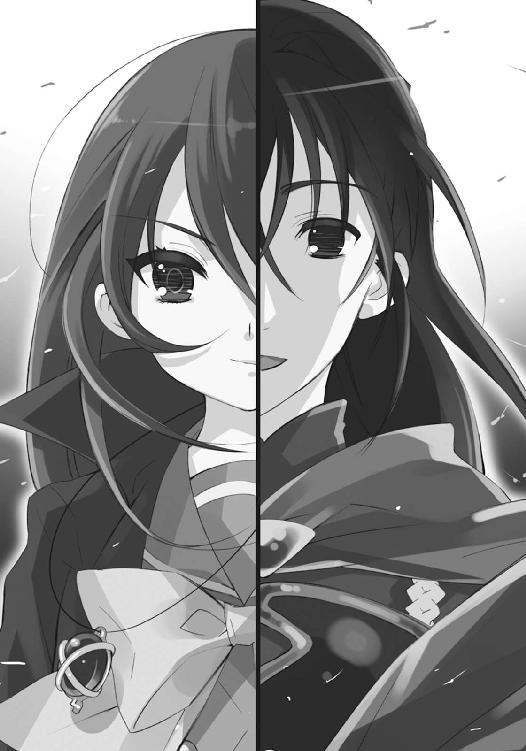
二人は、互いのかける、次の言葉を知っていた。
少女の手には、身の丈ほどもある大太刀が握られ、
少年の手には、片手持ちで幅広の大剣が握られる。
図らず、計らず、声が重なる。
「「──決着を──」」
あらゆる状況を監視する中央制御室で、ベルペオルが口元を掌で覆う。
（あれだけ、か？）
彼女は、この戦いで現れるだろう最悪の不確定要素『炎髪灼眼の討ち手』シャナと共に現れるフレイムヘイズを、最大で軍団規模、最小で九人と想定していた。
最大のものは、『震威の結い手』が決戦場で敗退した残兵を束ね、『昏鴉の御し手』が西部防衛線の主力軍を率いて......というケースだったが、こちらに実現の可能性がないことは、決起前の襲撃と現在の情報収集、双方を照合させた結果としてハッキリしている。
従来の指導部を瓦解させ、急造された指導者の威信を失墜させた外界宿は、その巨大な図体を統一的な意思の許で動かし得ていない。数個・別途の筋からの情報によると、指導部は未だチューリヒで愚にも付かない小田原評定を続けているという。
仮にそれらがやって来たところで、［仮装舞踏会］には、先の大戦から保持されている兵力だけで十分以上の優位があり、なにより集い来る同胞らを合わせることで圧倒的......否、フレイムヘイズらにとって絶望的な兵力差を獲得しつつある。なんの心配もなかった。
ゆえに、ベルペオルの警戒は、あるいは大軍よりよほど厄介だろう最小のものの方、実現する可能性の高いケースにこそ向けられていた。が、
（だとしても、少なすぎる）
その実現した今の情勢に、ベルペオルは不審を抱く。
彼女は『炎髪灼眼の討ち手』個人が糾合し得る面子......つまり『万条の仕手』、『弔詞の詠み手』、『儀装の駆り手』、『輝爍の撒き手』、『鬼功の繰り手』、『極光の射手』、加えて『大地の三神』らの出現を覚悟していたのというのに、実際の数は、これら九人にすら足りていない。
確かに、大暴れしていることに違いはないものの、確認された襲撃者は六人だけで、『弔詞の詠み手』、『儀装の駆り手』、『輝爍の撒き手』が欠けている。
（共闘の多かった『弔詞の詠み手』、それに『詣道』にまで追ってきた『儀装の駆り手』と『輝爍の撒き手』が、今さら離脱するとも考えにくい）
三者いずれも一筋縄ではいかない曲者、どのような奇策を弄するか知れたものではない。
そうでなくとも、先の大戦では不在中に『星黎殿』内部をいいように引っかき回され、まんまと『炎髪灼眼の討ち手』の救出、得難い将帥たちの戦死、という非常の事態を引き起こされてしまっている。最後の一手となるこの戦いで、足下を掬われるわけにはいかなかった。
周囲に積まれた報告書の束を、額の目だけで見る。
（半日前の武漢での事件も聞いたが......あれだけの戦力、三者を全て回すものかね？）
たった今、マモンから連絡の入った、褐色の自在法散布という行為も、彼女の三眼には、わざとらしい欺瞞と映っている。しかし、だとしても、分からない。
（なにか仕掛けている、まだ予備兵力を隠している、というポーズを取ったとして、連中に一体なんの得があるのか......どうにも、腑に落ちない）
連中が取り得る妨害工作として最も確率が高かったものは、『大地の三神』による陽動攻撃の陰で、密かに封絶内へと潜入し──仮に以前のような秘密の抜け道が他にあったとして、今や本来の『星黎殿』を形作っていた部品の全ては『真宰者』への移行とともに崩壊している──盟主に対する直接の奇襲を行うことだったろうが、実際の『炎髪灼眼の討ち手』は小細工なしに真っ正面から突入してきた。
結果としては、ほぼ想定通り。奇襲しても同様の戦況になったはず、という彼女ら［仮装舞踏会］にとっては満足すべき結果が出ているのだが、だからこそ気味が悪い。
（あの魔神の契約者が、そこまで無策なわけもなし）
煌めく炎髪灼眼の豪壮な姿、危険な存在と確信した時の脅威が、古傷のように疼く。
フレイムヘイズ『炎髪灼眼の討ち手』シャナは、力押しを好む。好むが、それは単に個人としての嗜好であって、目的達成に必要ならば、それを容易く脇に置いて、幾らでも権謀術数を巡らせ、不意を突き奇策を弄することも厭わない、最も面倒なタイプの討ち手である。
彼女は短い接触期間で、そう鑑定していた。
（現に、こんな真似をしでかしているわけだし、ね......）
報告書の、別の束を取り上げる。
ほんの数十分前に届いた、封絶外部との定時通信だった。
報告書の内容は、
かの『炎髪灼眼の討ち手』は御崎市への突入の直前、
全世界へ向け天罰神〝天壌の劫火〟の契約者として、
人間の通信機器を用いた、彼女自身の宣布を発した、
というものである。
世界中に発せられた宣布は、
《天罰神と共に起つ者は来よ。座して他者に世界の在り様を委ねる気のない者は集え》
という、いわば檄文だった。
創造神と対抗する心の支えとするに、最高の大義名分ではある。
それ以前の段階から、多くて十人単位という小集団ながら、世界各地から集い来る同胞らに対する散発的な襲撃は続いている。盟主の宣布を聞いてなお心挫けない者らによる幾らかの勢力形成は、受容せざるを得ない。外界宿の指導部を散々に叩くことで、組織としての統率や連携の余地を奪ったはずだったが、どこにでも往生際の悪い者はいるものである。
（しかしまさか、ここに来て、あの天罰神が出しゃばってくるとはね）
武漢での事件も、その兵力再結集計画の一環なのだろう。フレイムヘイズらに余計な行動のベクトルが加えられた今、別個独自の行動が結び合って、何らかの障害となる流れが起きないとも限らない。もちろん、今さら盤石を期した大勢が覆ることはないだろうが、制御に与らない流れの存在は、やはり危険だった。
（となると、ここに姿の見えない連中は、その再結集を取りまとめる要員として各地に派遣された、ということか......やはり、決戦場を置いてまでやることとは思えないのだが）
いずれにせよ、その決戦場たる御崎市での戦いをこそ、彼女は注視する。
三千年前の反省を生かし、『大命詩篇』が完全稼働状態に入った今、創造神の本体と巫女を容れた世界の卵は、完全一式の応用による防御壁で守られており、何者にも侵せない。
各守備隊と交戦する『大地の四神』たちの強さは、やはり端倪すべからざるものだったが、それももうすぐ、代行体の宣布が引き起こす、二段目の効果によって片付くだろう。
（時を経るに従い、この地に集う同胞の数は爆発的に増えてゆく......むしろ我らこそ、そちらとの接触によって起きるだろう混乱に気を払わねばなるまいの）
自在法によって落ちる砂時計に目をやる。
決行の時限である午前零時までには、ややの間があった。
（まったく......最後の最後まで、ままならぬ）
薄く笑みを浮かべる彼女の背後では、教授が手だの首だのをクルクル回しつつ、
「んんーっふふふふ、そぉーろそろ『真宰社』の機ぃー能と連動連結した、あの秘ぃー密兵っ器!! の試ぃー用実験に入ぃーりますよぉー、ドォーミノォー!?」
「だからアレは、周りの御〝徒〟にも、かなり危険だから止めた方がよひははは!!」
「......『秘密』と『兵器』......二つ合わせて、秘・密・兵・器!! こぉーの絶ぇーっ対魅惑な浪漫の響きを解ぃーさないとは、そぉーれでも私の助手ですか、ドォーミノォー!?」
叫んで抓って操ってと、全く忙しげに立ち働いている。
巨塔『真宰社』の頂、銀の影を足下へと映す神殿で、
シャナと、その傍らに立つヴィルヘルミナが、
悠二と、その傍らに立つシュドナイが、
吉田を傍らに置いて、睨み合う。
身じろき一つで発火せんばかりに昂ぶる空気の中、最初に口を開いたのは、悠二。
「できれば、吉田さんは狙わないで欲しいな。彼女を排除しても、些細な手間を一つ増やすだけで、大命阻止には繋がらないから、さ」
それは全く、彼らしい気遣いの前置きだった。
対するシャナは、両の灼眼を常以上に煌き燃え上がらせて、厳しい声をぶつける。
「念を押されなくても、分かってる。一美を狙って無効化できるのなら、こんな無防備な形で配置してるわけがない......でも」
一瞬、間を置いて、厳しさに険しさを加えた。
「些細な手間を省く程度の理由で、一美をここに連れてきたのは、許せない」
心底困った風に、悠二は弁解する。
「言葉が足りなかったかな。省力化ってのは周りを説得するための口実で、本当の理由は他にあるよ。吉田さんにも言ったけど、大命以外の......坂井悠二自身の理由があるんだ」
弁解して、しかしシャナの端的な問いかけにも、
「それは」
「うん、言えない。言い方は悪いけど、大命には直接関係ない、ついでのことなんだ」
柔らかな物言いで、明確に回答を拒んだ。
シャナも、無駄に食い下がったりはしない。
「そう。無関係って事が、一美の安全を保証するのなら、いい」
ただ堂々と、一切の妥協なく、文字通りに立ち向かい、黒衣『夜笠』を払う。
「私は、創造神に断固たる一撃を加える。だから、戦う。それだけ」
少女の変わらぬ姿に笑いかけようとした悠二は、
（!!）
その中途で、密かに、不意打ちとしての衝撃を受けていた。
シャナは黒衣の内に、御崎高校の制服を纏っていたのである。
深緑のセーラー服は、かつての、彼がよく知る『シャナの姿』──。
ただそれだけのことに来した、予想外の動揺を隠そうと、口を開いた彼は、
「では、余は断固として楽園の創造を行い、その障害を打ち払おう」
創造神に言葉を委ねていた。
「今度こそ、余計な邪魔立てはさせぬ......そのためにこそ代行体・坂井悠二の協力を得、我が将軍を自由にする儀式形態を定めたのだからな」
どちらの意思か、大剣『吸血鬼』を差し向けた手に、力が入る。
その背後でシュドナイが、蝙蝠の翼、鬣と角、鷲の足、蛇の尻尾を備える虎に、変化する。
応えて、シャナも大太刀『贄殿遮那』を構え、剣尖を突き出す。
同じく傍ら、ヴィルヘルミナも仮面から延びた無数のリボンの内に、ふわりと浮き上がる。
さらに凝縮されてゆく高密度の戦意と戦機に晒されて、
「っ──」
双方を『玻璃壇』の内から傍観する吉田は、思わず顔の前に掌をかざした。
と、その、指と指の間、
（大丈夫）
（待ってて）
彼女は、向けられた視線と、微かな唇の動きから、二人の言葉と、秘めたる辛さを感じる。感じて、そのどちらに対しても、同じく視線と唇だけで答えられたはずの彼女は、
（──あ）
何故か、二人の姿に衝撃を受け、答えることができなかった。
ただ、自分の得た、不分明でありながら強い衝撃に打たれ、立ち尽くす。
か細い息を零し、服の内に隠された物を、再び押さえながら。
その見つめる先で、少年と少女の、戦いが始まる。
シャナが、滑るように神殿の床を踏み込んで、前に跳んだ。
悠二は、付け焼き刃の技巧では対抗できないと分かっている。その場に踏ん張って大剣の刀身に空いた手を添え、体に満ちる剛力で真っ正面から受け止めた。
「っはあ！」
大剣の刀身に、刃を触れ合わせる者を傷つける血色の波紋が揺れる、
「──っ！」
寸での前に、シャナは大太刀を押し込んだ反動を使って、体を離している。即座に紅蓮の双翼を背で噴射して、今度こそ床を滑って飛び、間合いを取った。
その翼の紅蓮に目を焼かれた悠二の、不用意に前に伸ばされていた手首に、いつの間にか間合いを詰めていたヴィルヘルミナのリボンが巻き付く。
彼女の短い気合い一声、
「ふっ!!」
悠二の、床に踏ん張っていた力、振り解こうという体重移動、剣で切り払おうとする動作、全てにリボンの僅かな一押しが加えられることで、超高速の転倒が引き起こされた。
が、転倒は、意図された床面への激突を起こさない。
宙へと放り出された足の裏と床面の間を、まるで水面下から引きずり出された蛇のように伸びた歪な鎧や機械の部品からなる銀の影が、激突の寸前で静止させていたのである。自ら逆さ吊りになった、その頬をかすめて、
「ゴアアアアアアッ!!」
濁った紫色の炎弾が走る。言うまでもない、魔獣となったシュドナイの咆吼とともに放たれた、高密度の炎弾だった。
並のフレイムヘイズでは受けとめた防盾ごと打ち砕かれるこの攻撃を、しかしヴィルヘルミナはリボンを自身の周りに渦巻かせ、触れた微かな反発を加えることで大きく跳ね飛ぶ。悠二に行った投げを己に打つ、強大な攻撃力を躱す跳躍に変換する、極限の防御法だった。
さらに、ヴィルヘルミナが攻撃を引き受ける間に距離を取ったシャナが、神殿の端から悠二を指さす。その指先から溢れ出す紅蓮の炎を媒介とする実体化、自在法『真紅』によって現れたのは、鋭い爪を備えた魔神の指。
直径だけで大人の背丈ほどもあるそれは、現れただけではなく、高速で伸びる。
砲弾どころではない質量の驀進に直面する悠二は、
「──」
言葉を作る暇もなく宙で身を翻し、外側に銀の影を固めた壁を、内側に後頭の竜尾で自らを幾重にも巻き覆った殻を、それぞれ作った。
が、魔神の指は、
「──ぐ、ごはぁ!?」
銀の壁を紙のように打ち抜き、黒い殻を軟球のように拉げさせ、中身ごと吹っ飛ばす。
そんな彼を、大きくした掌で受け取ったシュドナイは、文字通り掌中の玉のように己が身で隠し、その動作の端、振るった腕で剛槍『神鉄如意』を巨大化させた。
「っふん!!」
受けた一撃の進路を正確に遡り、同等の威力で逆襲する。
シャナは悠二のように、正面から受け止めようとはしない。紅蓮の双翼の全力噴射で離脱する。手首にはヴィルヘルミナのリボンが絡んで、より迅速な退避を助けていた。
その離脱を、悠二を抱えたシュドナイも追い、神殿には再び静寂が戻る。
ほんの数十秒という強者同士による戦いの間、止まる寸前にまで細めていた息を、
「──ふ、ぅ──」
ようやく深々と吐いた吉田だけが、『玻璃壇』の中に一人、取り残されていた。
追跡の中、竜尾の殻を解いた悠二は、シュドナイの背に乗る傍ら、
「効いた......やっぱりセンスも経験値も違うな」
未だ視界の揺れる頭を振る。
魔獣の顔でも分かる、しかし含みのない笑みを、シュドナイは浮かべた。
「なに、盟主殿も小さき身で過ごされた日数にしては、なかなか」
「そうかい？ じゃあ、自分でも納得できるよう、もう少し頑張ってみるよ」
笑い返して、再び身の内に力を充溢させる。
やや上方、恐らくは遠回りに創造神の蛇身と世界の卵への攻撃を試みるつもりなのだろう、シャナとヴィルヘルミナ（攻撃は通用しない、という敵の言い分を鵜呑みにせず、とりあえず実証してみる性格であることは分かっている）が見えた。
追って風を切る彼も、付け焼き刃は付け焼き刃なりに、試みる。
「代行体になってすぐ、在り様に即した『坂井悠二独自の自在法』でも使えていれば、シャナも見直してくれたんだろうけどな」
言う間に、凱甲や竜尾の端々から、黒い火の粉が弾けるように舞い落ち始めた。
シュドナイの笑いに、今度は困った色合いが混じる。
「くくっ、教授から竜尾と『暴君』をせしめておいて、そりゃあ贅沢というものでしょう。名うての〝王〟でも、独自の自在法を会得するには長短の個人差があるんですから」
「たしか──に!!」
笑いの最後、点火するような大声を受けて、周囲に散っていた無数の火の粉が、漆黒の炎弾として膨れあがった。視界の欠落を錯覚させる黒い奔流が、紅蓮の双翼で上方を飛ぶシャナ、その手首にリボンを巻いて引かれるヴィルヘルミナ、二人を狙って舞い上がる。
気付いたシャナは、
「ヴィルヘルミナ！」
「気遣い無用、お好きに飛ばれるがよろしいのであります！」
ヴィルヘルミナとともに、無秩序に乱れ舞う炎弾の中を華麗に掻い潜り、躱しては上に、避けては近く、創造神の蛇身と世界の卵へと近づいていった。
が、やがて、
（!!）（む、そうか）
（食えない奴であります）（向腹）
アラストールやティアマトーともども気付く。
悠二の炎弾が、彼女らが目指す先にこそ、向けられたものだったことに。
黒い炎弾の奔流は、シャナらに回避されてなお突き進み、上空に浮かぶ蛇身と卵に命中、大爆発を起こしていた。無論、そのどちらも、かすり傷どころか揺らぎさえしない。狙っても無駄だと、自らの攻撃によって証明して見せ、同時に彼女らの頭を押さえたのだった。
証明がなされ、上昇を遮った頃合いを見計らってか、突如、無秩序に立ち上っていた無数の黒い炎弾が、彼女らの周囲で一斉に弾ける。
空間を塗り潰す黒い炎が満ちる前にと、
「はっ！」
ヴィルヘルミナが防御の繭を作ろうとリボンを周囲に巡らせた刹那、
「待って!!」
シャナが叫びつつ、両腕を左右一文字に広げた。動作の勢いに乗って大量の炎が噴出し、再び具現化の自在法『真紅』が発現する。今度は広げられた両腕そのままの形で。その魔神の両腕が間一髪、左右から閉じられつつあった巨大な獣の顎をガッシリと受け止めた。
「ヴィルヘルミナ！」
「了解であります!!」
失策への気後れを微塵も動作に表さず、ヴィルヘルミナは黒い爆炎を煙幕に攻撃を仕掛けてきた巨大な獣の顎──シュドナイであることは言うまでもない──に無数生えている牙へとリボンを絡め、簡素な一声。
「どうぞ」
「ん！」
答えてシャナは『真紅』を解く。
不意に支えを失った顎が閉じる、その双方向から迫るベクトルをヴィルヘルミナのリボンが微妙にずらし、顎の根本を引き千切らんばかりに左右の噛み合わせを、さらにはその全体をも渦巻き状に捻って、本体ごと一気に地面へと叩き付ける。
鈍い地響きと濛々たる土煙、さらには地に満ち満ちていた無数の〝徒〟に下敷きの断末魔を上げさせる、まさに戦技無双の名に相応しい超絶技巧の投げ技だった。
それでも、投げられた当のシュドナイは、ダメージを表すでもなく人型に戻り、
「並外れた力と技にこうまで噛み合われては、攻めるに攻め切れんな」
「いいじゃないか。戦い続けてくれさえすれば、いずれ時が満ちて、こっちが勝つ」
その一歩前には悠二も、やはり平然と立っている。
二人が賞賛するほど戦況が有利でないことは、戦うシャナらの方がよく分かっていた。今さら気を緩めるはずもなく、巨大な顎の間だった場所、シュドナイが人型に戻ったため、微妙に開けた空間になったそこに立って、周りの様子を注意深く窺う。
彼女らが落ちたのは、真南川の河川敷だった。
グラウンドや駐車場などがある広いそこは今、堤防の斜面や上までも、無数の......まさに無数の、という表現こそ相応しい数の〝徒〟によって埋め尽くされている。
もちろんそれらは、凶悪な力を振るうフレイムヘイズに襲いかかったりはしない、ただ集まってきただけ、雑然と居並んでいるだけ、という全くの烏合の衆だったが、それでも先の大戦など問題にならない異常な数が視界を埋め尽くす様は、圧巻としか言いようがなかった。
軽く口笛を吹く真似をして見せたシュドナイのように、同胞としての感嘆も抱けないフレイムヘイズには、見渡す限り敵というこの光景は、発狂さえ誘う視覚的圧力が備わっている。
これを背景に、創造神の代行体として、悠二は言う。
「いつか言ったよね。フレイムヘイズは絶対に大命を支持しない、って。あの時は口で言っても無駄だと思ったから言わなかったけど......今なら分かってもらえるかな」
「......」
「！」
また揺さぶりか、と彼の口撃による度重なる前科、あるいは多大なる戦果から警戒するシャナとヴィルヘルミナは、精神的な防壁をあらかじめ築いて、耳を傾けた。
悠二の方は気にせず語り続ける。
「楽園の仕組みとか、この世の状況とか、大災厄の危機とか......その手の理屈も、たしかにある程度の理由にはなってるんだろう。でも、本当はそういうことじゃないんだ」
言って、大剣を持たない方の腕を、大きく後ろに払った。
そこにいるのは〝紅世の徒〟......数え切れない人喰いの異世界人たち。
そこにいること自体に違和感を抱かせる、この世への侵入者。
そこにいることが、既に誰かを喰らった証たる存在。
それらが歓喜と興奮に満ちて、そこにいた。
悠二は、光景で示し、事実を語る。
「本当の理由は単純明快──フレイムヘイズは本質的に〝徒〟を許せない。個人で交流のある者も、浅からぬ因縁で好悪の感情を抱く者も、復讐を果たし終えた者も......何故なら」
気付けば、悠二の顔から笑みが消えていた。
「それは、この世の異物に対して、この世の生物として抱く、拒絶反応だからだ。異物が、この世を模した世界をもう一つ作り、そこでさらなる勝手放題することを、この世の抗体として選ばれた彼らは許せない。許さないんじゃなく、存在の在り様として、許せないんだ」
代わりに表れているものは、無上の真摯さ。
「ただ、それを現実の行動に移すかどうかは、それこそ個々人の信条や状況がものを言う。今こうして、戦って在り様の本分を示す者と、戦わないで妥協する者とが分かれたように」
悠二ではない、もう一人のそれも、同時に。
「この話をしたのは、だからそっち側じゃない、こっち側のことが言いたかったからさ。拒絶反応云々は空論じゃない、フレイムヘイズのシステムを参考に、こいつを──」
言って、足下の銀色の影から歪な鎧を、かつて創造神の代行体とする予定だった『暴君』を呼び出し、頭頂を掌で受け止めると、また押し込めるように戻した。
「仮想意思総体として操ること、両界の狭間に在る神体と交信すること、双方の研究の過程で得られた、厳然たる事実だ。我ら〝徒〟は、この世に在っては、許されざる過客──」
後ろと言わず前と言わず、集まっている〝徒〟たちを仰ぎ見る内、
「ゆえにこそ」
声に、少年のものではない響きが強くなる。
「余は、この楽園『無何有鏡』創造を行う」
いつしか語る相手は、シャナらではなくなっていた。
まるで、受け入れるという行為を、仕草で表すかのように、
創造神の代行体は、大剣を持った方も加えて、大きく両腕を広げた。
「余は、〝紅世の徒〟の欲する世界を、〝紅世の徒〟のための楽園を、創造神として与える」
そして、周囲一体の〝徒〟らが耳を傾け注視する中、
「そのとき初めて〝紅世の徒〟は、故郷でも得られなかった充足と安息を得──」
ゆっくり大剣を、上へと掲げてゆく。
「望み望まれた世界に生きる、真の実存と成るだろう」
それが、頂点に差し上げられてから、
「......」
響いた声の余韻までも喰らい尽くす間を幾秒か置いて、
「......我らが創造神〝祭礼の蛇〟──万歳っ!!」
誰からともなく一斉に、〝徒〟らは自らの肯定者たる神に対する、歓呼の叫びを上げた。
言葉として纏まった最初の一声を過ぎると、もはや後は纏まるどころか感情を声にしただけの絶叫へと変わる。誰もが熱狂を姿にまで表し、炎を吐き、火の粉を散らし、狂騒の場はとりどりの色、とりどりの声、とりどりの形で埋まってゆく。
それら欲望の宴を逆光と背負い、自らは漆黒の影となる代行体が、口を開いた。
「余が与え叶えることの意義を理解した上は、今さらの邪魔立てなど、してくれるな」
が、
「......」
真正面、紅蓮の煌きを放って立つ少女には、妥協の緩みなど微塵も見えない。一歩後ろに控えるヴィルヘルミナともども、同胞に甘い神との今さらの問答さえ、拒んでいた。
創造神にとっては大いなる不満、代行体にとっては全くの当然、という彼女の反応を受け、後者が当然と感じた理解の内から、働きかける方策を繰り出す。影から抜けるように、軽く巡らせた目に周囲の炎を映し、
「まるで、花火だね」
少年として懐旧の声を放る、という形で。
「ここでのお祭りが、懐かしいな」
「......！」
それだけのことにシャナは、ぴくり、と反応する。
悠二は、彼女が自分の言葉に乗ってきたことを成功と見て、彼女を僅かでもこちらに引き寄せる、あるいは単純に午前零時までの時間を稼ぐ、その行為として話を続け、
「よく人が思い出を『昨日のことのようだ』って言うけど、羨ましいよ。もう手も声も届かない、遙かな昔に思える......シャナとは、あの時少しケンカもしたっけ」
「── 」
「えっ？」
彼女の不意な唇の動きに、刺激物として入れようとした話題を中断させられた。
シャナは、先と変わらない炎髪灼眼を煌かせる姿で、しかしどこか切実な色合いを加えた面持ちで、今度はほんの少し声を大きくして、先と同じ言葉を、呟く。
「──手紙」
「手、紙？」
悠二は、その単語と自分の話との関連性について考え、
シャナは彼の、考えた、という行為だけで、理解した。
彼が、とある手紙のことを、忘れてしまっている、と。
彼にとってはメモ程度の置き手紙、忘れて当然のなんでもない物......そう、自分でも納得していたというのに、心を傾斜させていた切実さが、懸けていた想いの分だけ、無闇に大きく、やたらと強く、それまでの気持ちを逆転させて一つの力に変える。
「──」
「シャナ？」
思わず悠二が考えを中断したほど一目瞭然に、
「────」
全身で、シャナは怒りを表していた......否、
「────悠二の」
まさに全身全霊でムカっ腹を立てていた。
所を同じくして、またもこんな気持ちにさせられるという理不尽に。
遠くばかり見て近くに気を払わない少年の、あるいは男の在り様に。
胸元のアラストールが薄々察し、傍らのヴィルヘルミナとティアマトーが仮面越しに困惑を見せたほどの、それはあからさまな、そしてあまりに純粋な、怒気の放出だった。
決壊するように、
「バカああ──!!」
フレイムヘイズ『炎髪灼眼の討ち手』らしからぬ叫び声が形となったかのように、振り向けられた腕の流れに乗った、強力極まる高圧の炎からなる自在法『飛焔』が、迸る。
悠二はなにを思うより前に、
「っ!!」
まず跳躍して躱し、そして眼前、
「っは!?」
「バカああ──!!」
既に飛び上がっていたシャナの二撃目、巨大な拳を形作った『真紅』によって、脳天から殴り飛ばされ、直下で燃え盛る『飛焔』の炎の中に叩き込まれた。
さらに加えて、
「バカああああああああああ──!!」
とどめたる巨大な炎の大剣『断罪』を、シャナは遠慮容赦無しに振り下ろす。
とんでもない熱量が地面に激突して爆ぜ、一帯に詰めかけていた〝徒〟らを、一撃目の『飛焔』の衝撃をさらに超える紅蓮の爆炎で、押し流し焼き尽くし消滅させた。
戦果は確認せず、シャナはそっぽを向くように紅蓮の双翼で反転、上昇する。手首に絡んだリボンで後方に引かれる──どうにも理解が及ばない、しかし尋ねてよいのか迷う──ヴィルヘルミナに、荒い息を吐きつつも、
「そろそろ、あれを仕掛ける!!」
あくまで計画を遂行する戦士としての意思を表明した。
ヴィルヘルミナも、分からないものはとりあえず措いて、答える。
「りょ、了解であります──む!?」
「二時方向」
ティアマトーの示した方角、やや下方に、巨大な竜の首が伸び上がっていた。その体中、シャナの攻撃で焼かれたものらしい綻びから吹き出ている炎は、濁った紫。
と、すぐさま綻びも塞がり炎消える中から、身を伏せて掴まる悠二が現れる。炎の中に叩き落とされ『断罪』の一撃を受けた、と見えた彼は、その内に潜み、強固な甲羅の塊と化していたシュドナイに呑み込まれることで、危うく難を逃れたのである。その礼を率直に述べる。
「ありがとう、助かったよ」
「人の世に暮らした盟主殿が、あれほど女の扱いに疎いとは思いませんでしたな」
シュドナイは自身の役目と流し、軽くからかった。
悠二も気遣いに、九割本気の冗談で返す。
「そっちでも、こういうのは苦手だったんだ。よければ数千年分の教示を願いたいくらいさ」
「あいにくと、俺もそういうのは不器用な方でし、て──!!」
言う間に竜の首が中途から千切れ、先端が変異して再び魔獣の姿を取った。蝙蝠の翼を大きく一打ち、シャナらを追って、猛烈な速度で舞い上がる。
彼女らは後方には目もくれず、ひたすら一直線に上昇を続けていた。
その目指す先は、見れば分かる、先と同じ創造神の蛇身と世界の繭。
悠二は訝しみ、
（攻撃が通用しないと証明したはずの『大命詩篇』を、なぜ目指す──いや、違う！）
次いで気付いた。
（さっき見せた通常の攻撃じゃない、別の有効な手立てを、彼女らは持ってるんだ!!）
単なる直感である。
（互いに戦いの流れで落下しただけ......正面から挑んできた本当の狙いは、それか？）
が、半ば確信していた。
（まさか『贄殿遮那』......あれはなんでも斬れるわけじゃないけど、自在法を無──）
思索を連ね、目を凝らす中、
「!?」
ほんの小さな挙動に、目を留める。
先行するシャナが、空いた方の手を強く握っている。自在法が発動する気配とも違う、その些細な変化を意識した瞬間、悠二は危機感のまま叫んでいた。
「余を投げろ!!」
「!!」
危機感を察知したシュドナイは、主命を全くの反射だけで果たす。悠二を乗せていた魔獣の背が、屈強な腕へと変化し、ノーモーションで投射していた。
凄まじい速度を、自身による飛行の自在法でさらに加速させ、シャナが掌を開く寸前に、前へと立ち塞がることに辛うじて成功する。手にある大剣『吸血鬼』を、刃ではなく刀身の平を前に向けて振るい、シャナの掌から飛んだものを、打ち落とす。
バキィン!!
と金属同士の衝突音が耳を劈き、紅蓮の欠片が火花に混じって弾ける。
「一撃での達成は、やっぱり無理か」
「焦らず取りかかればよろしいのであります」
衝突と同時に、残念そうに言うシャナ、平淡な声を零すヴィルヘルミナは、宙で停まった。
一方の悠二は、軽口で返すどころではない。
たった今、危機感のまま阻止した証として、散り果てる紅蓮の欠片に混じる見慣れた紋様、それが意味するシャナらの思惑に気付き、戦慄していた。
「......『大命詩篇』！」
頭上、創造神と巫女が営々と構築しているものと同種の、門外不出にして容易な扱いを受け付けないはずの自在式。それを、自在法に疎いはずのシャナが放った──否、
「宝具か」
紅蓮の火の粉を撒きながら宙を回り、シャナが鋭く掴み直したそれは、指輪。
「そう。名前は『コルデー』。自在式を込めて放てる、便利な指輪。ずっと持ってたけど、私はこういうのが苦手だったから、使う機会がなかった」
「自在式を込める、ね」
言いつつ悠二は、危機感の正体を確認するように、心中で繰り返す。
（よりにもよって『大命詩篇』とは！）
まさか自身の企ての核を悪用されるとは創造神も代行体も、想像すらしていなかった。他のなにが盗まれようと、これだけは決して盗まれてはならない、最重要機密なのである。認めがたい最悪な漏洩を、しかし二人は事実として苦く呑み込む。
（現に在る脅威だ......認め、対処せずばなるまい）
いかに完全一式といえど、同じ詩篇同士となれば干渉や影響は止め得ない。元より易々と改変を許すものではないが、既に展開された式に微かでも阻害を受ければ、細密極まる構造、厳格に定められた進行、という縛りを持つ儀式の致命傷になりかねない。
（さすが、シャナ......血気に逸って突っ込んでくるだけの、無謀な真似は絶対にしないと思ってたけど......まさか『大命詩篇』を使った妨害を試みるとはね）
最後に一人、悠二は惚気けつつ、宙に静止したフレイムヘイズ二人より高くに滞空するよう位置を調整した。背後にシュドナイが追いついてくる数秒を、会話することで持たせる。
「その式、仮にも最重要機密のはずだけど、一体どこから？」
シャナらは気にしない。
ただし、答えもしない。
ただ、不敵に言い返す。
「さっき、悠二が放った炎弾」
「......？」
後ろに付いたシュドナイともども、悠二は怪訝の色を顔に浮かべた。
その眼下で、シャナは黒衣『夜笠』を大きく広げて、言う。
「まだ精密な誘導ができないから、数を飛ばしたんでしょ」
「!!」
全くの図星に、悠二は返す言葉をなくした。
相手の弱点を指摘することを憚らず、指摘自体による動揺を誘い、さらには躊躇なく弱点も突く。悠二が悠二ならシャナもシャナで、全く互いに容赦がない。
隙、と見たシャナは、ゆえに当然、次なる不意打ち、隠していた切り札を放つ。
広げた『夜笠』の中から数十、紅蓮の煌きを帯びて飛ぶ、それら。
ほんの半拍、反応のタイミングを外された悠二が気付かされたそれらは、先と同じ......否、自在法を込めた数十全ての指輪を総称して『コルデー』という、宝具。
叫ぶ間も惜しんで大剣を、後頭の竜尾を振るって、
（しまっ、た──!!）
全ての指輪を打ち落とそうとした悠二は、再びの驚愕に襲われる。
宝具を放ったシャナの肩へと手をかけ、優雅に軽やかに身を舞わせたヴィルヘルミナが、彼女だからこそ言える、決して無謀ではない接近戦を挑んできたのである。
（頭を押さえられたように見せて、実はこっちが近づかされていたのか!?）
未だ経験浅い戦闘の機微を思い知る悠二の大剣と竜尾に、同じく変化して指輪を叩き落とそうとしていたシュドナイの各所に、無数のリボンが絡みつく。
そのまま二人は、強制ではない誘導で、体を引かれ武器を流され、踏ん張る足のない空中を、最初は小さく、やがて大きく、渦を巻かされ、それぞれ真反対に投げ飛ばされる。
そうして、
「「成敗!!」」
ヴィルヘルミナとティアマトーが声を合わせた瞬間、悠二とシュドナイの体に絡んだまま、投げの勢いに引きちぎれていたリボンに自在法が点り、爆発した。
この間にも、数十もの宝具『コルデー』は、中天に浮かぶ巨大な的へと突進している。紅蓮の煌きを帯びて飛びゆく光景はまるで、巨大な蛇と生まれつつある世界に立ち向かう、今の彼女らの在り様そのものに見えた。
（当たれ──当たれば、そこで──!!）
シャナが念じて制御する指輪が、当たる。
当たって、紅蓮の輝きを撒き散らして、爆ぜた。
が、
当たっただけ、爆ぜただけ、だった。
世界の繭にはなんらの影響も与えられてはいない。
シャナは、その光景の理由たる存在に驚き、灼眼を見張る。
「なっ!?」
爆発の瞬間、繭の表面におぞましいモノどもが湧き上がり、双方の接触へと割って入っていたのである。バラバラと部品を撒き散らしては燃え尽きてゆく、おぞましいモノども......歪な銀色の鎧『暴君』だった。壊れては消え、残っては掠れ、数秒で繭は元の姿を取り戻す。
「幾ら固いと分かってても、重要な物に違いはない。防御機能の一つ二つは付いてるさ」
爆発の炎の中から、声がかかった。
「それに、そっちにばかり切り札があるんじゃ戦いも盛り上がらない、だろう？」
煤の汚れをせいぜいの影響と残す、坂井悠二である。身に宿した膨大な〝存在の力〟は、怪力だけではなく頑丈さにも遺憾なく発揮されているらしい。
無論、反対側にあるシュドナイも、同様に健在。
挟まれた形となり、背中を合わせるシャナとヴィルヘルミナに、悠二は先の戦いでのしくじり、そこから得られた自分なりの分析を披露してみせる。
「シャナ、さっき攻撃をカルメルさんに任せて、自分が加わらなかったのは」
着々と強くなっていく自分を、少女へと誇示するように。
「君も、まだあの『コルデー』って宝具を精密に誘導できないから、なんだろう？」
「......っ」
言い返されて、シャナはムッとなった。なって、それでも戦いについては冷静に、己が内の一人、背中を合わせる二人と、声なき声で図る。
（あんな機能があるんじゃ、遠くからは通らない）
（うむ、こうなれば、可能な限り接近して直接打ち込むしかない、な）
（ある程度は予想通り......いずれにせよ、ここでの役割に全力を尽くすのみであります）
（断行不変）
そんな二人にして四人を見つめる悠二も、
（さて、次はどうしようか......）
反対側にいるシュドナイと目を合わせ、新たな戦いの手順を練り始める。どうしようもなく辛く苦しい戦いであるというのに、どこまでも楽しく面白くてたまらなかった。
彼らの頭上では、変わらぬ速度で、世界の繭が育っている。
巨塔『真宰社』の周囲は、混沌という言葉そのままの無茶苦茶な状況となっていた。
数時間前まで『星黎殿』であった岩塊群が、宙や真南川に立体的な迷宮を形作り、
それを掻き分け踏み砕きながら、玩具のような造型の鉄巨人が数十暴れ回り、
巨人の目から照射される緑色のサーチライトを掻い潜ってサーレが走り、
これをマモンの『貪恣掌』を躱して疾駆するキアラがフォローする。
しかも、彼らの戦う様を［仮装舞踏会］の構成員ではない、集い来た〝徒〟らが遠巻きに見守っている──どちらの有利不利を見ても、楽園に行きたいというだけの自らは、戦いに加わったはりしない──という、まこと異様な光景が現出していたのだった。
これに気付いたサーレは、帽子の鍔の下で苦笑する。
「加勢なしと喜ぶべきか、遠回しに嬲られていると怒るべきか、判断の難しいところだな」
「いいじゃないか。オーディエンス付きの戦いなんて滅多に体験できるもんじゃない」
ギゾーの軽口へと返す前に、前方の岩陰から現れた鉄巨人が、彼をサーチライトに捉えた。その光が徐々に絞られ、緑が白っぽく変化するとともに照射熱が急激に上昇する。
極限にまで集束されれば岩にも穴を穿つ熱線となるこの中を、しかし先んじて繰り糸が貫き伸びる。サーレ左右の手にある神器〝レンゲ〟と〝ザイテ〟から瞬速、伸ばされたそれは、針のように照射部の目から内部へと貫き通された。
「よし、入った！」
「さーて、今度こそ制御を乗っ取れるかな？」
二人が言う間にも、繰り糸に繋がれた鉄巨人は、サーチライトを消して停止する。
が、構造を把握し制御を乗っ取る作業にかかる、一秒にも満たぬ間で、
バスン、ブルルル、
と古い自動車のエンジンがかかるような音ともに再起動し、サーチライトにも明かりが点った。唐突な照射に眼を細めたサーレに、巨腕で掴み掛かる。
「ちっ！」
舌打ちして、彼はサーチライトにくっついていた繰り糸を、ただ単に引いた。
鉄巨人はつんのめって重々しく河面へと倒れ込む。
その頭を踏んで背後に走り抜けた彼は、周囲を見回した。
倒れた鉄巨人の他は、流れを止めた真南川と、そこに没する、あるいは宙に浮いている無数の岩塊ばかり。ところどころに、別の鉄巨人によるサーチライトが見え隠れしていた。
（キアラの奴も、手こずってるようだな）
目に入る場所にキアラがいれば、倒れた鉄巨人を破壊してほしかったところだが、向こうは向こうでマモンと戦っている。そう易々と援護は頼めなかった。
ならば自分たちでなんとかしよう、と考えた二人が、
「どうにも今回はやりにくいな。そこいらの岩もガラクタ巨人も、俺の繰りを受け付けないような仕掛けを、親父殿が施しでもしたのか？」
「ふーむ、ここに来て我らが好敵手も本気を出してきたかな」
などと、わざわざ声に出しての挑発を行うや、
《──ん誰がオォーヤジでコォーッテキシュですってぇ──!?》
案の定、というにも早い素っ頓狂な返答が、どこぞの拡声器から即座にやって来た。
《０・４秒ごとにリィーッセット・アェーンド・リスタァーット！ を繰ぅーり返す並列制御システム程度が！ 私の本─っ気と思われては、まぁーさしく名折れ骨折り高転び!!》
今までも度々、教授の企みを阻んできた二人の定石、狙い通りの反応である。会話できる状況なら、求めれば向こうが勝手にベラベラと、今やっていることの解説をしてくれる。
《本─っ気の本気は！ こぉーれからイィーヤでも見せてあぁーげますよぉー！ ドォーミノォー！ まぁーだ稼働さぁーせられないのでぇーすかぁー!?》
《だから後ほんの少しで準備は終わるから、それまで待って通信した方が絶対かっこいい、って言ったのにひはははは》
この手のやりとりも、毎度のこと。
《はっ──稼働領域に達した全機関の出力調整完了！ デバイスとのリンクエラーなし！ 教授、行けるんでございますです！》
《ェエーックセレントッ!! そぉーれでは、欠陥落伍の失ぃーっ敗作に見ぃーせてあげましょう！ 研究観察実験解明、積んで重ねて織って成す、そぉーの名を、集・大・成!!》
（相変わらず前口上が長いな）
（綿密な情報収集と思えば──ん？）
気持ちよく喋る教授を邪魔しないよう、声なき声を交わしていた二人は、後方でうずくまっていた鉄巨人が、再び身を起こしたと気付き、警戒する。言動が珍妙であっても、彼ら自身をも作った〝探耽求究〟ダンタリオンは正真正銘の天才なのである。
《まぁーっさに必殺！ こぉーっれぞ究極！ 『我学の結晶エェ──ックセレント─２５２５８０ 揮拳のぉーっ圏套』!! っっっっっ起ぃ──っ動!!》
珍妙な、あるいは天才の叫び（とボタンの音）を受けて、他幾体か姿を岩間に見せる鉄巨人が、揃って両腕を天に差し上げる。何体かは浮いている岩に拳をぶつけ、押し退けていた。
と、
それら乗用車を一掴みにできるほど大きな鉄巨人の拳が歪んで、消滅する。正確には、拳の周りの光景が渦状に歪み、すぐ巻き込まれて、なにも見えなくなった。
サーレとギゾーは、その内の一体に目を留め、驚愕する。
（ギゾー......見たか、あれ）
（そりゃあ、見えるだろう、あれは）
彼らの視線の先、鉄巨人の両拳に押し退けられていた岩塊が、ごっそり抉れていた。拳の渦にやや余す程度の周囲が、破壊による騒音も物体を砕く抵抗も一切表さず、ただ抉り取られ、消失させられている。
《さぁぁーあ！ 〝絢の羂挂〟！ サァァーレ・ハビヒツブルグ！ ん今こそあぁーなたたちをっ！ 消ぇーして無くして笑う時！ マシィィィィーン・ゴォォォォ──!!》
教授の感極まる絶叫に応え、ビガン、と鉄巨人たちの両目の光が輝いた。最初はぎこちなく、やがてはしなやかに──大きさ相応に鈍重ではあるが──サーレ目掛け突進してくる。
そのブンブン振り回される拳の及ぼす効果を目にしたサーレとギゾーは、
「こりゃあ......ヤバいか」
「本気で危ないね、うん」
先に目撃した光景の真価を悟り、互いに声を掛け合うことで気を引き締める。
鉄巨人の両拳に宿った見えない渦は、触れる物全てを、その軌道丸ごとの形で消滅させていた。岩なら岩、鉄壁なら鉄壁、水なら水、おそらくは見えていないだけで空気をも。流石に必殺だの究極だの自賛するだけのことはある、恐るべき威力だった。
サーレは前後から迫る巨人の内、近い方へと岩を飛び移って近付き、
「そら、よっと！」
その攻撃が届く範囲ギリギリで、頭上に浮いた岩塊へと繰り糸を伸ばす。本来なら、これの制御を乗っ取り、上から一撃見舞っているところだが、あいにくと今日は本腰を入れているらしい教授の邪魔で、上手くいかない。とりあえず、一息に鉄巨人を飛び越えてから糸を切り離し、その背後に着地すると、
（じゃあ、いつもの、やるか）
（了解、せいぜい迫真の演技でね）
二人は脅威が極めて大であるという認識から恥も外聞もなく、
「うわあーやられそうだー！」
「なんてすごいはつめいだー！」
棒読みの大声を張り上げて、発明者の解説を求めた。
そして当然、回答が来る。
《んんーっふふふ!! 我ぁーが『揮拳の圏套』の恐ろしさによぉーうやく気ぃー付いたようでぇーすねぇー？ 冥─っ土の土産に、そぉーの機能を説明してあぁーげましょう!!》
もちろん、語りが入る間も、鉄巨人たちはサーレを追いかけ回している。
《この圧ぁーっ倒的な破壊力は！ 削っているわぁーけでも焼いているわぁーけでも切っているわぁーけでも、ありません！ 言ぃーってみれば押し出しているのぉーっです！ この意味が分ぁーかりますかぁー？ 分ぁーっからないでしょうねえぇー？》
「こまったぞ、ぜんぜんわからない！」
「これはいったいなんだー！」
それこそ出来の悪い人形のように、サーレは首をがくんと傾げて見せた。
教授はその様にご満悦となり、より高らかに浮き浮きと語りだす。
《知ぃーらずば言ぃーって聞ぃーかせましょう！ 『揮拳の圏套』とは！ 『真宰社』で稼働するそぉーれと同調させた、超！ 超々！ 小ぉー型の逆転印章によって局所的な世界の歪みを発生させ効果範囲にある物体を問答無用で両界の狭間へと放擲するシステム!!》
早口言葉のようになった語句の羅列を数秒遅れて理解した二人は、
「ん、そりゃあ、まさか......」
「......『久遠の陥穽』......！」
今度こそ本当に、顔にも僅か表情が溢れるほど、驚愕した。
教授だけが変わらず、誇らかに自信作を歌い上げている。
《そぉーっのとおぉーり！ こぉーの『揮拳の圏套』は、超！ 超々！ 小ぉー型の『久遠の陥穽』なのです!! かぁーつての敵が使った神殺しの秘法を、お手軽気楽リィーッズナブルに活用する!! 研究観察実験解明！ それが生み出す進歩と利便!! こぉーれぞまさしく命を賭ける、ェエーキサイティングなマイロォォォォォーッド!!》
《わー！ 教授かっこいいんでございますです!!》
金属による拍手らしい音がスピーカーからカチャカチャと聞こえきた。
（そこまでは付き合ってられん）
（まーね）
聞きたいことを聞き終えたサーレらは、さっさと会話を切り上げて逃げにかかる。そこここに在る岩の、最も間隔の狭い場所を選んで、巨塔をぐるりと沿う形で。
それをサーチライトの目でめいめい照らして追いかける鉄巨人は、進路上にある岩という岩を、まるで泡の塊のよう掻いては刮ぎ、払っては抜け、と物質の在ることが錯覚と思わせるほどの暴威を振るう。止め得る物は存在しない、というより、させなかった。
この完全消滅の対象には当然、サーレの操る不可視の繰り糸も含まれるので、生中な反撃を試みるわけにもいかない。岩や鉄巨人が操作を受け付けないことといい、教授は完全にサーレに対策の照準を合わせているらしかった。とはいえ、
（手管を出し尽くさせて後続を楽にする作戦、俺のノルマはこんなとこか）
（これ以上がある！ とか言われたら、もう手に余ってしまうレベルだけど）
現在の危機も元より織り込み済み、というより覚悟の上である。世界中から押し寄せてくる無数の〝徒〟と［仮装舞踏会］の軍勢が入り交じり、情勢を把握できないままなし崩しの消耗戦になる、という予測された内で最悪のケースにならなかっただけでも十分だった。
もっとも、常のように操ることのできない障害物だらけの戦場で、必殺の拳を振るう鉄巨人に囲まれる、というのも、最悪より一寸マシなだけの苦境ではあるのだが、
（その、以上にならん内に音を上げるわけにはいかんな）
（乱戦の苦労を引き受けてくれてる『三神』のお歴々に顔向けできなからね）
二人で一人の『鬼功の繰り手』は、覚悟したからには気にしない。元より、最悪の一寸あるなしにかかわらず、死力を尽くさねばならないことは分かり切っている。この戦いに参加したフレイムヘイズは、皆そうだった。
その一人が、鉄巨人から逃げる彼の正面、つまりは塔に沿った反対回りでやってくる。
どんな戦場でも一目で見分けられる、美しく揺れる極光を放って。
と、不意に、未だ遠くも眩い輝きが収縮して、
「ん？」「おや」
彼の方へと撃ち放たれた。数十もの光条に分かれ、曲線軌道を描いて飛んでくる。
「うおわっと!?」
サーレは帽子を押さえるや、足場にしていた浮かぶ岩塊へと繰り糸を付け、危うく身を伏せた。その頭上を抜けて極光の一弾が飛び、後背の鉄巨人を狙う。本来であれば、眩い輝きが弾けて、鉄巨人たちの体には大穴が開いているはずだった。
が、絶対の攻撃力は同時に、完全な防御力ともなる。
鉄巨人たちは、拳に宿っていた見えない渦を広げ、二つの大きな円形に変えた。まるで、というより、まさしく盾。彼らを破壊するため降り注いだ数十個の極光は悉く、この内に呑み込まれ、撃ち抜くどころか爆ぜる輝きすら見せることができず、ただ消えた。
「やれやれ、こいつは厄介──！」
サーレは感嘆する間も僅か、傍らを過ぎる神器〝ゾリャー〟へと、双方の速度差を思わせない慣れた動作で飛び乗った。小型の戦闘機とも見える鏃を操縦する少女に声をかける。
「マモンの野郎は？」
この簡潔な疑問に、
「今は、彼の死角で加速しただけなので、すぐ追いついてきます。周りに浮いてる岩が全部、彼の武器に......たぶん教授は、そのためにも浮かべたんだと思います」
キアラによる冷静な状況報告に加えて、
「大変だったのよ、こっちは。あの強引紳士からの直接のお誘いを蹴る以外にも、ハエみたいにプチッと潰されちゃいそうな場面が一つ二つじゃなかったんだから」
ウートレンニャヤによる恨みがましい感想と、
「守ってくれるはずの恋人さんは、塔を挟んでお義父様とじゃれ合うのに忙しくて、こっちから会いに行かなきゃいけないし、私たちのキアラも苦労が絶えないわよねー」
ヴェチェールニャヤによる遠回しな不平とが、立て続けに降りかかってきた。
言葉に押されたように体を傾けたサーレは、とりあえず最後の不平にだけ反論する。
「バカ、今の見ただろ。こっちはこっちで酷い目に遭ってたんだぞ」
「はい、私たちの方でも、同じことが！」
キアラが短く鋭く答えて、〝ゾリャー〟を急転回させた。先から、岩と岩の間をグネグネと蛇行するように飛んでいる。これは、彼女らを囲む鉄巨人の攻撃を回避するためだけではなく、程なく追いついてくるだろうマモンの自在法『貪恣掌』への対策だった。
そっちはそっちとして発せられた、
「それよりお二人とも、南側、気付いてますか？」
彼女の大きな視野での話に、先の会話を引きずらず、サーレとギゾーも返す。
「ああ。ここに来た時点での見立てより遙かに早い」
「詰めかける数が、僕らの想像以上に多いってことか......こりゃ、ゾッとしないな」
巨塔『真宰社』の南、彼らが突入してきた方面には『三神』のように押し止める障壁が存在しない。自然、他と比べものにならない勢いで〝徒〟が流入し、今やその人波の先端は塔の間近にまで到達しようとしていた。岩塊の狭間から彼らが見たのは、その御崎市南部一帯を覆い尽くすほどの〝徒〟の群れ、という絶望的な光景なのだった。
ただ彼らは、無闇な落胆に捉われず、見るべきものの方をこそを見ている。
「塔に近づけないよう、［仮装舞踏会］の構成員が最低限の整理はしているようだし、こっちに手は出してこないだろう。不幸中の幸い......にしちゃ幸いの割合が低すぎる気もするが」
「ベルペオルも、この儀式だけはムチャクチャにされたくないだろうしね──っと!?」
ガクン、と〝ゾリャー〟が唐突な急制動をかけられた。
既に先刻、同じ状況を経ていたサーレは動じない。
「来たか！」
これがなにかと考える、まして力の源泉に振り返るまでもない、後方の岩塊上に、入れ墨のような黄蘗色の自在式を浮かべる掌を差し出す紳士、マモンが現れている。
「サーレさん！」
キアラのかけ声を受け、サーレは下方の岩塊に繰り糸を結わえた。
鈍重ながら必殺の威力を以て追いかけていた鉄巨人らが、この自在法『貪恣掌』によって制止された〝ゾリャー〟を乗り手ごと消し去らんと、まさしく死の殺到として襲いかかる。
が、
「さて」
サーレは慌てず騒がず結わえた糸を牽引し、キアラも同方向へと全力で推進させた。
瞬間的に『貪恣掌』の威力を超えた〝ゾリャー〟は急発進し、鉄巨人らの足下、真南川の水面を蹴立てて滑走する。極光に彩られて輝き、鏃に切り裂かれて広がる水面は、幽玄な水鳥の羽ばたきとも見えた。
が、
「よいせ、っと」
その幻想的な光景を、サーレが遠慮なく、水面に渡した繰り糸で壊す。離脱の傍ら、広がった水で腕を形作り、鉄巨人らの足を掴み、払い、引っかけていったのである。
仇敵を一網打尽に屠らんと密集していた鉄巨人らは、一斉にもんどり打って倒れ、その拍子に互いにもたれ合い、縋り付いた。
そしてもちろん、
必殺の兵器は、同士討ちにも発揮される。腕に足、頭にどてっ腹と、見えない渦の触れた部分が、破損の実感すらなくスカスカと欠け落ち消滅した。いっそ清々しほどに、威容を誇った巨人らが消えて倒れて水面下に没する。
《ノオオオオオオオオオオオ──!! なぁーにをやっていぃーるんですかぁぁ──!?》
教授の絶叫を余所に〝ゾリャー〟はマモンと反対側の岩陰へと離脱していた。
その機上、神器〝レンゲ〟と〝ザイテ〟をクルクル掌で回しながら、サーレは軽く笑う。
「矛盾の例え......とはちと違うが、まあ、やりようは色々あるってことだ」
「私の方に出た奴らも、アレ使う前の、腕上げてる間に三体ほど壊しましたしね」
キアラの台詞に、なぜかドミノが反応する。
《あっ、せっかく機嫌がよかったから秘密にしてたのにひはひひはひ》
《ぅおーのれぇ！ 悪辣なりサァァァーレ・ハビヒツブルグ!! 仕ぃー様がありません、スペックの限界値計測はまぁーた次回です！ さぁーっさかちゃっちゃか予備機を出撃さぁーせなさい！ 衝突回避リミッターも忘れず起ぃー動させるんでぇーすよぉ!?》
一転して怒り狂う教授に、遠く岩塊の上に佇んだまま動かないマモンが尋ねる。
「流石にあれを食らって無事でいられる自信はありませんね。大命成就を目前に同士討ちで果てる、という喜劇の演者にされるのは勘弁してもらたいところですが」
《心んーっ配無用です!!》
教授はまた一転、得意満面の顔が見えるほど誇らしげに請け合った。
《なぁーんと！ 衝突回避リィーミッターには、出撃しぃーている将帥までも！ 識別・攻撃を回ぃー避させるおぉーっ得にして安んっ全な副次機能が備わっていぃーるのですっ!!》
「......つまり、さっきまでは無差別に消滅させる設定になっていた、と？」
マモンは改めて、この組織の客分についての認識を、危険の方向へと修正し直す。
何処かで密かに歩くマージョリーが、相棒にウンザリ気味の声で呟く。
「今、結構揺れたわね。外でなにやってんのかしら」
「ナニカもナニも、派手にやんなきゃブラフになんねーだろがよ」
マルコシアスの常識的な指摘にも、いつからか表していた不満顔は消えない。
「そーいう意味じゃなくって、どーいう戦いやってんのかなーってこと」
どうやら彼女は、潜入来溜め込んでいたフラストレーションを、文句の形で吐き出したくなっているらしい。それにしても珍しい、とマルコシアスは思う。
（はて、我が生粋の戦士、マージョリー・ドーは、分担が性に合わなかろうと気に食わなかろうと、いざ戦いとなりゃ冷静に自分のやるべきことをやるはずなんだが......どーも軽口以上のモンが籠もってやがるな？）
しくじりを許されない正念場で、この手の不安定さは危険である。とりあえず話を続けることで、そうなった理由を探ってみるか、と長年の相棒として算段を立てる。
「それこそ、俺に訊かれても答えられるわけねーだろがよ。なんなら窓でも探すか？」
「なんなら開けてもいいけど？」
「よせやい。せっかくの隠密行動をワヤにしちまう気かよ」
冗談を野暮な常識論で制さねばならないほどに、マージョリーの不満には投げやりの色が濃く、冗談を今にも実行しかねない危なっかしさが滲んでいた。
（暗さがねえのは救いだが、浮ついてんのは頂けねえな）
当惑さえ覚えるマルコシアスを余所に、歩きつつ漏れる不満の声は止まらない。
「あーもー、なんでアイツらが派手に大暴れしてんのに、この私がコソコソ隠れてなきゃなんないのよ？ どいつもこいつも、私がブチ殺してやろうと狙ってた奴ばっかなのに」
（まさか、単独行動にされたのを僻んでるわけでもねーだろうに）
マルコシアスは戦いに際しては命取りにもなりかねない、彼女の不安定な態度の理由を探るため、作戦の基本から確認し直してみる。
「そりゃ、嬢ちゃんたちの方はドンパチできて派手に見えんだろうが、あっちは囮。こっちは本命受け持ってんだ、文句言うのは贅沢ってモンだろーぜ」
「まーね。外の戦いは基本、なにかあるんじゃ、って当然の疑問に誤答を与え続ける、底意地の悪─い欺瞞に過ぎないんだし。なんだかんだでチビジャリもユージにお似合いよねー」
明確かつ端的な解釈には、やはり論理の淀みは見られない。
ついでに発せられた、冗談だか嫌味だかも、いつもの通り。
であればなおさら、彼女が不満を抱く理由がマルコシアスには分からなかった。
「分かってんじゃねえか。じゃあ、なんでそこまでブーたれてんだ？」
「そっちこそ分かってんでしょ、理解と納得は別物──」
「戦闘警戒中だぞ、なにを騒いで──」
角でバッタリと、哨戒中の衛兵に出くわす。
「あ」
っと、その直立する馬形の〝徒〟が言う間に、
「ガアッ!!」
瞬時に戦いの衣『トーガ』を纏い、群青の炎からなる猛獣と化したマージョリーが、その大きく開いた口で丸囓りにしていた。両足首だけを床に残して呑み込んだ〝徒〟を、騒ぎにならないよう密かに始末......具体的には炎の獣の腹を一瞬膨らませて、爆殺する。
「やっぱ、視覚の方も偽装しといた方が良かったんじゃないかしら」
げっぷのように火の粉を吐いて、また瞬時にトーガを解いた。
マルコシアスは当惑を通り越して、心配すら抱き始める。
「周囲への警戒も鈍るから、隠蔽は気配だけ厳重に隠して余計な小細工はしない、って言ったのはおめーだろうが。それで気が散ってこのザマじゃあ、本末転倒だ。言っちゃあなんだが、さっきから全くらしくねーぞ」
「あー、......」
遂に発せられた、直接の指摘に答えるまで数秒、
「......なんだか窮屈なのよ、ここが」
つまんなさそうに言う彼女の立ち止まるそこ......〝徒〟の火の粉が消え、完全な闇に閉ざされた『真宰社』内の廊下に、マージョリーの感情を押し殺した声が響いた。
「私自身が戦場にいたら、なにが起きていようと自分の手の届く限りは、なんでもできるじゃない。でも、そっちを他人に任せて、こういうことをしてるのは......たまらなく、窮屈」
「でけえ戦いを他人に任せるのが、そんなに嫌ってか？ つい先日の大戦でも、ほとんどそんなモンだったじゃねえか」
マルコシアスの妥当な反論にも、マージョリーの不満は和らがない。
「あの時は、最後の最後で〝千変〟って大物とやり合う機会が用意されてたじゃない。それに撤退戦の手管自体、私が一翼を担ってたわけだし」
マルコシアスは一瞬、言葉のどの部分にか、彼女の気分の端が掠った気がした。
（いつもの、戦わせろ、ってのとはチト違うな）
そういう凶悪な衝動ではない。
（といって、焦ってる、ってわけでもねえし）
切羽詰まった苛立ちでもない。
（もどかしさ......なのか？ いや、待てよ）
考えのまとまらないマルコシアスに、マージョリーが最後の解を、知らず与える。
「でも、今度は最後まで上手くいったら、私の出番はないわけでしょ？ 上じゃ、連中が命を晒して戦ってるってのに......ホント、気に食わないったらないわ」
マルコシアスが察せなかった理由は、簡単至極。
（ん？）
戦いにおける、ドライでもクールでもないもの。
（ああ、つまり）
数百年の付き合いでも例のない感情だったため。
（なんてこった）
そう思いつつも、愉快に笑いながら、口に出す。
「なーんでえ。要するに、自分が戦場に不在じゃ助けられねえ、ってことかよ」
「っ、ぇ？」
饒舌だったマージョリーが、舌を噛みそうなほど唐突に黙った。
（なんてまあ、簡単で陳腐な理由だ）
そう表現しつつも、マルコシアスは自分が決して悪い気分ではないことを分かっている。
「ヒーッヒッヒ！ ま、そーいうことなら、今のポジションが不満なのも仕様がねえわな」
「そ、そういう、って、違うわよ、私は、私が戦いたくて」
しどろもどろな相棒の様子を、マルコシアスは呆れ半分、喜び半分で見やる。
（嬢ちゃんやケーサク、それにユージのせい......いや、おかげ、ってか？）
かつては殺し屋、戦闘狂と呼ばれたフレイムヘイズが、変われば変わるものだった。これまでの数百年でも、狂騒から倦怠というテンションの波はあったが、今度の変質は根本から違っている。復讐という陰鬱な存在意義から解放された彼女は今、無自覚なまま正面へと向き直って生きようとしているのである。
人道やら倫理やらの善し悪しは、マルコシアス個人としては知ったことではない。ただ、マージョリー・ドーがより率直に楽しく生き始めている、それは相棒としては大いに喜ばしい話だった──が、それはそれとして、彼も『弔詞の詠み手』の片割れとして、
（締めるべきは締めにゃ、そうした全てはフイになっちまう）
そう、現実の行動に必要な結論を出し、厳しく言う。
「助けたいって思うんなら、慣れねー義侠心でソワソワするより、なおさら今やるべきことをキッチリやんねえと、な。なんせ連中、おめーにしかできねーって見込んで、本命のここを任せてくれたんだからよ」
先からの、有無を言わせない相棒による己の心への追認と助言に、マージョリーは満足な反駁の言葉を紡げない。小さな声で、せいぜいの憎まれ口を叩く。
「そりゃ、やるだけは、やるけど......本当に間に合うのかしら」
叩きつつ、実に素直に、彼女は気を引き締めた。
開戦から僅かな時を経て、代行体・坂井悠二の講じた二段目の罠が、効果を現していた。
その、本来は戦いを挑んできた全てのフレイムヘイズを押し包むための罠は今、御崎市へと圧倒的な戦闘力を以て攻め寄せた『大地の三神』らを、後背から襲っている。
即ち、新たな、そして開戦時よりさらに多数という〝紅世の徒〟の流入だった。
罠と言いつつも、悠二が実際に行ったのは、時間差を付けた三度目の宣布のみである。
楽園創造について、二度目で詳細な時間と場所を伏せられた〝徒〟らは、曖昧ながら極東の島国を目指し、三度目でようやく、それらを知らされた。
結果、一つの大きな流れが、新たに生じる。
巨塔『真宰社』展開直後に御崎市を覆う封絶へと入ってきたのは、三度目の宣布を聞いて、すぐ集まり得る近傍の地に在った者ら──たまたまから首都圏だろうと山を張った者まで理由は様々──であり、その流れは大量ながら全ての〝徒〟らの先触れに過ぎなかった。
しかし今、新たに、より多く、流入を開始したのは、それ以上の広範囲に所在なく溜まっていた者ら、次の宣布があるまで日本へと近づかなかった者らであり、外界宿が大侵攻の名で警戒していた、全世界から明確な情報を元に集結を始めた、莫大な洪水の本流なのだった。
その人波の域を超えた氾濫は、当初の流入を超えるどころか、まさに御崎市を丸ごと呑み込まんとするかのような、目で見ても信じられないほどの数に及んでいる。
そして、その氾濫の一滴一滴を成す〝徒〟らは、狂熱に駆られていた。
無数の......実際に見れば虚構とは言い切れない光景、まさに『無数』の同胞と、御崎市に続く道、街、平野、山、川、全てを埋め尽くす勢いの流れに、自らも加わったがために。
誰も見たことのないだろう光景に加わることで、全員が特別な......これから全く特別な、素晴らしいことが始まる、という煮え滾る確信を抱かされ、前へ前へと突き進まされる。
そんな彼らが、御崎市の近隣で［仮装舞踏会］の兵卒から聞かされたのである。
「封絶内で、未だ抗するフレイムヘイズあり」
と。
もはや己の強弱など誰も気にしない。数を頼むという打算も持たない。ただ、この流れのままに、往生際悪く邪魔立てする討滅の道具を押し流せ、という勢いができあがっていた。
御崎市外部から侵攻してきた『大地の三神』は、この勢いに駆られた〝徒〟の洪水を、進撃していた後背から、まともに受け止めることとなったのである。
御崎市西部住宅地。
その中程で［仮装舞踏会］の守備隊がバリケードとして築いた横倒しのビルを、今まさに踏み越え登っていた（本人は歩いていないが）サウスバレイとテスカトリポカは、自身の力を以てしても捌き切れない数の敵と、初めて対峙していた。
「ほう......私の可愛い亡者たちが満腹になるほどの数、か。なるほど、全世界の〝徒〟というのも、あながち嘘ではなさそうだな。神は存外、正直だ」
「うむ!! 無造作な大挙、容赦のない悪意、滑稽なほどの正直さ、まったく神らしい!!」
輿の上から振り返った背後の光景は、あまりに異様な、まさに地獄絵図として目に広がる。
黄金の仮面を付けた土人形が、喰らっても喰らっても襲ってくる〝徒〟に、足を止められている。増えても増えても、それをさらに超える数が、また現れる。
亡者を今さら恐れる者はいない。恐れていた者らは、後ろから押されて喰われて、とうに全滅している。今や、なにも知らず狂熱に駆られて溢れ返る者らが、ただただ続々やってくるだけ、たただ続々喰われてゆくだけだった。
激流に孤立した中州のように、亡者の軍勢は徐々に削られつつある。
特段焦るでもなく、これらをバリケード上の高所から見ているサウスバレイに、
「飽和攻撃、という手法だ」
近隣のビル壁面に立ち、襤褸のマントを揺らすハボリムが告げた。
「標的が圧倒的な攻撃力を持つのであれば、それを凌駕するだけの物量をぶつければよい」
「ははははは！ おまえたちの盟主とやらも、楽園への代償に命を求める手合いか。興醒めだが、これを見る限り、有効と評価するしかないようだな」
サウスバレイの、挑発ではない率直な賞賛に、しかし双頭のガスマスクは内の表情を見せない。代わりに、激流に浮かぶ強固な岩の中州を打ち砕かんと、これまで温存していたモノへと遠く、まさにここぞという命令を伝達する。
「撃て」
遠く、真南川の河川敷に敷かれていた〝燐子〟砲兵の陣地から、遠く輝きを放ち、また遅れて轟音を届ける一斉砲撃が加えられた。
その大破壊力の到来を、サウスバレイは不敵な笑みで迎える。
他方、御崎市北部の河上。
次々現れる〝徒〟らを、見た目にはさほどの労を要さず押し流していたウェストショアも、今や後方への対処にかかり切りになっていた。
あまりにも数が多すぎるため、既に先刻から、飛びかかる〝徒〟の集団を片っ端から波に呑み込んでは説得し、駄目なら水へと変える、という従来の手法を取っていない。代わりに、水中に留め、身動きを封じ、自発的な退去を促し、抱え込めなくなった時点で津波として崩し、水に変換してまた次の集団を呑み込む、という暫時の手法で対している。
真南川で不自然に盛り上がる大波に、孤影を立たせるウェストショアは、
「皆さん......声を聞くどころでは、なくなっているのですね......」
「士気が最高潮を迎える以上、必ずそうなる......覚悟の上の出陣だったはずですよ？」
チャルチウィトリクエと分かり切った言葉を、今また交わしていた。
その足下、波の中から、彼女の制御によらない影が差す。
「!?」
咄嗟にくるりと舞って躱した刹那の後、寸前まで彼女の立っていた場所を真下から、鋭い円錐状の物体が貫いた。それは空中で渦状に解け、布になる──と、
「はいやぁ!!」
解けた布の間から、気合いとともに長柄の斧が繰り出される。
「!!」
ウェストショアは咄嗟に、周囲で散っていた水滴を小魚の群れに変え、斧の平の部分へと打ち込んだ。その衝撃で斧の軌道が逸れ、持ち主はあらぬ方向へと吹っ飛ばされる。
「ちいっ、この距離で外した!?」
舌打ちしたのはオロバス、その彼を解いた布で引いて離脱するのはレライエである。
レライエの自在法〝ニムロデの綺羅〟をオロバスが強化することで波からの干渉を遮断し、使い手の死角となる水中直下から奇襲を加える、という二人の合わせ技に、ウェストショアは目を見張り、しかし対処して、ついでに見張った目を潤ませた。
対する二人は、無鉄砲な若さに任せて、
「無茶させるわね、まったく」
「付き合っておいて言うな、まったく可愛くない」
見かけによらない強大な敵へと、果敢に立ち向かう。
また他方、御崎市東部市街地。
もはやそこは廃墟と化している。
何十回と続いた流星群の落着は、止まった街と言わず人と言わず、全てを粉々に打ち砕いて従来の形を留め得さしめていない。その威力は、新築なったばかりの御崎市駅の駅舎にまで及び、今やそこは他となんら変わらない瓦礫の山である。
同所を本陣としていた［仮装舞踏会］の守備隊は方々に散り、淡々と歩いてくる男に向けて雪崩れ込んでくる同胞らを誘導することに専念していた。
その男、イーストエッジが、歌う。
「飛び交う真白い炎の生き物よ」
「さまよう小さな炎の生き物よ」
男と契約した〝紅世の王〟、ケツアルコアトルも、歌う。
またも、上空の光景が凝縮して豪勢な星空を成し、一斉に落着した。群がり立って襲いかかる多数の〝徒〟諸共、辺り一帯を砕き尽くし、青磁色に燃え上がらせる。
が、それでも〝徒〟たちは怯まない。死も消滅も狂熱で忘れ、無我夢中で目の前にいる邪魔者目指し駆けてくる。もはや忘我の境地、己がなにを目指していたのか、なにを望んでいたのか、なにもかも、未曾有の人波の中に呑み込まれることで欠落させていた。
新たな一団をできるだけ効率よく片付けようと、ギリギリ接近するまで荒野の中心で歩き続けるイーストエッジは、人形異形入り交じる群衆の中に、一際明確で強力な力を感じた。急ぐでもなく自然に掌を、その方向へと振り向ける。
ズン!!
と巨大なカブトムシの角が計ったように、空気を震わす衝撃とともに受け止められた。
「ふん、ここまで反復攻撃させた後の不意打ちで、毛ほどの油断もなしか！」
言ったリベザルに、イーストエッジは唇を最低限動かして、返す。
「賢明な鎧、おまえがいるということは、忍び寄る毒も何処かに隠れているのだな」
「不用意に、秘密を明かす、おまえではない。なにか企みでも、あるのか？」
ケツアルコアトルの奇妙に区切る問いに、リベザルは答えて、答えない。
「言葉で聞き出すほど鈍ってもいないだろう？ せいぜい戦って、思い知るがいいさ」
いつしか御崎市は、戦って死に、戦って死に、戦って死に、なお生きている〝徒〟が、なお生きるべき楽園を求め、世界中から集まってくる──まさに『闘争の渦』と化していた。
声ではない声で、カムシンとベヘモットは語り合う。
（ああ、なるほど......何故、二度に分けて宣布したのか、ようやく分かりました）
（ふむ、まったく、同胞まで......いや、彼にとって同胞では、ない、か）
カムシンが、最後のマーキングを刻み終えた石組みの床から、鉄棒『メケスト』を引き抜いた。外周部の廊下に小さく開く、古風な矢狭間らしき穴からの光に、それは鈍く輝く。
（使えるものなら、フレイムヘイズも〝徒〟も人間も遠慮なく使う、というわけですね）
（ほとほと、恐ろしい男よの......取り逃がした大魚を再び掴もうと『炎髪灼眼の討ち手』が頑張っている気持ちが、少しは理解できそうじゃよ）
相方の思わぬ冗談に、カムシンはほんの微かに笑い、続ける。
（密かな潜入に作戦を切り替えることができたのは幸いでした......もし真っ向から攻め込んでいたら、我々のほどんどが、あの大軍......いえ、大群に呑まれていたでしょう）
（ふむ、お陰で儂らも、こうして偽の本命として中核を引っかき回すことができる......彼奴らを遣わした〝彩飄〟には、改めて感謝すべきかの）
鉄棒が肩に背負いなおされず、一回転してもう一度、床に打ち付けられた。これは、その持ち主の秘かな怒りを最大限に表す仕草である。
「ああ、潜入の手段を送ってくれたことには、感謝すべきでしょう」
カムシンは、あえて声に出した。
「この作業は、創造神や［仮装舞踏会］に与える誤答の一つですが、成功すれば、それはそれで有用。でなければ、偽装たるの価値を持ち得ません」
「ふむ。とはいえ、彼女が上にいる、という想定は流石になかったわけじゃが......」
ベヘモットには、分かっていた。
情感に乏しい相方が、声のない声で語らなかったのは、今から行うことに巻き込むに違いない少女に対して、今さら自分たちが怒ってやれる資格などない、と態度で示すため。明確に、声に出して自分たちの酷い行いを、自分たちで認め合うためであると。
「今のおまえさんを動かしているものは、調律をこんな形で使われたことへの報復でも、吉田一美嬢にあんなものを渡した〝彩飄〟フィレスへの憤怒でもない、というわけじゃな？」
「ええ」
素っ気なさを殊更表す答えに、ベヘモットは切り捨てさせるための確認をする。
「吉田一美嬢は、大丈夫かの？」
「連中に必要な手駒であれば、意地でも守るでしょう」
カムシンも、あえて非情な言葉を使って返した。そのまま、余計な会話を断ち切ろうとするかのように、彼らの戦いの始まりを、一言で告げる。
「カデシュの血印、起動」
ボッ、と先刻打ち込んだばかりの自在式が、床に点った。もちろんここだけではない、とある意図に基づき、秘かに『真宰社』内部に配置しておいた式全てが、一斉に点っている。
カムシン自身は、既に褐色の炎に包み込まれ、操縦室たる『カデシュの心室』の内に浮かび上がっている。その中で、鉄棒を前に突き出した。続くベヘモットの一言で、
「自在式、カデシュの血脈を形成」
塔内に刻まれていた数十の自在式から、猛烈な炎からなる太い綱が無数、噴き出す。それらは次々と繋がっては強まり、強まっては引き合っていった。次のカムシンの声で、
「展開」
塔内下方に満ちた炎の綱が縒り合わされ、全体に軋みを及ぼす。塔に在る誰もが異変に気付くほどに。しかし、もはや対処の間など彼らは与えなかった。最後、ベヘモットの声で、
「自在式、カデシュの血脈に同調」
塔を軋ませていた炎の綱が『カデシュの心室』と結合する。
瞬間、
彼ら以外の誰もを驚愕させる自体が、唐突に起きた。
巨塔『真宰社』の根本が、濛々たる粉塵をあげて砕け、そこから、ゆっくりと、巨大な影が立ち上がったのである。褐色の炎を体の各所に吹き上げる、それは瓦礫の巨人。
よりにもよって、『真宰社』の構造材を以て組み上げられた、巨人だった。
しかも、その出現は、単なる戦闘力に対する驚異だけでは終わらない。
巨人を形作る構造材は、とある意図に基づいて、抉り取られていた。
その意図とは、まるで切り株を倒すような、巨大な切れ目の、形。
その光景を見た誰もが、気付いた。
（──巨人が、楽園を創造する儀式の中心たる塔を、引き倒そうとしている!!──）
気付いて、しかしなにもできない。
塔が傾き倒れるのは、無数の〝徒〟らが至近に詰めかけている、南側。
咄嗟に動けたとして、あの大重量を、どうやって支えるのか。
集まるにしても、塔の周りは激しい戦闘状態にある。
自在法でなんとかできるレベルではない。
塔が、傾いで、揺らぐ。
悠二も、ベルペオルも、教授も、気付いた瞬間には既に遅かった。
塔が、傾きを、強める。
創造神の蛇身は動けず、教授の鉄巨人たちにさえ、荷が勝ちすぎる。
塔が、傾いて、倒れる、
「 ベルペオル、身を守れェ!! 」
と見えた瞬間──絶大な咆号が巨塔『真宰社』一帯に轟き渡った。
渡った、と思われた瞬間、塔の頂点を目掛け、槍が突き込まれている。
傾きつつあった巨大な塔を、刺し貫き支え得るほどの、特大の芯柱として。
剛槍『神鉄如意』を巨大化・伸長化させた、将軍〝千変〟シュドナイによって。
空気を震わす凄絶な破壊音が奔り、そこからは誰もが、結果を待って静まり返った。
塔は、
粉塵薄れ耳から音の消えた後、
銀の影を点した神殿を頂点に、
確かに揺らがず、立っていた。
将軍によって守られた楽園への階を見た無数の〝徒〟が、歓呼の声を爆発させた。
この騒ぎの中、神殿の中心たる祭壇の前に在った吉田一美は、
「う......、......」
至近で衝撃を受けて、『玻璃壇』から遠く、弾き飛ばされていた。
打撲の鈍い痛みや耳の痺れはあったが、重傷といえるほどの流血は感じない。
これは、強力かつ正確無比なシュドナイの刺突が、貫き通す力を、塔の中心から地面深くを打ち抜く方向へと完全に流し、神殿の損害を祭壇部分のみに留めたためだったが、もちろん彼女には、そんなことは分からない。
ただ、朦朧とした意識の中で、薄く思っている。
（しぬの、かな）
思って、そうなるのかと一度目を閉じるが、
（ここで、終わるのなら、それも──）
やはり、闇へと逃げず、また開いてしまう。
（──ううん、違う）
応えるように、視界が開けていた。
（ここで終わるだけなら、ここに来た価値は、ない）
神殿は砕かれ、寸前まで祭壇のあった場所に、巨大な芯柱となった『神鉄如意』が突き立っている。瓦礫が辺り一面に散らばり『玻璃壇』も真ん中からひび割れていた。
なにがどんな被害を受けたのか、門外漢の彼女には分からない。ただ、自分の下にあるものと、ヘカテーのもの......銀色の影だけが、変わらずそこに在ることだけは、見えた。
（ヘカテー、さん）
自分に課せられた役割を凛然と果たす少女の姿が、浮かぶ。
（生贄になる、って、シュドナイさんが言ってた）
少女を想いつつも動じることのなかった男の姿も、浮かぶ。
（どうして、嫌だって分かってて、それでも）
生まれ変わるにしても、一体いつ再会できるか分からない、そんな別れを前にしてなお、互いに一切の揺るぎがなかった。あの姿に、なぜか憧れを感じる。
（愛情、はあった）
ただそれだけが、この変わり果てた世界の中で、無力な一人の少女である自分に把握できることだった。別れの言葉を告げたシュドナイに。最後の言葉を贈ったヘカテーに。
（愛、情）
今なお戦っている悠二とシャナも、そう。
（坂井君は、シャナちゃんのために......それは間違いない）
シャナが拒んでも、彼は、
（シャナちゃんも、本気で......坂井君を、倒そうとしてる）
悠二が拒んでも、彼女は、
（相手を、好きだっていう......気持ちなのに、どうして？）
相手を確かに、誰よりも想っている。
（あ、れ）
ちくり、と胸の奥で、なにかが刺さった。
（なん、だっけ）
いつか誰かに、同じことを言われた気がした。
（望まないものを、受け入れて）
シュドナイは、ヘカテーが行くことを望まなくとも、見送った。ヘカテーは、シュドナイの言葉に応えて、それでも躊躇いを見せることなく、自分の役割を果たすために、行った。
（望まないものを、ぶつけ合う）
悠二は、拒まれると分かっていて、なお自分の望むシャナの運命を作り出そうとしている。シャナは、拒まれると分かっていて、なお自分の力でその運命の先を切り拓こうとしている。
（自分が望まないこと......相手が望まないこと......このすれ違いも、愛──）
全く不意に、
（──「怪物は王子が、王子は怪物が、大好きなままでした」──）
恐ろしく鮮やかに、
（──「愛を持つ者にとって、逆らい、怒り、罵り、戦い、殺すことは、その否定にはならないのです。どころか、強すぎる愛は、逆にそれらを加速さえさせる」──）
一人のフレイムヘイズの言葉が、脳裏の内に蘇った。
「あ、っ......」
声に出して、自分が見つけたもの......理解ではなく、感得したものを、呟く。
「望まないことも......みんな、みんな、そうなんだ」
先の言葉を聞いたときに覚えた、自分の周りが広がった錯覚の、真実を識る。
広がった、と感じるのではなく、広かったのだ、と改めて認識し直していた。
認識に連れて、全てが胸の内で解けていく。
（坂井君が来る前の連絡で、シャナちゃんは、フィレスさんがなぜか協力してくれた、って言ってた......何故彼女自身がすぐに現れて協力しないのか意味が分からない、ってことも）
今なら、答えが分かる。
（フィレスさんは、ヨーハン......さんの、望まないことをしている）
全てが、繋がっていく。
（ヨーハンさんの方も、フィレスさんに、なにかさせようとしていて......それは、フィレスさんの望まないことだったんだ......恋人なのに、間違いなく、愛からの行為として）
繋がり、織り上げられてゆく。
（だからフィレスさんは、ヨーハンさんのために動いて、でも自分は来ないんだ）
織り上げられたものは、広がり、辿り着く。
（だからフィレスさんは、私にこの、無理な条件を付けた召還の宝具を渡したんだ......本当は呼んで欲しくないから、ヨーハンさんの望まないことを......愛からの行為として）
自分の胸に在るペンダント『ヒラルダ』に。
（だから......そう、だから最後のスイッチを、あの時あの場で一番、行く道の険しい愛を抱いていた、私に預けたんだ......愛が、そこまでの奇跡を起こせるのか、試すために）
まだ粉塵が一帯に薄く漂う中、ゆっくりと身を起こしてゆく。
（なら......私は、やるべきだ......険しさを越えて、奇跡を起こすんだ）
痛みを押して、首から『ヒラルダ』を外し、手の中に握り直す。
（フィレスさんが来れば、坂井君の『零時迷子』に、なにかが起きる）
自分という存在を消し去り、代わりにフィレスを召還する宝具を。
その強さの中に、ふと、彼女にとって表裏一体である優しさが差し、
（ごめんなさい......でも、今しか、私にしか、この奇跡は起こせない）
両親や弟、友達や知り合い、残す人々に、ここでこうなった自分──否、ここでこうする自分のことを秘かに謝らせ、そして越えさせ、『ヒラルダ』を、固く、固く、握らせる。
（私は絶対に、今の二人を......あの『互いに望まない形』から、変えたいの）
悠二の宿す『零時迷子』の中に在るヨーハン、彼の思惑のために動いているフィレス、二人を呼ぶことで、悠二とシャナの今ある形は、確実に、決定的に、変わる。
（私が消えて、私という存在でなにかをしようとしていた坂井君は、困るだろうな）
しかし、
（私が余計なことをしたせいで、シャナちゃんの計画が狂ってしまうかもしれない）
それでも、
（二人に、辛い思いをさせることになっても、私は、今の二人の形を......変えよう）
よかれと思うことを、吉田一美はまた選ぶ。
（二人が思いもしないことを起こして、そこで一つの......愛の奇跡を見てもらおう）
これこそ、自分がここにいた価値と信じて。
（二人ならそこから、奇跡の意味を、互いの新しい形を、見出せる......他の誰でもない、この私だから、信じることができる......そのためにこそ、私は命を捨て──ううん、違う）
決意を形にするように、思いを言葉に変える。
「捨てるんじゃない。生かすんだ」
立ち上がって首を振り、何処かへ問いかける。
「ラミーさん、無事ですか」
数秒の空白を開けて、やっと声が返ってきた。
《 ── そっちこそ......この部屋は幸い、中心から外れていたようだ》
吉田は、安堵とともに頷いて、痛みをこらえて毅然と、相手に分からないことを言う。
「私、まだ坂井君を好きなんです」
ラミーは、また数秒の空白を開けて、声を返してくる。
《......そう、か......割り切ることは、できないのか》
「坂井君が去った直後は、そうしよう、と思っていました。でも、いろんな事を教えてもらって、いろんな人たちを見て、でもやっぱり、無理だったんです」
もう、ラミーには分かっていた。
遺言が、自分に託されていると。
「私は、だから、ずっと考えてました」
言う彼女の感覚は、別の場所に在る人々を、愛おしげに捉えてゆく。
「なんだ、ここも戦場なんじゃない」「キィーッヒヒヒ！ 燃えてきた、ってか!?」
塔の瓦礫の中で笑っている、マージョリーとマルコシアス。
「私は、なにをしたかったのか。少し前に、坂井君と再会してからは、もっと」
また、塔の根本、
「ああ、この対処は、全く予想外でしたね」「ふむ、だがまあ、これで良かろう？」
迫る無数の〝徒〟に対するカムシンとベヘモット。
「ここに来てからは、坂井君に協力したかったのか」
さらに、塔の傍ら、
「爺さんたちも、やっと参戦か」「少しは楽になるかな？」「望みは薄いですね」「そりゃ、儀式の邪魔者って認識されちゃあ......」「周りで静観してた連中も飛びかかってくるわよね」
鉄巨人やマモンと追いつ追われつ、岩塊の間を飛び回っているサーレとギゾー、そしてキアラとウートレンニャヤ、ヴェチェールニャヤ。
「それとも、シャナちゃんを助けるために潜り込んだのか、考えて、悩んでました」
そして、遠く御崎市の三方、
「流れ給え」「うう......こ、怖い......」「ははははは！ さあ、来い来い、どんどん来い！」
無数の〝徒〟を向こうに回し奮戦している『大地の三神』たち。
「でも結局、私は最初からこうなると、どこかで思ってたんだと思います。逃げる、って選択肢を、最初から考えてなかったんですから」
《......そう、か》
頷く気配だけで返した彼女は、御崎市の全てを見渡すや、頭上を振り仰いで、叫ぶ。
「シャナちゃん!!」
肺も破れんばかりの、実際に痛みも伴う絶叫に応えて、紅蓮の輝きが舞い降りてくる。
（きれい）
その輝きの主、恋のライバルだった少女『炎髪灼眼の討ち手』シャナに向かって、吉田は自分の首にかかって外せない、最後の枷である宝具『タルタロス』を引っ張って、示す。
「これを、切って!!」
「！」
シャナは、まさしく友達に課せられた枷と見た、これを一閃で、斬る。
吉田の叫びという思わぬ事態に、一瞬、追跡の出足を遅らせた悠二が、
剛槍『神鉄如意』を手放し、空に足止めを食らっていたシュドナイが
その足止めとして彼と激突していたヴィルヘルミナとティアマトーが、
驚き見やった先で、
「ありがとう、シャナちゃん」
吉田が、その全員、誰一人例外のない全員に、最上の微笑みを見せていた。
なにからか、尋常ならぬ覚悟を察したシャナが叫ぶ眼前で、
「一美!?」
「私──やってみるね」
ペンダント『ヒラルダ』が、起動した。
琥珀色の風が、戦場に吹く。
エピローグ
僕は、フィレスが必ずしも僕の言ったとおりにしてくれるとは思っていなかった。
あの宝具を吉田一美さんに渡していたことからも、彼女の忌避感は明らかだった。
でも僕は失望どころか、やっぱりフィレスは僕のことが好きなんだ、と喜んだよ。
僕を失いたくないあまり、過酷な条件を、少女に課してしまっているのだからね。
一方で、現状での待機は、賭けでもあった。空しく果てるだけ、という運命への。
そう、僕はもう、破滅の袋小路に入ってしまっている。
僕らの『零時迷子』に打ち込まれた『大命詩篇』は、僕を完全に変異させていた。
当初は、彼女と再会するまでの数年、数十年で解決策を見出そう、と思っていた。
残った自我の断片を繋ぎ止めて、変異の根源である『大命詩篇』を、弄り続けた。
でも、あの緊急避難から、ほんの一年足らず......運命の酷い速さが、僕を捕えた。
捕えて、創造神の復活、大命の遂行、という最期まで、僕を押し流してしまった。
微かな希望、か細い目論見は、あっさりと、破綻した。
転移した少年の中で同居する羽目になった奇怪な怪物の吸収能力を作動・改変しつつ、回復する力の一部で走査と探索の網を常時展開する回路を形成、内向きには深層に在る僕の『大命詩篇』研究と解析に使い、外向きには宿主に〝徒〟の存在を知覚させるのに使う。
宿主は、意味不明な感知能力の赴くまま、近隣の封絶や〝徒〟へと自ら近づき、封絶の中を動き回り、さらには〝徒〟に対し何らかのアクションも起こすだろう。この『零時迷子』は、なかなか貴重だから、それなりに物の分かる奴なら、欲して手を伸ばすことになる。
そうして、作動する創造神の『戒禁』を利用して〝存在の力〟を宿主へと吸収、僕が復活する糧とする（もちろん僕の統御し得る分だけ）か、奪わせた〝徒〟に自由に活用させるかして日々をやり過ごし、いつか膨大な『大命詩篇』の全てを読み解き、解決策を見出す。
創造神の『戒禁』は誰彼問わず食い付くし、解析が及んでいない部分が多すぎる、なにより僕の自我が曖昧なのが問題だったけど、フィレスは僕を『風の転輪』で探索するはず。傀儡が喰われることで、その意味に気付いて、慎重に僕をサルベージしてくれるだろう......。
そんな甘い希望、気楽な目論見は、あっさりと、破綻した。
どういう偶然、あるいは必然か、宿主・坂井悠二は一人の少女と出会ってしまった。フレイムヘイズ『炎髪灼眼の討ち手』......かの天罰神〝天壌の劫火〟アラストールの契約者と。
そうして生き延び、学び、成長した彼は、よりにもよって、僕をこんな目に遭わせた［仮装舞踏会］の将軍と遭遇してしまった。運命は既に、どうしようもない加速を始めていた。
時が決定的に足りなかった。
もう、復活は諦めるしかない。
だから、フィレスに言ったんだ。
「 」
と。
フィレスが嫌がることは分かっていた。
一緒に死にたい、とすら彼女は言った。
でも、それだけは絶対に認められない。
これは、僕からの愛であり......エゴだ。
彼女も同じく、愛とエゴで、抵抗した。
あの宝具......『ヒラルダ』という形で。
彼女は、彼女に可能な限り、僕の願いを叶えるために頑張ってくれた。
僕も、僕に可能な限り努力して、解析の虎の巻を〝屍拾い〟に託した。
だけど最終的に、決行のスイッチは、少女の気持ちに委ねられていた。
その気持ちは、言うまでもない......愛。
僕らを繋ぐものと同じ、愛だけが奇跡を起こすことができた。
そして今、破滅を前にした僕に、琥珀色の風が吹く。
ああ、ああ、僕の愛する〝彩飄〟フィレス。
運命に勝って、君は来てくれたね。
今こそ、僕は──
時が来る。
世界の理を選ぶ、時が。
誰もが燃える戦場に......時が、来る。
二学期終業式からの帰り道、
緒方さんが、ハンカチを風に攫われた。
冴え渡った青い空の中に、その白いハンカチは吸い込まれるように、飛んでいった。
強く冷たい冬の風を受け、どこまでも遠くに、軽やかに飛んでいって、なくなった。
目の前の信号は、赤だった。
なのに、みんなは動かず、その飛び行く様を見送っていた。
大通りに、車は疎らだった。
シャナも他の皆と同じように、ただ、それを見送っていた。
異能の力を、使うことなく。
彼女なら造作もない些事だったはずの行為を、しなかった。
彼女はそこに留まっていた......自分自身の意志で、そこに。
その、日々に留まることを望んだ横顔を見て、思った。
きっと君に、この手で、と。
あとがき
はじめての方、はじめまして。
久しぶりの方、お久しぶりです。
高橋弥七郎です。
また皆様のお目にかかることができました。ありがたいことです。
さて本作は、痛快娯楽アクション小説です。今回は、シャナと悠二の最終決戦。互いに引けない、ゆえの激突が描かれます。次回は、最終章の後編です。どうぞ、お見届けください。
テーマは、描写的には「集束と勝負」、内容的には「ひかず」です。始まりの地にして終わりの地である御崎市において、誰も彼もを巻き込んでゆく、最後の戦いが始まります。
担当の三木さんは、読者の味方です。明確な読者視線で、不足しているもの強調すべきものを指導して頂いてます。今回も、シャナの可愛さ増量を賭け、馬上槍を削り合（以下略）。
挿絵のいとうのいぢさんは、臨場感のある絵を描かれる方です。前巻は、カラー口絵のみならず挿絵でも、描かれた場面外への広がりが見えるようでした。ご多忙の中、この度も拙作への甚大なる御助力を頂けたことに、深く深く感謝いたします。
県・地名五十音順に、愛知のＫ柳さん（おめでとうございます）、青森のＳ藤さん、御名前不明の方、秋田のＦ垣さん、茨城のＵ野さん（おめでとうございます）、大分のＴ島さん（ありがとうございます）、大阪のＨ比野さん、鹿児島のＫ玉さん、岐阜のＫ藤（タニグチ）さん、群馬のＫ林さん、埼玉のＳ藤さん、千葉のＭ原さん、東京のＫ原さん、Ｋ野さん（ありがとうございます）、Ｎ沢さん、Ｓ木さん、Ｓ路さん（頑張ってください）、Ｙ山さん（こちらこそ）、奈良のＯ村さん、兵庫のＭ下さん、Ｓ本さん、山口のＹ中さん（了解しました）、いつも送ってくださる方、初めて送ってくださった方、いずれも大変励みにさせて頂いております。どうもありがとうございます。アルファベット一文字は苗字一文字の方で、県・地が同じ場合はアルファベット順になっています。
当方、いささか事情あって、返信ができません。お手紙をしっかり読ませてもらっていることを右に示すことで、これに代えさせて頂きたいと思います。
それでは、今回はこのあたりで。
この本を手に取ってくれた読者の皆様に、無上の感謝を、変わらず。
また皆様のお目にかかれる日がありますように。
二〇一〇年九月 高橋弥七郎
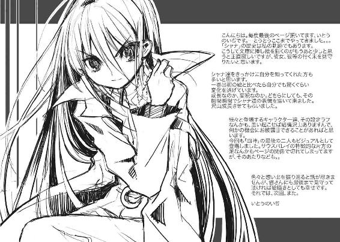
高橋弥七郎
書いてる間は東京人な大阪人。豆知識その21ー。
各作家さんで違ってる背表紙の色やけど、あれはＣＭＹＫ（シアン、マゼンダ、イエロー、ブラック）の色を10％ずつ区切ったバリエーションから選ばれてるんよー。ちなみに、高橋のはＣ60％、Ｍ30％なんやってー。
舐めた真似をする作者
いとうのいぢ
こんにちは、のいぢです。最近、迷いインコを保護した後、引き取ることになりました。インコとの共同生活、かなり癒されます。籠から出してやるとお腹がすくまで我が物顔で遊びまくる困ったやつですが。
電撃文庫
灼眼のシャナ
高橋弥七郎
二〇十二年八月十日 配信
発行者 塚田正晃
発行所 株式会社アスキー・メディアワークス
〒一〇二−八五八四 東京都千代田区富士見一−八−十九
(C)2010 YASHICHIRO TAKAHASI／ASCII MEDIA WORKS
本書（電子版）に掲載されているコンテンツ（ソフトウェア／プログラム／データ／情報を含む）の著作権およびその他の権利は、すべて株式会社アスキー・メディアワークスおよび正当な権利を有する第三者に帰属しています。
法律の定めがある場合または権利者の明示的な承諾がある場合を除き、これらのコンテンツを複製・転載、改変・編集、翻案・翻訳、放送・出版、公衆送信（送信可能化を含む）・再配信、販売・頒布、貸与等に使用することはできません。